| 殺人ハウス | |
| 藤津一 | |
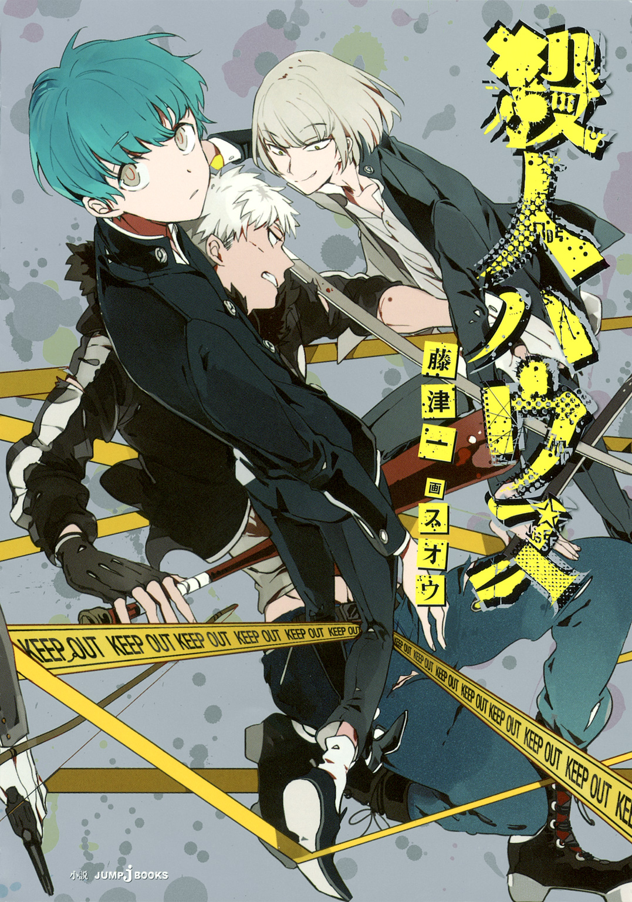
この本は縦書きでレイアウトされています。
また、ご覧になる機種により、表示の差が認められることがあります。
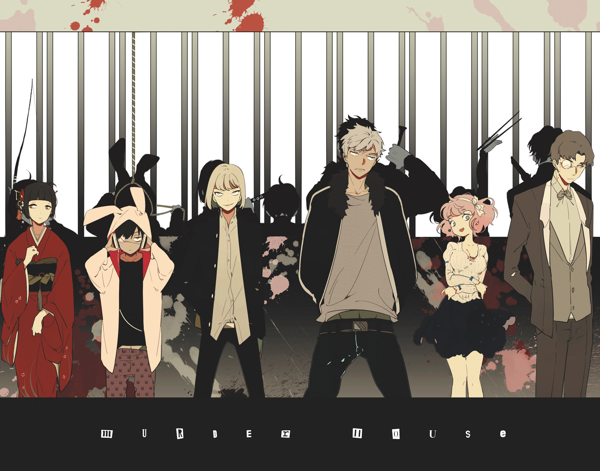
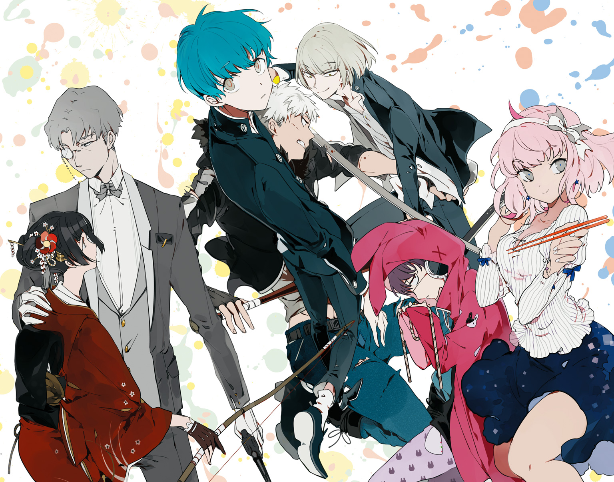
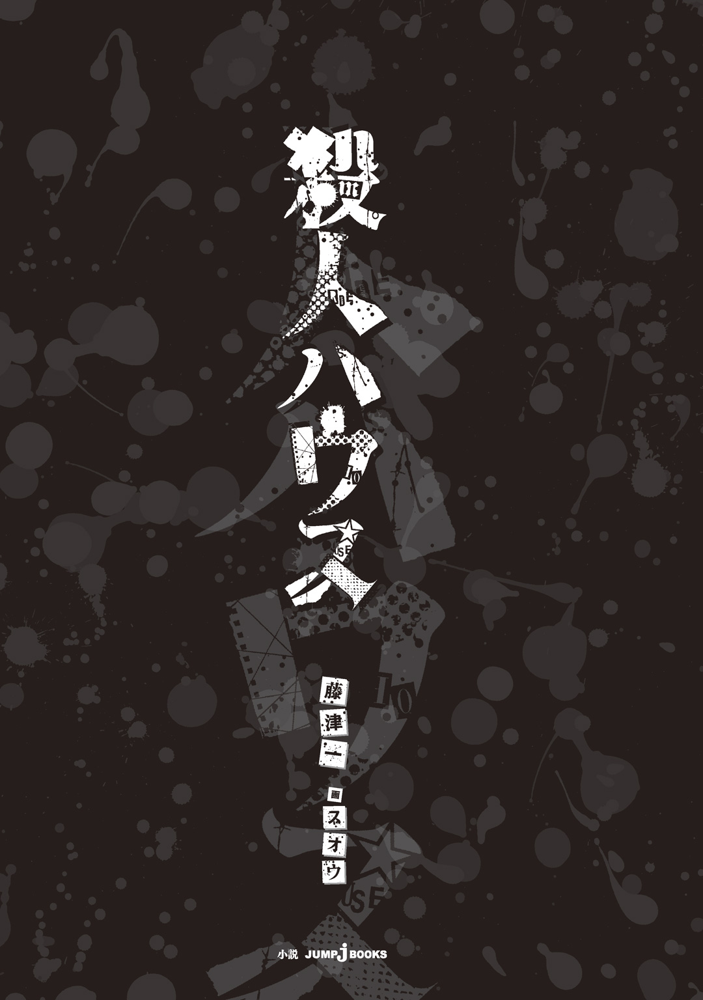
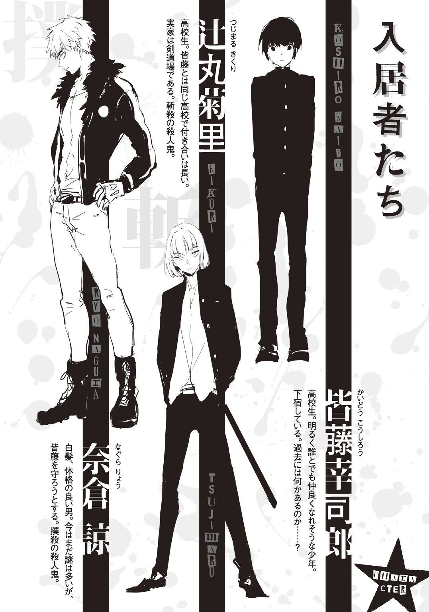
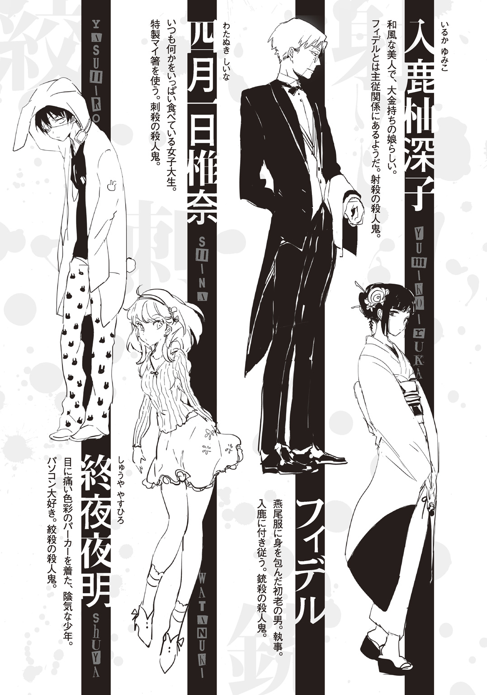
――聞いた話と全然違うじゃないか。
皆藤は真っ先にそう思った。こんなことは望んでいなかったのだ。
皆藤は仲良く、明るい......幸せを求めて、それらに対する希望を胸に秘めてこの屋敷に来たのだ。食事を共にし、夜は談話室で話に花を咲かせ、朝を迎えて「おはよう」と他愛もない挨拶を交わす......そんな生活を夢見ていた。
いや？ 正確に言えば確かにそれは実現していたのだ。だから皆藤は幸せな生活を送れていた......のだが、それは全てまやかしでしかなかったのだと、否が応にも知らされることとなってしまった。
それはある休日の昼間、ある一室にて、......生活を共にしていたはずの、仲間の一人の死体と共に、全てを提示される。
『皆さんようこそいらっしゃいました。私は当屋敷のオーナーの代表です。この度お手紙を送らせて頂いた方々は、厳選された、筋金入りの、十人以上の殺しを成し遂げておられる〝殺人鬼〟なのです！』
館内に設置されているであろうスピーカーからそんな言葉が流れて、床に広がり続ける血溜まりは、その声に振動して波打った。
ある少年がいた。名前は皆藤幸司郎といった。
彼は別段成績が良い訳でも、運動が出来るタイプでもない。学力面で特徴を挙げるのならば、文系教科が少し苦手というくらいだ。だが彼は明るい性格をし、進んで話しかけはしないが友人の数は多かった。表情豊かで思いやりがある、人から好かれるタイプなのだ。
そんな彼のもとに一通の手紙が届く。白い封筒に入っていたのは一枚の手紙と、黒のアンティークキー。それには水色のリボンが巻かれている。
〝おめでとう御座います！
アナタ様はこの度、当シェアハウスへの入居者として当選しました！
同封されている鍵をお持ちになり、下記のシェアハウスへお越し下さいませ！〟
皆藤は「当選」という単語に首を傾げた。彼にはシェアハウスに関する応募等申しこんだ記憶は無いのだ。変な手紙だな......と思いつつも、鍵が同封されているし、その手紙にはＵＲＬも記載されていてネットで検索すると、確かに実在する物件の紹介がされていた。
「......でもやっぱり〝当選〟っていうのがわかんないな。何で俺のところにこんな......」
パソコンの液晶画面と手元の手紙とを交互に見比べた。消印はある、ということはきちんと郵便局から来た手紙なのだろう。だが差出人の名前はどこにも書かれてない。
皆藤はうーん、と唸りながら首を捻り、一まず明日へ保留にすることにした。
翌朝になって、皆藤はもう一度手紙と鍵を見て夢でなかったことを確認すると、サイトのページを印刷して地図を頼りにシェアハウスへ行ってみることにした。
手紙にはちょうど今日の日付に、屋敷へ来るようにと書かれている。
皆藤は都内公立高校に通っている、至って普通な高校二年生なのだが、実は訳あって学校紹介の下宿に住んでいる。だから、折角招待されているんだし「入居者に当選」という言葉通りなら、きっとタダでその屋敷に入ることが出来るのだ。そう考えて皆藤はシェアハウスへと向かった。
下宿から駅を二つ跨ぎ、ビル街をしばらく歩くと開けた場所が見えてきて、そこには周囲の風景とは似つかわしくない大きな洋館が堂々と建っている。高い赤レンガの塀に囲まれて、黒く大きな門は開け放たれていた。広い中庭には小さな噴水まで造られている。
洋館も赤レンガと同じく臙脂色で、二階建てだ。両開きの玄関は片方だけ開けっ放しで、「開放中」という書体に凝った看板も見られた。
だが、やけに静かでスタッフの姿も見えず、おそるおそる玄関から中を見てみると、大きなシャンデリアと中央から左右に割れる階段だけが、彼を迎えた。
「あ、あのー、誰かいませんかー......？」
広い屋敷に響く皆藤の声に応答する者は現れなかったが、代わりにバタンッと扉の閉まる音が奥から聞こえた。その閉まる音に皆藤は肩をビクつかせつつ、一体誰だ？ と、ソロソロと玄関ホール中央まで歩いて行くと、左右に続く長い廊下の片方から誰かがやってくるのが見えた。
「アレ？ ......あれって」
「はーあ、何もねーなぁ......つまんねーの」
「......辻丸？」
「あ？ ......皆藤か？ 何でお前ここにいんだよ」
「いや、それはコッチの台詞なんだけど」
皆藤が「辻丸」と呼んだもう一人の少年はクラスメートである。彼は目付きの悪い切れ長の目と、おかっぱ頭をしている。この皆藤と辻丸は一年生の頃から同じクラスであり、色々と訳あって、そこそこ仲が良い関係であった。
「何でって、俺は何か招待状？ ......か何か知らねーけど、手紙が来たから見に来た」
「俺だってそうだよ。っていうか何で辻丸にも？ 何か応募したのか？」
「さあ？」
自分のことなのに「さあ？」と答えるのはどうなんだよ、と皆藤は心の中でぼやいた。
「しっかし、何もねーな......面白いもん」
「ネットで見たけど娯楽室とかあったろ？ 確か地下一階、だっけ？」
「どーせゲーセンじゃねーんだろ？ キョーミなーし」
辻丸の投げ遣りな返答にハハハと苦笑していると、コツコツコツと、階段上から足音が聞こえてきた。この屋敷のホールは吹き抜けになっており、ロビー天井はシャンデリアとその脇にステンドグラスが嵌めてあって、吹き抜けに面した二階の廊下を歩いている人物が確認出来る。
ヒールを鳴らして下りてくるのは、皆藤から見て少し年上らしい女性。と、その少し後ろへと合流したのは青年だった。この二人は言葉を交わすことは無く、知り合いではないと見受けられる。
「あれ～？ あたし等以外にもまだ来てたんだ？」
そう言う女性はフワフワの髪に白いカチューシャをしていた。ファッション雑誌から出てきたようなお洒落でスラリとした長い脚、目はぱっちりとした二重。皆藤は第一印象として、美人だなぁ、と感じた。
「......高校生か？ 二人共」
「だったらあんだよ、白髪野郎」
「ちょっ、辻丸！」
辻丸が「白髪野郎」と呼んだ青年。白髪の短髪に泣き黒子、額には右眉にかけて一文字の傷がある。眉間のシワは深く、射抜くような鋭い目。一目で〝怖い人〟に見えた。
そんな青年に辻丸がとんでもない発言をしたものだから皆藤は慌てて撤回せねば、と焦ったのだが、青年は辻丸の顔を一瞥したくらいで特に何も言わない。
「ねえ」
「はい？」
「だからさ、答えてないじゃん。きみ達コーコーセー？」
「え、......あ、はい。そうです」
「フーン。あぁ、あたしね、四月一日。きみは？」
「皆藤です。アッチが辻丸っていって......」
「タヌキ」
皆藤が四月一日に辻丸のことを紹介しようとした時、ホール奥に設置されている暖炉を覗きこんだままの辻丸の口から突然そんな単語が聞こえた。
「たぬき？ 一体何が......」
「なんでアンタあたしのあだ名知ってんのよ!? おかっぱ男児!!」
「お、おかっぱ男児!?」
辻丸の一言に声を荒らげる四月一日なのだが、そんな彼女を見て辻丸はニヤニヤと笑っているだけだ。ここまで彼女が怒るということは、恐らく「タヌキ」というあだ名が気に入っていないのはわかる......が、その切り返しが「おかっぱ男児」とは。
「んだとテメェ！」
「なーによ！ 本当のことじゃない!? 今時おかっぱ頭って......」
「テメェの面よりマシだろ、ドブスが」
「っ......なんですってぇええええええええええええええええ！！！」
今のは辻丸が悪い。
しかし二人はすっかり火がついてヒートアップしてしまった。こういうのはもうどうしようもないな......と皆藤が知らぬ振りを決めようとした所で、先程の青年がこちらをジッと見ているのに気づいた。
「えっと、皆藤です。......あなたは？」
「......奈倉だ。奈倉諒」
「奈倉さん、ですか」
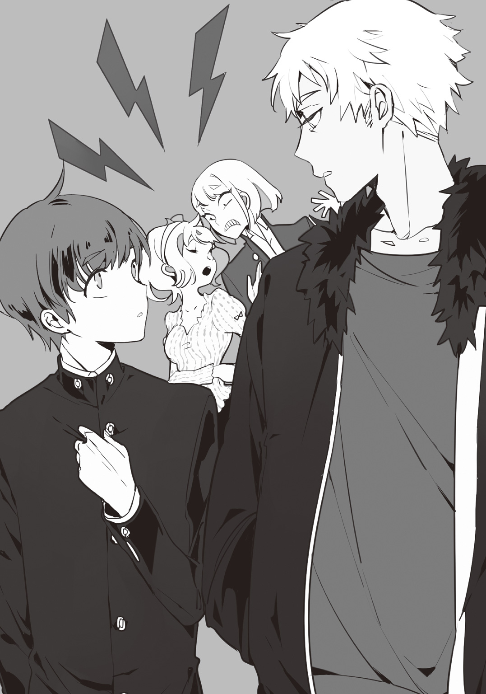
話してみると普通に答えてくれて、別段口が悪いわけではない。悪い人ではなさそうだな......なんて思ってみるのだが、ファー付きの黒コートをその顔で着られると本当に洒落にならないな、と内心思った。
そして、現在合計四名が招待されたということが判明する。
「っていうことは......奈倉さんもやっぱり、鍵も来ましたか？」
「？ ......あぁ、これか？」
尋ねると奈倉はゴソゴソとポケットを探り、やはり同じようなアンティークキーを見せてくれた。奈倉のキーには白いリボンが付いている。リボンのカラーは一人一人違うのか？
「あ、それならあたしも持ってるわよ！」
ほら、と見せてくれた四月一日のキーにはオレンジのリボンが。辻丸のほうへ視線を送ると、ん、と緑のリボンの物を見せてくれた。
「っていうか、スタッフの人がいると思ってここに来たのにさー......いないし！」
「俺等以外に人っていませんでしたか？ 奈倉さん達は先に来てたんですよね？」
「ここに誰もいなかったから一通り探したが......別にいなかったな。食堂にも談話室にも」
「あ、でも開かない部屋があったわよ。アッチ」
そう四月一日が指さす方向は、ロビーから左右に分かれている廊下の片方。いくつか扉が続いているのが見えるが、そちらを向いたタイミングでガチャリとひとつの扉が開いた。
あまりのタイミングの良さに、何だ？ とビックリしたが、見ているとその部屋から小柄な人影が出てきた。それからこちらに気づいたようで、のそのそと歩いてくる。光の差しこむホールまで出てくると、その人影の正体が明るくなった。
ピンクのパーカーのフードを被り、猫背で、伸ばしっぱなしの黒い前髪からは隈の濃い目がこちらをジロリと見ている。またよく見てみると、右目に医療用眼帯を着けているし、被っているフードはうさ耳の様なパーツがついていた。
「なっ、何か......出た」
「何だアイツ？ 変なの出てきたな」
ほぼ同時に四月一日と辻丸がまたそんなことを口にし、互いにいがみ合いだしたのだが、現れた少年はかったるそうにコチラを見てくるだけだ。いや、向けてくるその眼差しからは軽蔑の色も窺える。
「あ、あの......あなたは」
「うるさい」
「えっ......」
「お前らの声うるさい。もう少し静かに出来ないの？ あ、......馬鹿だから出来ないか」
「「はああ!?」」
フード少年の発言に揃って反応する喧しい二人だが、大きな声を浴びせられても少年はうざったそうに嫌がるだけ。
また変わった人が招待されたんだな、なんて皆藤が吞気に考えている最中も辻丸＆四月一日から少年へ向けた文句や罵倒の嵐は止まなかったが、その騒ぎもまた新たな人物の足音に遮られた。その足音はカランカランという音で、下駄だとすぐにわかる。
「あら、何や......随分と賑やかやなぁ」
そんな関西弁が聞こえたほうへ振り向くと、今度は玄関に着物の女性が立っていた。赤い着物に黒い下駄、お団子頭には簪が二本挿してあって、恐らく今ここにいる面子では最年長に当たる。ありきたりな言葉だが「着物美人」と形容出来る人だ。
「あなたもこのシェアハウスに招待されたんですか？」
「せやなぁ、鍵も貰たし......何やおもろそうやったからなぁ」
微笑みながらカランカランとロビーへ、皆藤からの問いに答えながらやって来た。
これで六人目。
「あ？ 何で入鹿までこんな所にいんだよ」
「えっ、辻丸の知り合い？ てか〝イルカ〟って？」
「そこの女の苗字」
辻丸と面識があるらしく、遠い親せきか何かか、もしくは入鹿自身が有名な人物なのか？ と皆藤が首を傾げていると、突如、ピンポンパンポーンと、館内放送で使われる音楽が流れた。
しかし、見回してみてもスピーカーらしい物はどこにも見当たらない。
『あー、あー......。聞こえてますかー？』
ザザッという音の次に聞こえたのは男の声だった。明るく吞気な声音をしている。
「何よ、もしかしてスタッフの人か何か？」
『そーですよー！』
「げっ、何コレこっちの音声届いてんの!? 一体どこにマイクが......」
『げってヒドイですねぇ......傷ついちゃいますよ』
四月一日からの返答にしょげる音声だったが、コホンと咳払いをひとつ。
『皆さんようこそいらっしゃいました。私は当屋敷のオーナーの代表です。名前はちょっと言えないんですけど......この度は、皆さんに是非！ この屋敷で共同生活をして頂きたくてお手紙を送らせて頂いたんです』
「〝オーナーの代表〟......？ っていうことは他にも何人かいる......てこと？」
『そうですねー、オーナーは私を含めて五人といったところです』
オーナー、と言う割にはやけに砕けた印象を与える喋り方だ。皆藤は不思議に思うくらいだったが、この気安さに不機嫌になる者もいたようだ。
「何でオレらが共同生活しなきゃなんないの？ 意味あんの？」
『いえいえ！ 意味というか何というか、......皆さんはたまたま抽選に当たっただけなんですけどね？ 宝くじみたいな！』
フード少年の問いに答える声だったが、その返答を聞いてフード少年は周囲に聞こえぬ音量で、すかさず「うさんくさ」とぼやいた。
「せやけど、うち等はシェアハウスに誘われただけやしなぁ......」
「そういやそうだな。〝宝くじ〟っつわれても、応募した記憶はねーし」
入鹿と奈倉がそう疑問点を口にするのだが、またスピーカーの声はエッヘンと咳払いをして改まる。
『そーんなこと言っちゃって、いいんですかぁ～？』
えへへと笑いながら楽しげに言うも、隣にいる辻丸がそろそろぶち切れそうで、皆藤は用件を言うならさっさとしてくれとハラハラするばかり。
『この大きなお屋敷を、当選された皆さんにタダで提供しようという、ちょっとしたプレゼント企画なんですよ。当選された七名の方にここを使って頂く、それだけなんです！』
「七人？ ......あ」
皆藤が確認したのは入鹿まで数えて六人だ。あと一人足りないぞ......？ と見回すと、少し離れた所にもう一人いるのを発見した。こちらに近寄ってくる気配が無い、初老の男。グレーの髪に伸びた背筋、それから片眼鏡をかけている。渋い雰囲気と黒の燕尾服がやけに型にはまっていた。彼が恐らく七人目なのだろう。
『それではそれでは、さっそく本題に入らせて頂きますね！ この大きなお屋敷にて、共同生活をして頂きます。それに伴ってのルールを説明しちゃいましょう！』
シェアハウスルール
～入居面～
・入居者以外の立ち入りは厳禁。
・引っ越し作業は全て運営側が負担し、業者も用意する。
・その他生活面に関しての不明点はオーナーまで。
・ペット禁止。
～安全面～
・入居者の安全の約束。
・正面ゲートと裏門、中庭には監視カメラが設置されており、二十四時間体制で監視。
～施設面～
・敷地内の物、中庭、屋敷共に自由に、好き放題に使用可能。
『こんなところでしょうかね！ このまま本日入居される方は、明朝には引っ越し業者がこちらに着くようにも手配します。入居者の身辺は完璧に保護しますし、怪我等をされた場合は屋敷内に医療施設はありませんが、ご連絡頂ければ早急に対応します。他に何かご要望があれば、迅速に対処もしますよ～！』
至れり尽くせり、まさしくそれが相応しい言葉だった。ここまでされると出来すぎていないか？ という疑問すら浮かんでしまう。
「いや、そもそも俺達がここに入居することになったとしても、お前らに何のメリットがあるんだ？」
『メリットですか？ ......うーん、そうですね。私達はとにかく皆さんにこの屋敷で過ごしてもらい、どんなふうに生活されるかの、......データが欲しいと言いますか』
「データ......てことは宿泊施設と関わりでもあるのか？」
奈倉のその問いに『そんなところですかね～』とスピーカーの声は答えるが、何とも適当な返事だ。
「施設を自由に好き放題にー、ってことは......電気代とか水道代とかはどうなのよ？」
『勿論！ こちらが全額負担致します！ 皆さんには快適に過ごして頂きたいので！』
「マジで!?」
質問といいリアクションといい、四月一日は恐らく一人暮らしをしている口だろう。それにしても〝全額負担〟だなんて......、この屋敷の大きさも、施設面も一般的な高級ホテルと大差無いというのにどうしてそこまでやるのだろうか？
「あたし決めた！ ここに入居する！」
「え、決断はやない？ ええんかいな」
「だってこんな物件ないじゃない！ ......物件って呼んで良いかわかんないけど、こんな屋敷にタダで住めるなんてラッキー♪」
「はぁ......お兄はんは？ 入居するん？」
「勿論」
「即答かい......」
即断即決な四月一日と奈倉に挟まれた入鹿はそれでもまだ悩んでいた。何故彼女がここまで決めあぐねているのか、皆藤にはわからない。
「何か問題でもあるんですか？ 共同生活がイヤ、......とか」
「あぁ、ちゃうんよ。そうやないんやけど......」
「？？？」
「......ま、ええか。うちも入居断る理由はあらへんし......」
何に迷っていたのか、何が問題だったのかは結局わからなかったが、二人に続いて入鹿も入居を決める。
「じゃあ、お前はどうするんだ？ 辻丸」
「......あ？」
「......まさかとは思うけど、お前、聞き流してた......とかないよな？ この流れで」
「......あー、で、何だ？ 入居すりゃいんだろ？ すりゃあ」
（......駄目だ）
予想通り、辻丸は途中から話に飽きて聞いていなかったのだろう。大して考える素振りもなく適当に流した、今。
「そういうお前はどうなんだよ、皆藤。お前下宿住みだろ？ 別にこんなとこにわざわざ入らなくたって......」
「な、辻丸！ そのことはあんまり大きな声で言うなって前にっ」
「あ～ら悪かったわねぇ皆藤チャン。失敬失敬」
何が失敬失敬だ、と皆藤は辻丸を睨んだ。ヒラヒラと振る手とニヤリと笑った口元は、確信犯であることを示していた。
「俺だって入居するさ、勿論！」
「はあ？ マジかよ......」
「悪いかよ？ こういうシェアハウス憧れてたんだ。別にいいだろ？」
「......そーですかっ」
わざと威張って皆藤は言ってみたが、辻丸はもうどうでもいいやとフラフラと階段を上って行ってしまった。一体どこに行くつもりなんだか。
そんな辻丸の背から視線を逸らすと、皆藤の目に留まったのは、こちらもフラフラと歩きだしたフード少年だった。
「あれ、どこ行くんですか？」
「部屋」
「へ？」
「だから部屋。しつこい」
気だるそうに、投げやりに答えたフード少年は、先程出てきた部屋へと戻って行ってしまった。バタン、と扉を閉めた音も耳に届く。
「......あの。あなたは、どうするんですか？」
順々に入居を決めていく流れの中、最後にまだ聞いていない初老の男に聞くと、一文字に閉じていたその口を開いた。微動だにせず、表情筋ひとつ動かさない為に人形にも思えてしまうその男は、見た目通りのハスキーな声で答えたが、外国人だと思える外見に似つかわしくない流暢な日本語を話した。
「......入居するでしょうね」
そして、これでここにいる全員の入居が確定したということになる。
『ではご招待した七名様、全員の入居ということで！ 宜しいですね？』
明日の朝には全員の家具一式が、運営側が手配した業者達の手によって届くそうだ。各個人の部屋はというと、ホールから左右に伸びる廊下を進むといくつもの扉が見え、扉にはそれぞれノッカーが付いていた。ノッカーというのは、ドアをノックする用につけられている金属具であり、色々な色の塗装がされ、石がはめられている。同封されていたあのキーについてるリボンの色と同じ色の部屋を使用して良いということだった。
皆藤のリボンは水色。水色のノッカーがついた扉は一番端に位置していた。差しこみ口にキーを差しこんで捻ると、ガチャンとロックが外れ、扉が開く。
共同生活の始まりだ。
「なあ、せっかくのシェアハウスなんやし、改めて自己紹介せえへん？ まだ料理も来ーへんようやし」
雑談が行き交う中、入鹿はそう提案した。
入居を決めた翌日である。オーナーからの電話での呼び出しにより、食堂では入居者六人が席に着いていた。七人目のあの初老の男性の姿は見られないのだが、椅子は六つしかない。
「いいですね、ぽくって」
皆藤は喜んで賛成すると「ほな言い出しっぺのうちから......」と入鹿が切りだす。
「入鹿いいます。フルネームは入鹿柚深子、普段は実家の道場の師範とかやってますわ」
「道場？ ......っていうと、武道系？」
「弓道だろ」
皆藤の質問に答えたのは何故か辻丸だった。何でお前がそんなこと知ってるんだ？ という顔で彼を見ると、ヤベ、と苦い顔で舌を出した。
「そういえば、入鹿さんのこと初めから知ってたっぽいもんな。入鹿さん、有名人なんですか？」
「いやいや、そんなんやないで？ 弓道言うても、うちで代々やってるだけやし、流派も大したことあらへんしな」
「ハッ、噓吐けよ。インハイ総なめしといてよく言うぜ」
「インハイ総なめ!? 弓道で!?」
「昔の話やわ。それに総なめちゃうよ。高校ん時は途中からやし......、てか辻丸はんよう知ってはりますな」
「......白切りやがって、テメェが俺ん家来たから親父が気に入ったんじゃねぇか。そのせいで変な知恵までついちまって......」
「家？ 何で入鹿さんがお前ん家行くんだ？」
「......あー」
皆藤からの問いに一瞬固まった辻丸は喋りすぎた、とだるそうにうなだれた。
「せや、そんなら辻丸はんが自己紹介したら話早いんちゃう？」
ずっと微笑みを崩さない入鹿だが、段々その微笑みがただ〝優しい〟だけではないことが垣間見えてきた。バトンを渡された辻丸は初めムグムグと口をつぐんでいたが、これでは埒が明かないと諦めて、嫌そうに口を開く。
「辻丸菊里、......実家が道場やってる、そんだけ。学校とかはコッチが言うからいいだろ」
コッチ、とは皆藤である。投げやがったコイツ。
「そんだけ、って何だ？ 実家が道場やってるなら継ぐんじゃないのか？ 普通は」
奈倉のその言葉を耳にすると辻丸はより一層、眉間のシワを深くして、奈倉を睨んだ。その様子を見ていると、どうやら彼は奈倉のことも良く思ってないようだ。
「辻丸はんの家な、剣道の小さい道場やってはるんや。そんで、前にうちがおとんに挨拶しに行ってなぁ......」
「だから入鹿さんのこと知ってたのか」
「はいはい、俺の話おしまい。次だ、次」
家のことを話したくないのか？ いや、そもそも彼は人と話すことが好きではないのだ。皆藤はそれを汲んでじゃあ、と口を開く。
「皆藤です。フルネームは皆藤幸司郎、辻丸と同じクラスで、学校はここから二つ隣の駅です。えっと、後は特に......？」
いざ自己紹介となっても話すことが無いな。と頭を搔くと、四月一日がねえねえと手を振った。
「何できみら仲良いの？」
「え？」
「きみ、皆藤君は割と真面目な生徒、って感じするのに......こんなおかっぱとでしょ？」
「髪型関係ねーだろ」
「それに、きみら二人並ぶとイジメっ子とられっ子にしか見えないし～？」
四月一日が二人の関係に興味を示したのは意外だったが、皆藤はうーん......と辻丸を横目にしばらく考えると、曖昧に話しだした。
「どう、......かな。なあ辻丸」
「あー？ 俺に振んのかよ......まぁ、お前には色々借り作ってんのは確かだな」
「......課題の写しとか？」
「掃除当番の代打とか」
「早退の誤魔化しとか、中庭の窓ガラス破損の隠蔽とか」
「そうそう」
「昼飯の足りない金貸したのとか、文化祭で他校と喧嘩したのを誤魔化したのとか、出席・単位の言い訳の助けとか、停学処分の取り消し手伝いとか......」
「なんや辻丸はん、ダサいなぁ」
カラカラと笑う入鹿に「うっせーなー」と辻丸は文句を言うが、皆藤に多くの借りを作っているのは事実だ。皆藤にとって、辻丸が友人という位置にいるのかは断定出来ないが（そこまで仲良しな訳でもなければ向こうが自分をどう思っているかもわからない為）、ただのクラスメートの一人です、とまで関係が希薄な訳でもない。
「何だ、じゃあどっちかって言うとおかっぱのほうが情けないんじゃない。ププーッ」
「あーあーいちいちうっせー女だなぁ......」
「はあ？」
「あ、せや。次はあんさんでどうや？ 自己紹介」
そう入鹿に振られると四月一日は辻丸に向けかけた矛先を引っこめた。言い合いが始まらずに済んで皆藤はホッと胸をなでおろしたが、辻丸はにやにやと笑みを浮かべている。だがソレは無視して四月一日は自己紹介を始めた。
「あたしは四月一日椎奈。こっからの最寄り駅だと......二本かな？ 電車を乗り継いだ駅の大学に通ってるわ。国際学部系の三年生♪」
「へぇ......じゃあ英語が得意......っていうことに」
「英語なんてどーでも良いのよ。とりあえず最低限、どこ行っても話せるくらいにしとけばどこにでも行けるでしょ？」
「何や、外で何かしたいことでもあるんかいな」
「そんなのもっちろん！ 世界中の料理を食い尽くすこと♪」
どんな夢かと期待したが答えは斜め上方向を掠めて行った。その話を皮切りに四月一日はあの国では何この国では何と食事のことしか話さなくなってしまい、入鹿も皆藤も苦笑いしか出来なくなっていたのだが、途中で我に返った四月一日は「あ」と何かを思い出したかのように話を中断する。
「あたしのトコで止まっちゃったか。自己紹介の途中だったんだよね？ ......じゃあさ」
「......？」
「次はあんたがやったら？ 〝腰抜け〟」
ピッと指さしてバトンを渡したその相手、奈倉のことを〝腰抜け〟、と彼女は呼んだ。
突然何の話だ？ と皆藤は二人を見比べたが、入鹿や辻丸は特に気にしていないようだ。呼ばれた奈倉もピクリと反応するだけで、言い返すことなくそのまま自己紹介に入る。
「......奈倉諒だ」
「......。え、そんだけ？」
「あぁ」
「仕事のこととか言わへんの？ 奈倉はん」
「......別に」
「ハッ、流石は〝腰抜け〟だなぁ......ったく」
しかし辻丸にそれを言われても奈倉はそれ以上言うこともなく、口も目も閉じてしまった。突っこんだ四月一日・入鹿・辻丸はというと、黙ってしまった奈倉にそれ以上声をかけることも無く、しばし沈黙が続く。
「じゃあ」
と、沈黙を破ったのはあのフード少年だった。
「オレは終夜。......名前は夜明。......、普段は別に」
「何もしてねーだろ、引きこもりが」
「何？」
辻丸の言葉に反応した終夜はジロリと長い前髪の中からこちらを睨んだ。何か癇に障ったのだろうか？
「終夜はん、歳はいくつ？」
「十六。多分ソイツらと一緒」
「え、俺達と同級生......？」
にしては幼く見えるのは彼の小柄な外見のせいか？ それとも声変わりしていないような声だからか？ と思ったが口にしたら睨まれるため、胸にしまっておいた。
「学校はもうメンドクサイから行ってないけど、暇だから仕事はしてる」
「仕事？」
「ＩＴ系、って言えばアンタ達でもわかるでしょ？」
カクン、と首を傾げたがその言い方は確実に見下している......きっと彼はここにいる全員を馬鹿にしているのかもしれない。
ＩＴ系の仕事を、部屋にこもってやる高校生なんて普通はあり得ない。皆藤から見ても、辻丸とは対照的に、普通の人とはかけ離れた頭脳の持ち主なんだと、そう終夜を認識した。
「おい皆藤」
「ん？ 何だよ、辻丸」
「お前、今何か俺のこと馬鹿にしたろ？」
「......別に？」
とりあえず、これで今席に着いている者の自己紹介は一通り終わった。そして何人かがルームキーを机に放っている為、誰がどの部屋かも判断出来る。
水色は皆藤、緑は辻丸、オレンジは四月一日、紫は終夜、赤は入鹿、そして白は奈倉。これさえ覚えておけば互いの部屋の位置が把握出来る。が、
「そういえばあのおじさんは？ 席も無いし、どこいんのよ一体」
「あ、そういえば......」
一階の個室が並ぶ扉の、カラフルなノッカー。ここにはない「黒」があったのを皆藤は思い出した。
「別にいーんじゃねーのー？ つか飯まだか？ 腹減った」
「昨日はもう準備されとったしな、また誰かが運んで来るんちゃう？」
「ちょっと厨房見てくるか......」
そう奈倉が席を立ったタイミングで、食堂から厨房へと繫がる両開きの扉が開いた。そこから出て来たのはあの七人目、初老の男だ。昨日と変わらず燕尾服に身を包んでいる。
「あ、出て来た」
「おっさんの席ならねーぞー」
辻丸がそう声を掛けたが、男はそのままガラガラとサービスワゴンを押してこちらにやって来る。全員で頭の上に疑問符を浮かべた。
「......何でワゴン押してるんですか？」
「おじさん、執事みたいよね～、よくドラマとかで見るアレ。燕尾服ずっと着ちゃって」
「......あながち間違ってませんよ」
「え？ どゆこと？」
そう答えただけで男はワゴンを円卓に寄せると席に着いている六人分の食器やグラスを次々と置いていく。皆藤らは大人しく座って待っていたが、どう見ても、食器を配る手つきが慣れているというか、普通のレストランに行った時の様な手際の良さを目撃した。
「んだよ、感じ悪ぃーよな。はっきり言わねーで」
「......」
「あながち間違ってない、......てことは何？ 『職業：執事』ってこと？」
「......。な、なあ......フィデルはん？」
「「「「「？」」」」」
「今、皆で自己紹介しよったんよ......せやから、その、自己紹介くらい......な？」
辻丸が入鹿のことを知っていた時のように、入鹿はその男を「フィデル」と呼んだ。
だが、知り合いなら普通に話せば良いはずなのに入鹿は遠慮がちに......というか、ちょっと挙動不審だ。
彼女の言葉に少し動きを止めた男はしばし考えると、作業を再開しながら口を開く。
「名前はフィデル、そのまま呼び捨ててもらって構いません。短い間ですが、昔に執事業をしていたことがありまして......その流れでオーナーからの手紙に、『良ければこの屋敷内でも、皆の世話をしてくれ』という様な旨が。断れば他の者が回されるとのことだったのですが、......何分今は暇なので」
食器を配り終えたフィデルはサービスワゴンを押し始める。昨日も彼を見て落ちついた印象があったが、こうして仕事をしているのを見ると全く無駄の無い動きをしているということがよくわかった。
が、再び厨房へと入る前に突然ピタリと歩みを止める。何故か、入鹿のすぐ脇で。
「？」
皆藤や四月一日は何だ？ と首を傾げて見ていたのだが、立ち止まったフィデルは少し腰を折って入鹿に何か耳打ちしたようだった。しかし、フィデルはただそれだけのことしかしていないのに入鹿は大げさに肩をビクつかせ驚いたり、早く行けと追い払うような素振りを見せる。涼しい顔をしていた入鹿がコロコロと表情を変えるのに対し、フィデルは眉ひとつ動かさず、厨房へ入って行ってしまった。......いや、眉は動かさなかったが、皆藤にはフィデルの口元が少し笑ったようにも見えた。
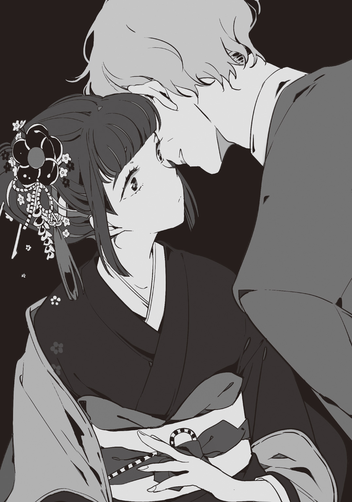
フィデルが引っこむと入鹿はフー......と大きく息を吐いて肩を落とす。
「......入鹿さん、フィデルさんの知り合いなんですか？」
「えっ!? あ、せ、せやな！」
声が裏返っているが本当に大丈夫か？ 一体何にそんなに焦っているのだ？ と、ますます気になる。
だがこれ以上突っこんでももう答えてくれないかもしれない、と皆藤はそれ以上の質問はやめようと思ったのだが、一つ席を置いて隣の四月一日は何故かニヤニヤと笑っていた。
「フフフ......ねぇ、入鹿さん」
「なっ、何や？」
「さっきあのおじさん、〝昔、短い間だが執事業をしていた〟とか言ってたよねぇ～？ もしかして、その時に面識あるんじゃないの？」
「えっ、そうなんですか？ っていうか執事を雇う家って......」
「いや、それはちゃう！ ......ちゃうんやけど、執事やなくて......ただ家にいただけっちゅーか......いや、でも仕事はしてはったな......」
「？？？」
「入鹿の家は政治家のどでかい家だぞ」
濁す入鹿本人を差し置いて、辻丸が答えた。完全に飽ききっていて円卓に足を投げ出している。
「......あ、入鹿議員!? の、娘ってこと!?」
「そのとーり」
皆藤が辻丸の足を下ろさせると、ようやく厨房から料理をワゴンに載せたフィデルがやってきて、料理が配られる。
待ち望んでいた辻丸はやっとか、とため息を吐きながら手を伸ばす。口を閉ざして俯いていた終夜も黙々と食べ始めた。入鹿と奈倉は手元に料理を寄せて「いただきます」と手を合わせてから食べ始め、皆藤も手を合わせてから食事を始めた。しかし、
「......四月一日さん。何ですか......ソレ」
「ん？ これ？ マイ箸―――！」
じゃじゃーんと掲げたのはオレンジ色のマイ箸だった。しかしただのマイ箸なら特に不思議ではない。が、それの全長は何故か三十センチもあって折りたたみ式だ。そもそもそのマイ箸をどこから出したのかすら見当がつかない。
「あ、せや。奈倉はんいける口？」
「酒か？」
「せっかくの休みやし、昼からでもええやろ？」
「俺は全然、付き合うぞ」
「はいはーい！ あたしも！」
「俺も」
「お前は未成年だろうがっ」
四月一日に並んで辻丸もしれっと手を挙げたが、皆藤はそれを叩き倒した。
先程説明があった通り、フィデルは皆藤達の世話役、「執事」をする為に同じ食卓には着かないらしく、給仕にあたっていた。無駄口をきかず、粛々と仕事をこなして。
「あ、ねえねえ、おじ......フィデル？ さん。あたし皆の五倍は食べるから厨房に伝えてくれる？ 作りすぎても問題ないし♪」
「畏まりました」
四月一日の前にあったはずの料理は目を離したすきに綺麗に無くなっており、次々運ばれてくる料理も彼女一人でほぼ食べきってしまう程だった。形容するならまさに〝吸引機〟と言えるだろう。
「......」
談笑しながら食事を楽しむ四月一日とは真逆に、終夜はこれでもかと、どんな声をかけられようとちょっかいを出されようと一言も発さずに黙々と食事をしている。が、彼が手をつけた皿には野菜がやけに取り残されており、フィデルにも「コーラ無いの？」と聞いていた。引きこもりに次いで偏食家なのか、不健康極まりない。
食卓を賑やかにするのは主に女性二人で、終夜は沈黙。奈倉は話を振られると端的に相槌を打つ程度。皆藤もたまに巻きこまれるが、酒が入った大人たちと比べるとそれほど長居出来ずに途中退場。因みに辻丸はいつの間にか、食べたい分だけ食べてさっさと自室に帰ったと思われる。皆藤が席を立った時には、既に彼の姿は無かった。
入居して、すぐにこうして食事会も兼ねての自己紹介が済まされた。
休日を終えて平日になってみれば、学生は学校へ、社会人は仕事へ、ということで昼間の屋敷内は静かなものらしい（不登校の終夜、屋敷内で仕事をするフィデル、現在仕事をしていない奈倉のみが昼間もいる）。食事は各自の部屋に持ちこんで済ますことも出来るが、食堂まで行けば何でも作ってくれるので基本的には食堂に集まることが多かった。厨房スタッフはオーナーのほうから派遣されてくる料理人が沢山いるらしく、和・洋・中、フレンチやイタリアンまで本当に何でも出してくれる。
食堂以外の施設はというと、一階のテレビと幾つかのソファが置かれている談話室。一階にある黒いドアから地下へと下りた所にあるサウナ室完備の大浴場と、ダーツやビリヤード、スロット、それから小さなバーもある娯楽室。あとはあまり使用されない書斎が一階の隅にぽつんとあるくらいだ。
入居者達は自由に施設を使い、特定の部屋に入り浸ったりして暮らしていたのだが......。皆藤からすると、引きこもりの終夜が自室から一切出てこないことが一番印象に残っていた。
しかしここまでのサービスを提供して、運営側には本当にメリットはあるんだろうか？ とずっとそれが引っ掛かっていた。
「まぁ、俺はちょうど住む場所探してたから都合が良かった。他の連中も快適に過ごせるんだから文句も疑問もねーんだろうな」
「そんなもんですかね......」
ある日、談話室で奈倉と鉢合わせた皆藤はソファに座り、屋敷について話をしていた。
「......気になってたんだが、お前は何でシェアハウスに憧れてたんだ？」
「へ？」
「他人との共同生活だぞ？ 嫌がる人間だっているだろ」
「......えーっと、」
談話室にて、奈倉の問いに皆藤は困ってしまった。これについては別に深く突っこまれることも無かったからだ。それに、改まって理由を話すのも少し気恥ずかしい。
「......本当に、憧れてたんですよ？」
「どこに？」
「色んな人と賑やかに過ごせる、......っていう所ですかね。何かありきたりな理由ですけど......」
「......そうか」
とある事情によって皆藤は下宿住まいをしていた。だから基本的には一人暮らしだったのだ。大人数でいることが好きとか、そこまでは言わない。しかし、一人で寂しくないと言えばソレは噓になる。
「まぁ、辻丸がいたから余計に安心しちゃったのはあるんですけど。......俺、食堂にいる時が今は一番幸せなんです」
「......」
「割と皆集まるじゃないですか、あそこ。皆でテーブル囲んで、雑談しながらご飯食べて、......って、下宿じゃなかなか出来なかったし......」
「......」
「......なーんて、女々しいですよねぇ。このこと、皆......特に辻丸には黙っててください。ネタにされるんで......」
「いいんじゃないか？」
「？」
ハハハと照れ隠しに笑う皆藤だったが、奈倉の顔は笑っていなかった。
「一人の孤独さは俺も知ってる。長く実家に帰ってないからな」
「......」
「だから別に、恥ずかしいことねーだろ？ いい理由じゃねーか」
奈倉はそう言うと、口元を綻ばせた。奈倉の笑った顔を初めて見た皆藤はビックリして固まったまま、そのまま小さく「そうですか......？」と聞いてみる。
奈倉は住居や職を固定することなく、各地を転々としていた。というのは彼から聞いたことである。その理由は聞かせてくれないのだが、そんな彼だからこそ、その『孤独』という言葉はやけに胸に刺さった。
奈倉はそれ以上口を開くことは無かったが、黙って力強く頷いてくれた。
そして、こんな素敵で幸せな生活に、〝スパイス〟を加える為、全てが動きだした。
共同生活を始めて一か月程度が経ったある朝。目が覚めて、身支度をしていると勉強机の上に何かが置いてあるのを見つけた。
何だろうと手に取ると、このシェアハウスへの勧誘の時と同じような白い封筒だった。中身はそこそこ厚い。
「......ん？ っていうか、誰がこれを......机に？」
入居者が所持している鍵は、個人の部屋を開ける為と共用の部屋の開錠・施錠が出来るようになっている。例えば書斎の部屋の鍵は皆藤でも入鹿でも終夜でも、他の誰でも開け閉め出来るのだが、個人の部屋だけはその部屋の主のキーしか対応していない。
シェアハウスであるのだから寝る前にいちいち鍵を閉める必要もない為、皆藤はいつも鍵は開けっ放しにしているが......誰かが入り、この封筒を置いていったのだろうか？ ペーパーナイフが手元に無い為、手でビリビリと封を切り中身を取り出すと、それは十枚のある写真と一枚の手紙だった。
が、その〝写真〟と〝手紙〟を目にして、皆藤は言葉を失う。
日曜の昼の談話室はのどかな空気が漂っていた。大きな窓からは日が差しこみ、室温もポカポカと暖かい。しかし、今はその暖かさとのどかさが苛立ちの元にもなるだろう。皆藤はソファのひとつに腰をおろし、手を合わせて、うつむいていた。
彼以外にはまだ、誰もいない。
「おー、随分と早いなぁ......皆藤」
「......辻丸」
「何だよ、しけた面しやがって」
へらへらと笑いながら辻丸は談話室へやって来た。どこかに出掛けるつもりだったのか、フード付きのパーカーを羽織っていて、ソファに座る皆藤の真ん前へと来た。
そして彼に続いて四月一日が入って来たが、随分と不機嫌そうだ。
「ったく、何なのよ......あの手紙」
「あ？ テメェにも来たのか、アレ」
「当たり前でしょ？ じゃなきゃわざわざここまで来ないわよ......今日は外に出る予定だったのに」
そう。あの封筒に入れられていた〝手紙〟に『談話室へ集まるように』と書かれていたのだ。だから、全員が集まるまでここで待たなければならない。
「お、おっさん来たな」
続いて関係者入り口からやって来たのはフィデル。相変わらず、入居者たちと会っても必要以上に口は開かない。それから少しすると、終夜がのそのそと眠たそうにやってきて、珍しく奈倉も遅くに来た。明るい談話室に、眩しそうに目を細めているところを見ると、寝起きなのだろうか。
これで六人があっという間に談話室に集まったのだが、皆藤はアレ？ と首を傾げる。いつもなら早めに来るはずの入鹿が、一番遅いなんて。
「呼びに行ったほうが......」
「別にいーだろ」
「何でだよ......」
「全員にあの封筒が来てんなら、大体手紙の中身も一緒なんだろ？ なら否が応でも来るはずだろ？」
「......それも、そうだけど」
と、その時。ピンポンパンポーン、と音楽が流れる。
『あーあー、聞こえてますかー？ 皆さーん』
「げっ、また出た」
『いや、だから〝げっ〟て傷つくのですが......』
久しぶりに聞くあのスピーカーの男の声。いや、電話などでもこの男、オーナーが対応してくれてはいたのだが、どこにあるかはわからないスピーカーからの放送は初日以来入ったことが無かったのだ。
『お久しぶりの館内放送です！ 皆さんどうですか？ シェアハウスでの生活は充実してますでしょうか？』
「.........」
しかし、その問いには皆藤でさえも答えなかった。全員口を閉ざしたまま、ソファに寄り掛かったり、うつむいたまま顔を上げもしない。
『......おや？ 一人足りませんね？ 皆さん全員にお手紙は渡したはずなのですが......入鹿さんはどちらへ？』
「......え？」
どうして入鹿がいないことが、オーナーにわかるのだ？ と皆藤は顔を上げた。
音声が届くのは知っている。しかし、何故こちらの様子がわかるのかが理解出来なかった。音声だけでは今ここにいる人間を把握出来るはずが無いのに......？
これではまるで、カメラからこちらを見ているようではないか。
『皆さんがお揃いしてから、重大発表をしようと思っていたのですが......どうしましょう？』
「どうしましょう？ って俺等に振んのかよ」
『いやだって......。あ、そうだ！ それじゃあ皆さんで入鹿さんを呼んで来てください！』
「は？」
『大丈夫ですよ！ 館内放送なら屋敷内、どこでも聞こえるようになっていますから！』
問題はそこじゃないでしょ、と終夜はぼやくが、どちらにしろ入鹿がいないと話は始まらないらしい。
そこで、出入り口付近にいた奈倉が行ってくる、とすぐに入鹿の部屋へ向かった。だがしばらくすると、談話室に置かれている電話がジリリリッと鳴りだしたのだ。
「はい？」
近くにいた四月一日が受話器を取ったが、終始「は？」と首を傾げている。一体どうしたんだろう？ と様子を見ていると、受話器を置いてからハァ......と短くため息を吐く。
「いないって」
「え？ いない......って、入鹿さんが？」
「そ。今腰抜けが入鹿さんの部屋から電話掛けてきたんだけど、部屋には見当たらないんだってさ」
「出かけたんじゃないの？」
ボソリと終夜が呟くが、四月一日は首を横に振る。
「鞄も羽織りも携帯もそのまんま。......でも、弓道の道具一式が無かったから、もしかしたら道場かもしんないだって」
ひとまず、奈倉は入鹿の実家に連絡を入れてみる、と言ったそうだが、待たされる五人も手持ち無沙汰な為、屋敷内を手分けして探すことにした。
一階二階、それから地下も調べようと三方向に分かれる。辻丸とフィデルは二階、終夜と四月一日は一階、そして皆藤は地下を担当。向かう途中で奈倉と合流した為、奈倉と共に地下を見に行くことになった。
「入鹿さんの実家のほうはどうでしたか？」
「いや、来てないらしい」
「そうですか......どうしたんですかね。近くのコンビニにでも行ってるのかな......」
「いや、だがあの手紙は見たっぽいな。空の封筒が机に置いてあった」
「......じゃあ一応、集合のことは知ってる、ってことですか？」
「だろうな」
それでは、どうして真っ直ぐ談話室へ来ないのかが謎だ。
皆藤らは黒いドアを開いて地下へと降り、先に大浴場から探すことにした。昼間に地下を利用すると考えた場合、入鹿が普段あまり使わない娯楽室と比べると大浴場のほうが可能性が高いからだ。しかし、今いるのは皆藤と奈倉の男だけ。何故四月一日はこっちに来なかったんだ......と心底思ったが、もし会ってしまったら仕方ない。と、いうことで、どうかいませんようにとノックをする。
「入鹿さーん......いませんかー？」
「......、応答ないな」
「ですね......」
「一応開けてみるか」
「えっ!?」
が、皆藤の驚きを余所に奈倉は邪魔するぞ、と平然と女湯の扉を開ける。が、広い脱衣所には誰の気配も無かった。
「いないな」
（何で平然と開けられるんだ......？ 俺も奈倉さんくらいになったら気にしなく......いやいや、歳食ったって気にするもんは気にするし！）
「次は娯楽室見てみるか。......な？」
「えっ、あっ、......はい」
大浴場入り口を出て、反対側にある娯楽室へと向かったが、扉の横にある「使用中」というランプが点灯していた。と、いうことは？
「入鹿さん、いるんですかね？ それとも誰かが使いっぱなし？」
「いや、ここはフィデルがいつもチェックしてるはずだ。使いっぱなしってのは無いと思うが......でも確か......」
奈倉が口元に手を当てて考え始めたが、それを見ていなかった皆藤は普通に娯楽室の扉を引いた。手前にギィと開く。
が、ドアを開くと二人の耳にはカッチンという音が聞こえた。
「？」
「皆藤!!」
皆藤が音のしたほうへ顔を上げるより早く、奈倉は皆藤の首根っこをつかんでグイッとドアから引き剝がす。皆藤の手から離れたドアは再び閉まりかけたが、二人がドサッと後ろに倒れこんだそれと同じタイミングで、スタンッ！ とドアに何かが突き刺さった音がした。
ひっくり返った皆藤と奈倉だったが、一体何なんだ？ と皆藤がもう一度ドアを引いてみると、ドアの真ん中に、弓道で使われるあの〝矢〟が真っすぐ立っている。
「えっ......」
それから皆藤はキョロキョロしながら娯楽室へ入って行き、奈倉も起き上がってドアに突き刺さる〝矢〟をその目で確認した。
「ったく、何でこんなもんが......」
「あ、......な、奈倉......さん......！」
ドサリという音と皆藤の上ずった声が聞こえた。奈倉が何事かと皆藤を探してみると、何故かすぐそこで腰を抜かしてへたりこんでいる。息を詰まらせて、体を強張らせてもいた。
「？ どうした？ 何かあったか？」
そう奈倉は尋ねたが、皆藤の様子がおかしいことに気づいた。
「あ......」
アレ。
皆藤は少し斜め前方を指差した。娯楽室に入ると、カウンターがまず目の前にあるのだが、皆藤はそれを指差しているのではない。では何を？ もう少し視線をずらし、奥のほうを見てみる。娯楽室右手奥にはダーツ盤が五つ並べられているのだが、ひとつだけ、普段と違ったものがそこにあった。右から数えて三つ目、左から数えて三つ目、ちょうど真ん中のダーツ盤。
そこには入鹿が立っているのだ。
胸の真ん中に、〝矢〟を突き立てられて。
「いっ、入鹿さん......！」
悲鳴に近い声を上げる皆藤と、入鹿の姿に目を丸くする奈倉。が、それと同時にバタバタとこちらに向かってくる足音が後ろから聞こえてきた。
「ハァー、疲れた......」
「四月一日？ 急いでどうしたんだ？」
「どうしたもこうしたも......何か放送で『至急娯楽室へ！』とか言うからさ......って、あれ？ 皆藤君何してんの？」
真っ先にやって来た四月一日の後ろに続いてゆっくり歩いて来る終夜。しばらくすると辻丸・フィデルものんびり歩いてやって来た。だが、娯楽室へという指示の放送は、地下では聞いていない。
「ったく、一体何なんだよ......集めたり探させたり、また集めたり......」
――死体を見せつけたり？
辻丸は冗談めかして言ったが、その場にいる皆藤以外の人間、女性である四月一日でさえ、入鹿の死体を見てもうろたえもしない。皆藤は入鹿の死体と同じくらい、彼らを何故？ と見回した。
そして再度、ピンポンパンポーンと、館内放送が始まる。
『さて！ これで全員集まりましたね！』
「死んでるじゃん、一人」
『いえいえ、揃ったものは揃ったんです！ これでようやく本題に入れますねぇ』
「......あの封筒に入ってた〝写真〟と〝手紙〟のことか。一体何が目的だ、お前ら」
明るいオーナーの声と対照的な奈倉の低い声が娯楽室に響いた。すると、オーナーはまたコホンと咳払いをひとつして、これからパーティーでもあるかのように楽しげに説明を始める。
『改めまして、ご挨拶させて頂きます。皆さんようこそいらっしゃいました。私は当屋敷のオーナーの代表です。この度お手紙を送らせて頂いた方々は、厳選された、筋金入りの、十人以上の殺しを成し遂げておられる〝殺人鬼〟なのです！』
その言葉に皆藤は愕然とした。一瞬、自分の耳がどうにかなってしまったのか、聞き間違いでもしたのかと疑ったが、今のオーナーの言葉に誰一人として声を上げることは無い。
「......殺人......鬼？ 噓だろ？ ......なんで」
『逃亡の身であろうと警察の網を潜り抜けていようと、権力に守られていようと。どんな事情を抱えていようと殺人鬼は殺人鬼。私達はある目的の下にこの屋敷を造り、貴方達を厳選し、そして招待しました。快適な環境も整えました。ですので警戒は無用です、私達から危害を加えることは一切ありません！』
「ちょっ、ちょっと待てよ!!」
淡々とした説明に耐えられなくなった皆藤は思わず立ち上がる。
「どういうことだよ!? 何の冗談だ？ ......ここにいる全員が殺人鬼って、......だって、それじゃあ辻丸だって！」
バッと、辻丸のほうを振り返る。だが、皆藤が目にしたのは、ニタリと笑みを浮かべる辻丸だった。彼のその顔は今までのこと、全てを肯定している。
「......そんな」
『ええとー、よろしいですか？ 皆藤さん』
「っ!?」
『どうやら貴方にはすんなり信じてもらうことは難しそうですね......それではお一人お一人、紹介しましょうか？ 本当の、紹介を』
その言葉に皆藤は他の五人を見回した。こんなの何かの冗談だ、オーナーの悪ふざけだ、と。しかし、そんな一個人の希望など通用するはずもなく、〝十人以上も人間を殺してきた殺人鬼〟達は、皆藤からの視線に特にリアクションすることも無く、平然としている。
ただ一人、例外がいたとすれば、信じさせてくれ、という皆藤の縋る様な視線から目を逸らした、奈倉だった。
『そうですね、それではお互いのことを知らない人もいるでしょう。奈倉さんの様な有名殺人鬼なんて稀ですし......、そうだ！ 殺した人数の多い順にご紹介しましょうか！』
愉快な司会進行は今の状況を飲みこめない一人を置いてけぼりにし、話を進めていく。
『それではまず、一番人数の多いのは......「斬殺の殺人鬼」、辻丸さんですね！ 合計二十人以上......って、いくら〝辻斬り〟と呼ばれる貴方でもコレやりすぎじゃありません？』
「お前らには関係ねーだろ」
「え？ 〝辻斬り〟って......えっ!? アレあんただったの!? おかっぱのくせに!?」
「俺じゃ悪ぃーかよ、大食い女」
ここ何年か、都内のある地域で不定期的に〝辻斬り〟事件が発生していたのは皆藤も知っていた。この〝辻斬り〟の手口は、老若男女問わず、本当に何の規則性も無く、深夜に人の喉元を鋭利な刃物で斬りつける、というものだったのだが......。
「......」
「おいおい、怖ー顔すんなよ。皆藤？」
まさか、二十人以上も被害者を出していた殺人鬼が、友人だったなんて。
『お次は「銃殺の殺人鬼」、フィデルさんですね。合計十九人。......これまた殺してますねぇ～』
オーナーのそんな言葉にもまた眉ひとつ動かさず、整然と、素知らぬ顔をしてフィデルは話を聞いている。
『続いて一人差。「射殺の殺人鬼」、入鹿さん......は、もう亡くなられているんですよね。合計十八人、殺しちゃってましたね』
今はもういないとしても、まさかあの人まで殺人鬼だと信じたくなかった。......が、フィデルとの関わりがあったところを見ると、絶対に考えられない訳でもなさそうだ。
『お次は同率、合計十三人を殺された「絞殺の殺人鬼」終夜さんと、「刺殺の殺人鬼」四月一日さんですね』
「えっ、この子と一緒なの......あんまり嬉しくないんですけど......」
「何でこんな奴なんかと一緒なの......せめてもう一人殺しといてよ」
「はあ？ そんなことあんたに言われる筋合いありませんが!?」
「うっさ」
同い年である終夜に、明るい四月一日までも人殺しだなんて想像もしなかった。四月一日に至っては、普段の彼女から〝殺人鬼〟だなんて言葉は連想されもしないのだ。一体頭の中はどうなっているんだ？
『そして最後に、「撲殺の殺人鬼」、奈倉さん。彼は十人しか殺してませんね』
その言葉にギリッ、と拳を握り締めたのは奈倉本人だ。
皆藤から見て、恐い人物だという印象は初めはあったが、最近は「兄がいたらこんな感じなのかな」と思えていた人物でもあったのだ。それなのに、どうして？ と。どうして何も反論しないんだ？ と、詰め寄りたい気分だ。思わず彼も拳を握る。
『さて、皆さんそろそろお気づきだとは思いますが、この屋敷にお招きした殺人鬼さん達はただの殺人鬼ではないんです！ 貴方達程、殺し方に拘りを持つ人もなかなか珍しいものですよ』
「あ？ そういや確かに何とかの殺人鬼、とか紹介してたな。どいつもこいつも一芸しか出来ねーって訳だ」
「あんた、その言葉そっくりそのまま自分に返ってるわよ」
斬殺、銃殺、射殺、絞殺、刺殺、撲殺......確かに殺し方はまるでバラバラだ。用いる凶器だって違うだろう。
だが、皆藤にとって殺し方なんてどうでも良いことだ。つい昨日まで、さっきまで、楽しく過ごしていた仲間だと思っていたのに......、それは全て噓だったのか？ 彼はそれを考える以外何も出来なかった。
「あん？ 待てよ、じゃあ何でこんな殺人鬼の集まりに皆藤が呼ばれてんだ？」
「!?」
辻丸がそう口にすると皆藤のほうは大きくビクついた。そして他の辻丸含める五人は確かに、と今度は皆藤を注目する。皆藤は口を完全に閉ざしたまま、その場で震えを止めるのに必死になった。嫌な汗が背中を伝っている。
『あぁ、皆藤さんですね？ 皆藤さんは......そうですね～なんて説明しましょうか？』
「やっ、やめろ！ 言うな!!」
皆藤は娯楽室に設置されているスピーカーに向かって叫んだ。咄嗟に出した大声に喉がビリビリと痺れたが、そんなことを気にしている場合ではない。
〝ソレ〟だけは皆に知られたくないのだ。
だが、向こうが彼の言葉を聞くはずもなかった。
『彼は〝十人以上、親族を殺された第一発見者〟とでも名付けるべきでしょうか？ 両親や祖父母、従兄弟達が次々殺されていった、......確か、親類には貴方のことを「死神」と罵る人もいましたよね？』
「っ......!?」
〝死神〟という単語に皆藤の頭の中では色んな光景がフラッシュバックした。
どうしてそこまで知っているんだ!? と皆藤は体を強張らせたが、ずっと隠してきた秘密がこれで露見してしまったことに、そしてコレを知ることにより彼の〝下宿住まい〟の理由が明るみに出る。
自分の身の上が露見したことで、周りからの視線の色が変わったことはその身にヒシヒシと感じていた。
『さてそれでは、皆さんの紹介も終わったことですし......我々の目的について、この屋敷のルールと共にお話ししましょう！』
真ルール
～生活面～
・一人になるまで殺し合うこと。
・ハウス内で殺しを犯した場合、一人につき報酬一千万円。
・被害者の死亡状況によって犯人を特定する。
・尚、続々出てくる死体は運営側が綺麗に掃除をする。
・この屋敷内にいる限り、警察からの手出しは一切させないことを保証する。
～補足～
・生き残った一人には今後、金にも仕事にも不自由させないことを約束する。
『〝十人以上の人間を殺してきた殺人鬼〟と〝十人以上の親族を亡くした不幸な少年〟、一緒に共同生活をしたらどちらが勝つんでしょうねぇ......？ 殺人鬼の実力が勝つのか、はたまた皆藤さんのラッキーにより周りが次々と死んでいくのか......見ものですよ』
つまり、オーナー達の目的は初めからコレだったのだ。
こうやって殺人鬼をかき集め、初めは快適な暮らしをさせて、しばらくしたら殺し合いをさせ、ふるいにかけるつもりだったのだ。これは殺人鬼の選別、といったところだろう。
ここにいる皆藤以外の全員が殺人鬼だという事実に、空気がピリッと張りつめる。
ここにいれば、何もせずとも何かしようとも、確実に殺されるだろう。相手は全員、殺しの手足れなのだから。
（冗談じゃないっ!!）
皆藤はダッと出入り口に向かって走り出した。たったひとつしかない出入り口の不便を憎んだが、今はそれどころではない。ここにいてはいけない。ここに留まっている場合ではない。自分はまだ......。まだ駄目なんだ。
そうしてドアに手を伸ばし、ノブをつかんだその瞬間、顔のすぐ隣をスッと掠めてストンッと、ドアに何かが突き刺さる。
「......え、」
ピタリと足を止めて、飛んできた物が何かと見てみた。すると、そこには先程ドアに刺さった矢の横に、日本刀が深々と刺さっている。
「な、んで......こんな所に日本刀が......」
あと数ミリこちらにずれていたら？ そう考えると背筋が凍った。
「おいおい皆藤、何一人でとんずらしようとしてんだ？」
「っ......」
振り返ると、辻丸が右手を突き出した状態でこちらを向いていた。まるで何かを投げた後の様なポーズだ。皆藤はゴクリと息を飲んで何だ？ と構えていると、辻丸は空いている左手を自分の背へと回す。
そしてパーカーと背の間から、〝鞘〟を取り出した。
「......お前、何でそんなもの......」
「聞いてたろ？ 俺は『斬殺』専門だ。俺の武器は日本刀」
辻丸はカツカツと皆藤へ迫り寄り、皆藤は後ずさろうとしたがすぐ後ろはドアだ。ドアに刺さった日本刀はスッと音も立てずに引き抜かれる。
「お前、俺等の顔見ちゃったんだぜ？ それに正体も知ってる。......黙って帰るには代金が足りねーんじゃねーの？」
〝代金〟という言葉に皆藤はサッと血の気が引いた。
「そんな......俺は、ただ、......平和に暮らしたかっただけで......こんなっ」
『あーあー！ 駄目ですよ、勝手に出て行くなんて許しませんよ!?』
「え？」
皆藤と辻丸の一悶着を見ていたのか、オーナーは焦って割りこんできた。
『皆さんにも忠告ですが、もしこの屋敷から出て行こうものなら......世間にリークしちゃいますからね!? 今朝お届けした〝写真〟のこと！』
「えっ、ちょっと待ってよ。それ......どういうこと!?」
「？」
オーナーの発言に四月一日は声を上げた。今朝届いた封筒の中身。皆藤の封筒には手紙が一通と、写真が十枚入っていた。その十枚というのは、彼が今まで亡くしてきた両親達の顔写真。
と、いうことは、まさか。と皆藤は気づく。
『どうもこうも、この屋敷で貴方達は大人しく殺し合いをして頂いて、一人になってもらえればいいんですよ。そうすればご説明した通り、貴方達を警察の手から完全に守りましょう、お約束します。......しかし、出て行こうとするのでしたら、貴方達が今まで殺してきた被害者達の写真と殺人鬼としての情報を、......そうですねぇ、朝の報道番組にでも速報で流してもらいましょうか？』
その言葉に全員が凍りついた。
『そうすれば警察はすぐに貴方達を捕まえに来るでしょう？ そしたら、今まで身を潜めてきた苦労が全て水の泡ですねぇ？ あ、皆藤さんも世間へのリークは望んでいないはずでよね。「死神」とか、もうそんなふうに呼ばれたくないからひた隠しにしてきたんですし......？』
ここに残って保護されながら殺し合いをするか、ここを出て警察や世間に追われるか。
初めから答えが決まっている質問を提示してきているのだ。
皆藤の目の前にいる辻丸は「あの写真今まで殺してきた奴らだったのか......」なんてボソボソ言っているが、大して気にしていないのは彼くらいだろう。
だが、どちらにしろ皆藤には絶望的な道しか残されていない。殺人鬼に囲まれて生活するか、腹を括って外へ逃げるか......いや、逃げようとすれば今みたいな目に遭うのは知れている。
（どうする!? でも、どっちを選んだところで......俺は......）
目の前が真っ白になりそうでギュッと目を瞑ったその時。グイッ！ と首根っこを誰かに引っ張られた。
「うわっ!?」
よろけて倒れそうになったのだが、ガシッと肩をつかまれて支えられる。一体誰だ？ と顔を上げると、そこには奈倉の顔があった。
「......何してんだ？ 〝腰抜け〟」
「コイツ、皆藤だけは。俺が殺させない」
「はあ？ ......ハハハッ！ 馬鹿じゃねえの、お前」
そう宣言した奈倉を辻丸は笑った。そして抜き身の刀をカチリと握り直して、こちらへ刀を振るいながら飛び出してくる。
「わっ」
瞬間。皆藤は後ろへ放られドサッと尻餅をついた。同時に、辻丸の振り切る刀身をかわして奈倉は辻丸の右手をパンッと弾いたかと思うと、その腹部を思い切り蹴飛ばした。
「うっ」
吹っ飛ばされた辻丸は、円形カウンターに激突し、載っていた物がバラバラと散乱した。
「うっわ......強っ」
四月一日は思わずそう漏らすが、奈倉の眼は今まで見なかった程に凄んでいる。
呆気にとられる皆藤は何が起こったんだ？ と頭の整理に必死だったが、奈倉が「大丈夫か？」と手を差し出してきたことにより我に返った。
「いきなり放って悪かったな」
「え、い......いや、あの......」
「テッメェ......白髪野郎......」
ゴホゴホと腹を押さえながら辻丸は起き上がるが、彼の眼もまた、殺意に満ちている。
「いっちょ前にヒーロー気取りか？ ああ？」
「俺はもう誰も殺さないって決めた。皆藤は一般人、十人も殺した俺らとコイツは違う」
「だから何だ？ 殺して良いって言われてんだ。偽善者は生きてけねーぞ？」
そして切っ先を向けてくる。だが、それに一切動じない奈倉は、変わらず皆藤の前から動くことは無かった。
他の三人も加勢することなど無く、楽しそうに、興味がなさそうに、当たり前のように、眺めているだけ。
（何で、......何でこんなことに......？）
誰も答えてくれることのない言葉を皆藤はグッと堪えるしかなかった。
屋敷の全貌は明かされた。やはり、話が上手すぎたのだ。
甘くて温い生活は、一瞬にして、真実の告発と一人の死体とをあらわにして、百八十度ひっくり返ってしまった。
真似遊戯
射殺の殺人鬼 ★ 入鹿柚深子
起床して、眠い頭を覚ますために窓を開けると見事に外は晴れていた。窓を開けておいて部屋の換気をしている内に居間へと向かい、朝食をとるためにテーブルに着くと、昔からいるお手伝いさんが朝食を運んできてくれる。テーブルの端にあったリモコンを手にとってテレビをつければ朝のニュースが様々な情報を提供しており、エンターテインメントやアーティストの話題から勿論政治家についても報道している。
「おう、おはようさん。柚深子」
「おはよう、お父はん。今日はゆっくりなん？」
「せや」
まだ寝巻き姿の入鹿柚深子は出されたお茶をズズッとすすりながら、居間を通りかかった父親に挨拶をする。渋い面持ちの父、弥仁もまだ出勤の準備はしておらず、そのままフラフラと書斎のほうへ向かっていった。
「お母はんは？」
「道場の掃除に向かわれましたよ、はい。朝食です」
「あ、みつ豆！ 朝からええの？」
「昨日の残り物ですけどねぇ、奥様には内緒で」
「やったっ」
お手伝いさんが運んできた朝食を平らげると自室に向かい、すぐに身支度を済ませて余裕をもって家を出た。
大きな門を開いて徒歩圏内にある学校へと向かうが、入鹿がそこから出てくる光景を目撃した通行人は必ず二度見をする。日本家屋の大きな屋敷。パッと見はカタギではない者の家にしか見えないが、そうではないのだ。今朝見たニュースにも映っていた「入鹿議員」という文字。それはすぐに消えることはなく、ここ何年も他の政治家とは違い、テレビのテロップから中々消えることはなかった。
入鹿柚深子は大物政治家の一人娘、とそんな説明をしたほうが簡潔でわかりやすいだろう。だが、家が少し変わってるだけで彼女自身にコレといった風変わりな点は見られない。地元高校の黒セーラーに赤いタイを巻いている。スカートだって他の生徒と変わらず膝上だ。
父親の仕事は尊敬出来るが、彼女はどちらかと言えば母親のほうに似ていた。家業でもある弓道場を主に動かしているのは母であり、ピンと伸びたその背筋を見て彼女は育った。
「ん？」
登校中、いつもの道を歩いているにも拘わらず、いつもは目にしないものが目に留まった。真っ黒な、左ハンドルの車だ。運転手はそこに乗っていなかったが道路の脇に停車していて、運転手らしき男は車の外で煙草を吸いながら通話していた。
（......まさか、お父はんの関係者やないやろな......）
極道一家ではないがそれらしき人は家にたくさんいる。政治家といっても正直なところ真っ当な政治家ではないため、そういう仕事の人間が家に来るのには慣れていたが、やはりどうにもまだ抵抗があるのは仕方がない。
変な人でなければいいなぁ、とその外車を尻目に横を通りすぎたが、運転手がこちらに気づいて少しばかり目が合った。運転手はグレーの髪をした外国人男性だった。
「は!? こ、この人が!?」
「そうよ。今日からウチの......えーっと、執事さん、だったかしらね？」
「便宜上はそれで、良いかと思います」
「と、いうことで。仲間入りしたわ」
父親は関西出身、母親は関東出身。標準語を話す母親は笑顔でその新たな家の一員とやらを柚深子に紹介した。
「............」
「え、えっと......ゆ、柚深子です......よろしゅう」
「......フィデルです」
帰宅早々に紹介されたのは朝に見かけたあの外車の運転手だった。やはり父親関係だったか！ と予想が当たったことに喜べる訳もなく、柚深子はそそくさと自室に逃げ帰った。
「ま、また人が増えるんか......」
父親関係でこの大きな屋敷には沢山の同居人もお手伝いさんもいるし、しょっちゅう出入りがあるためにその部分に抵抗はなかった。だが、問題は別のところにあった。
「い、いただきます......」
「どうぞ」
（な、なんでフィデルはんがうちのご飯の準備を......）
食事の時。
「いってきまー」
「お嬢、弁当忘れてます」
「そ、その〝お嬢〟言うのやめえや！」
玄関での送り迎え。
「こ、これは......開店からわずか五分で売り切れるっちゅうあの......あの限定豆大福......！」
「弥仁さんがお嬢に買ってきてやれと仰っていたので」
「!? ......何や、まさか毒でも盛ってるんとちゃう」
「まさかそんな......」
「あー!! 食うなや！ うちのなんやろ!?」
餌付けらしき行為。
恐らく父親の計らいで、フィデルという執事業の出来る男に娘の面倒を見させているだけなのだろうが、柚深子はそれに対して少なからずの抵抗があった。いや、あったかもしれない。
よくわからない。
（何なんや......あの男見とると調子わるぅなるわ......）
私語は全く発さず、しかし話し掛ければ喋りはするものの、寡黙を通り越して機械ではないかと思える体だった。一回り以上離れている他人とひとつ屋根の下にいることなど、幼少からの慣れでなんとも思っていなかったのだが......フィデルが来てからは変わった。
初の外国人だから？ とも思ったが、それもどうも違うらしい。
「アカンわ。ショートする......」
頭を抱えても答えは出なかった。代わりに出た答えといえば、フィデルが時たま姿を消して、帰ってきたと思えば、執事のくせに硝煙の香りを漂わせている理由が、彼が〝後始末〟を任されているから、ということくらいだ。
真っ当な政治家でないのだから接待や賄賂や恐喝や、それ相応のことをしている。政治家と書いて極道と読めるほど。
それが漏洩していたら今の入鹿家は無いわけだが、その方面に関しても抜かりはない。動きの怪しいものがいれば問い質し、場合によっては消すだけのこと。それは母親も、娘の柚深子も知っている。消される者から助けを乞われたこともあったが、その者をいなかったと認識し直してやり過ごすのだ。
「なあなあ、フィデルはん」
「？」
「楽しいん？ 今のシゴト」
「......お嬢はどう思いますか？」
「......んー、やってるんやから、遣り甲斐とか感じてるんかなぁて思うわ」
「......なら、そうしておいてください」
「えー」
回答になってないやーん、と口を尖らせたが、フィデルはそれ以上何も言わずに与えられた自室へと消えた。その彼の後ろ姿を見て、悔しいなと感じたが、何に対して？ と入鹿は自分で自分の言葉に首を傾げた。
「フィデルはんて日本語ホンマに流暢なんやね」
「雇われる側ですからね。多国語を話せたほうが、両職面に便利ですし」
「勉強したんや」
「勿論」
「コツとかあるん？」
「............」
「......助けてください」
入鹿は英語の教科書を手に、そんな話をフィデルに持ち掛けていた。彼女は国語ならトップクラスだったが、英語が大の苦手だった。
「私は読書が好きなので、本をよく読みましたよ」
「......読書」
フィデルは確かに仕事の時間以外は本をよく読んでいる。つまり、それが趣味ということだ。
しかし実は入鹿にはこれといった趣味がない。のめりこめるものがイマイチ見つからないでいた。家の道場に行って弓道をしたこともあったが、ある程度の腕になったところで飽きてしまったし、読書も音楽を聞くことも、体を動かすことも漫画もゲームもテレビでさえ、趣味と呼べるのか？ というほど。
（趣味......うーん）
友人にもよく言われていた。何か楽しいことをしないと、ストレス発散とか出来ないでしょ？ と。だがこればっかりは答えようがない。
彼女は自分からこれがやりたい！ という意欲が湧いたことがないのだ。思い立ってもすぐに飽きてしまう。
「よし、そんならまずは......」
真似て読書を始めてみた。
その三時間後。
「お嬢」
「......はっ！」
「夕飯の支度が出来ました」
爆睡という結果に。
「なんでや......あんな文字の羅列......絶対寝るに決まっとるやん！」
「国語の成績は良いんですけどね」
「それとこれとは話がちゃうし！」
フィデルに鼻で笑われながら、ガツガツと夕飯を平らげるとごちそうさま！ とすぐにまた自室へと逃げ帰った。
（笑われた！ しかも鼻で！）
怒りと恥ずかしさが入り交じってフィデルの目の前から逃げたのだ。笑われたことが許せなかったが、それ以上に何だかみっともないなぁとやるせなくベッドにゴロンと寝転ぶ。
「やっぱりおかしい......アイツが来てから変や......うち」
家の中ではプライベートなのだから伸び伸びとやっていた。父親の仕事関係で人が来ても緊張などしなかったし、気さくに話し掛けて逆に母から叱られたほどだ。
だがフィデルが来てからというもの、家の中でバッタリ会えば話はするものの、ぎこちなくなるし、部屋へ突然訪ねてくるとワタワタと大急ぎで簡単に部屋を片付ける癖がついていた。
何よりまず、寝巻きのまま部屋から出ることがなくなったのが奇跡だ。
「......ま、さか......噓やろ。これ......って、世に言うコ」
待て待てと思い止まって首を横にブンブンと振る。相手は一回り以上上のおっさんだ。そんなことはあり得ない。
「いや確かにな、フィデルはんは顔は男前やし、大人の雰囲気ムンムンやし、物静かでかっこええなーと思うことはありますけど......」
「標準語交ざってるわよ」
「ギャ――――――――！！！！！」
いつの間にか部屋にいた母の声に飛び起きて振り返ると、母はニヤニヤとこちらを見ていた。
「あんたもフィデルさんくらい落ち着いてたらねぇ......」
「そ、そんなことあらへん！ これは家ん中だけや！」
「はいはい」
お邪魔しました、と母は退散しようとドアノブに手を掛けた。その後ろ姿を見て、思わず「あ」と声を掛ける柚深子。
「何？」
「あ、あんな......道場。また行ってもええ？」
翌日より、柚深子は数年ぶりに道場へ通いだした。
腕は鈍っていなかったものの、それは幼少の頃に身に付けただけの腕であって年相応の技術は一から学ばなければならない。
趣味をとりあえず作ろうと思った末の行動だった。弓道自体嫌いではなかったし、集中することは好きだったからすぐにそれを受け入れられたが、彼女が弓道を再開した理由は誰にも話さなかった。親にさえも。
（下心丸出しやけど、でも......うちにはこれくらいしか......）
大人と足並みを揃えるにはまだ早い。しかも相手は裏の仕事をしているのだから尚更だ。遥か先に見えるその背中は見とれる程の物だったが、見ているだけではどうしようもない。まるでおませなコドモと言われる様に、背伸びをしたいと思った。
「............」
「あっ!?」
フィデルに道場へ顔を出されると大変困るのだが。放った矢は的まで行かずに地面にドスッと突き刺さった。それから数週間して、入鹿が道場から自室へ戻る最中のこと。
その日は来た。
バタバタと足音を立てて向こうから走ってくる男は先月、家に父親の部下としてやってきた者だったが、いつもの陽気な雰囲気とは一変して何かから逃げているふうだった。それを入鹿は見かける。
「どないしたん？」
「ゆ、柚深子さん!?」
「廊下走ると、お母はんに怒られるでー？」
コラコラと冗談っぽく笑う入鹿だったが、男はその場にしゃがみこんで彼女にすがりついた。
「たっ、助けてください!!」
「は？」
「お、俺......だっ、騙されてたんです！ 弥仁さんを売る気なんてこれっぽっちも......！」
そこで入鹿はあぁと頷いた。きっとこの男は他のお偉い方に上手いこと乗せられて何かミスを犯したか、情報を漏らしたのだろう。世に流してはまずいことはこの家には山ほどある。
「せやけど、落とし前はつけんとアカンし......」
「で、でも......お、お願いします！ 逃がしてください!!」
「んー......」
今ここで捕まれば、彼はこの家から連れ出されて離れたところでフィデルに消されるのだろう。そのあとの遺体は遺族へ返されることなくどこかに捨てられる......。この家で仕事をした人間なら、その後始末の過程は誰もが聞かされる。
（......ん？ フィデルはんがこのあと......か）
泣きつく男と、庭と、フィデルの自室方面を見て、入鹿はしばらく考える。
そして、うん。と頷くと男に笑いかけた。
「ええよ」
「......え？」
「自由にしちゃる」
「......柚深子さん......」
それからわんわんと泣き出す男に入鹿は笑いながら、家の裏の勝手口へと案内した。そこは入鹿一家の三人のみが使用する緊急出口で他の同居人達へは秘密にしてある所だ。
「すんません柚深子さん......道場の帰りなのに、それ重くないですか？」
「んー？ これ？ いつも持っとるからもう重さなんて感じひんわ」
アハハと笑えば男もつられてはにかんだ。勝手口へたどり着くとそこにはわかりにくい戸と鍵穴がひとつある。そこの鍵を内から開けなければ外へは出られない。鍵を持つのも入鹿家三人のみだ。
「あ、しもた！ 鍵あたしの部屋や......」
「え!?」
「すぐ取って来るわ。待っとって！」
入鹿はそう言って大急ぎで自室方面へと走った。背負った弓道道具をガシャガシャといわせて。待たされた男は誰かがこの間に来やしないかとヒヤヒヤしながら入鹿の到着を早く早くと念じ、戸の鍵穴だけをひたすら睨んでいた。
「なあー！ 鍵持ってきたでー！」
「！」
後方からの声を聞いて、男は口元を綻ばせながら振り返った。
瞬間、ドスッと胸を衝撃が貫く。
「............あ......」
何が起こったかわからなかったが、胸へ当たった衝撃と、ジワジワと熱くなってくることに違和感を覚え、視線を下げてみる。胸のちょうど真ん中から少し左にずれた所に、棒が立っているのだ。
そして、顔をあげてみると、こちらを向いて弓を構える柚深子。
「ゆ、......み............こさん......」
「何や、早う倒れんかい」
冷たく言い放たれたその言葉に、男はドサリと崩れ落ちた。
「......こんな気分なんやなぁ......フィデルはん」
死体から視線を移した先には、黙ってその光景を見ていたフィデルが立っていた。
手には拳銃を持っている。
「......何故、俺を呼ばなかったんですか？ その仕事は俺の担当のはずですが」
「別にええやん、済んだことや」
「......お嬢」
「いい腕になったやろ？ 狙った的に、ドンピシャやで」
微笑む入鹿に、フィデルはそれ以上何も言わなかった。
足並みを揃えたかった。だから趣味として弓を再開した。何かの話で、「何かに打ちこむ女性が素敵」という文句を聞いたのを思い出した。だが、それでもあまり変化がなかったのは入鹿自身がよくわかっていた。今までの関係より進展はしないし会話も増えないし、フワフワ浮つく気持ちが少し抑えられるようになったくらいだった。
だから彼女は、もっと近づきたくて、同じことをした。
「フィデルはんの、真似」
「..................」
子供が「ママの真似」という、それと同じ。
数日後、汚職消し仕事は自分がやると入鹿が言いだし、代わりにフィデルは屋敷から姿を消した。連絡先もわからず、居たという形跡もほとんど残さず、煙のように消えてしまった。
残したものといえば、入鹿の心につけた痕跡だけだ。
深夜。静まり返った屋敷内の明かりは少なく、皆藤の部屋も暗闇に包まれている。しかし目が慣れてしまって、どこに何があるかははっきりと目視出来た。
「......」
明日は朝から学校があるのだが、すっかり目が冴えてしまってなかなか眠ることが出来ない。寝返りを何度打っても、気が高ぶっているのか、それとも恐怖心から本能が眠ることを拒んでいるのか、一向に眠りに落ちる気配は感じられなかった。
かといって、食堂に何かを求めて出歩くのも今は容易に出来ることではない。
全ての原因は、先ほど明確になったこの屋敷の目的以外の何物でもないのは勿論だ。
「チッ......やってられっかよ」
娯楽室にて、奈倉に蹴飛ばされた辻丸は腹部をさすりながらチン、と刀を納めた。
「何でわざわざこんな漫画みてーにバトらなきゃなんねーんだよ。アホか」
悪態を吐くとやめやめと手を振ってその場から出て行ってしまう。彼の行動に皆藤はアレ？ と拍子抜けしてしまったが、その問いに答えてくれたのは四月一日だった。
「そりゃあー......ね。嫌よ、めんどくさいし」
「え？ どうして......」
「あたしら殺人鬼なだけで、殺し屋じゃないし？ 何で腕の立つ奴を相手に殺さなきゃなんないのよ、ってハナシ」
つまり、殺しの手足れといえど、彼女達は今まで何の抵抗もしない一般人を相手にしてきたのだ。それを突然、殺しを得意とする人間と殺り合え。という提案には乗り切れないのだろう。
「腰抜けとおかっぱ男児のバトルはちょっと見てて面白かったけどー......、巻き添え食らうのはご免ね」
良いものが見られた、とご機嫌にそう言いながら、辻丸に続いて四月一日も出て行ってしまった。あの様子からすると、おそらく普通に自室に戻るのだろうか。
まるで何も無かったかのように。
「......あ、あの」
「まぁ、殺し合い勃発、って展開よりはマシだろ。どうせ、この屋敷から出ようとしねー限り、外でも安全だしな」
「そう、ですけど......」
奈倉の諭しを受け、皆藤は安堵と不安とを何とか胸にしまいこもうとする。
そんな二人の間をすり抜けて、終夜もまた、いつも通りのそのそと出て行ってしまい、娯楽室には奈倉と皆藤、フィデル、そして既に息のない入鹿だけが残された。
「......どうするんですか？ ......入鹿さん、というか、そもそも誰が」
「確かさっき、殺し方で犯人特定とか、賞金がどーのとか言ってたよな。......入鹿のこの殺され方って弓だろ？ ......だとすると」
「お嬢の殺り方です」
口を開いたのはフィデル。彼のほうへ向くと、彼はダーツ盤に突き立てられた入鹿のほうを向いていた。しかし、表情はいつもと変わらず、眉ひとつ動いていない。
「入鹿の殺り方......って、弓道の師範だから、弓？」
「『射殺の殺人鬼』と呼ばれていたそうですが、お嬢は弓矢での殺人をしていたはずです。だから、お嬢はお嬢自身の殺り方で殺られた、というところでしょうね」
「......え。でもそれって、おかしくないですか......？」
皆藤の言う通りである。ここに集められた殺人鬼は十人以上というハードルを既に超えているのだ。しかも、全て共通した殺り方に間違いはないだろう。だとすると？
入鹿を〝射殺〟したのは一体誰？
「オーナー達は、遺体も掃除する。......とか言ってましたけど」
胸を矢で一突き、入鹿の足元には血溜まりが出来ており、今でも出血が続いているのか水面はゆっくりと波打っている。射殺されている以外に外傷は無く、そこに眠っているかのようだが、それでも皆藤はやはり目を逸らした。
すると、コツコツコツコツと幾つもの足音が重なった音が聞こえてきて、何事かと娯楽室出入り口を見ていると黒スーツを身に纏った者が何人もやって来た。帽子も目深に被っており、顔の認識は出来ない。彼らは、棺を運んできた。
そして黒スーツ達は入鹿の遺体に近寄るとズブリと矢を引き抜いて、脱力した彼女の体を持ち上げて棺へと入れだした。
「えっ、い、一体何して......!?」
「申し遅れました」
皆藤が慌てて声を掛けると黒スーツの内、細身で高身長の男がくるりとこちらへ向き直る。そして一礼するとピンと伸ばした背筋で礼儀正しく、口を開いた。
「私達はオーナーより手配されました、〝掃除屋〟で御座います。これから貴方達、殺人鬼様方により発生する御遺体の処理と、館内の掃除とを担当させて頂くことになりました」
「掃除屋......」
男が紹介を終える頃には入鹿の遺体はすっかり棺に詰められて運び出され、ダーツ盤の取り替えや床に流れていた血液等の全てのクリーニングが終わっていた。これがただの掃除なら驚く早さだが、遺体の処理となると恐怖さえ感じる。
「これにて掃除は完了致しました」
「見りゃわかるだろ」
そう奈倉が冷たく返すのも意に介さず、男はまだ口を閉じない。
「今回お亡くなりになられた方、入鹿柚深子様は『射殺の殺人鬼』。殺害方法は射殺と断定されましたので、この度の成功報酬は......」
この〝成功報酬〟というのは先程オーナーがスピーカーから話していた賞金のことだろう。賞金の発生理由は皆目見当がつかないが......。
「第一発見者、殺人流儀をお持ちでない皆藤幸司郎様へと支払われます」
成功報酬の発生理由等、もうどうでも良いことだ。
翌朝、皆藤は早い時間に目が覚めてしまった。昨晩は一気に身の上に降り掛かった様々なことを思い出しながら何とか眠りについたものの、到底安眠できる状態でも無かったのだ。
（......どうすりゃいいんだ）
天井をぼうっと見つめ、何十分も布団から出ずにいるが、こんなことをしていても仕方が無い。部屋の鍵も、今は完全に施錠している。
どうしてシェアハウスと呼ばれる建物に住んでいるのに鍵を掛けなければならないのだろうか？ 一昨日までは何の問題も無く、平和に、仲良く暮らしていたというのに。
ゴンゴンゴン、と。ノッカーが鳴らされた。
「......？」
「皆藤、起きたか？」
「......奈倉さん？」
昨日の一件もあり、奈倉の声だとわかると皆藤は重い体を起こし、ゆっくりと鍵と扉を開けた。少し開けた隙間から窺うと、やはり目の前には奈倉が立っている。
「あの、どうかしましたか？」
「......飯、行かないか？」
フラフラと皆藤は自室から出て、前を行く奈倉の後をついて行った。
（何でわざわざ......今までは誘われることも......）
もしかしたら昨日の一件のせいか？ 彼は全員の目の前で「皆藤だけは殺させない」と断言した男だ。正直理由はわからない。彼についてはこれと言って何かを知っている訳でもないからだ。そして思い返してみても、この屋敷内で特別彼と何かあった訳でもない。
それなら尚更どうして？ 前を歩く奈倉の背を眺めながら疑問はどんどん膨れていったが、結局皆藤はそれを切りだせずに食堂に着いてしまった。
「あ、皆藤君と腰抜け？ おっはよー」
食堂に入ると先客がいた。四月一日が一人でまた朝からとんでもない量の食事をしている。それを目撃して皆藤は目を丸くした。
（昨日入鹿さんが死んだっていうのに......よく）
しかしそこで思いとどまる。彼女だって殺人鬼の一人。皆藤自身がもう身内の死により、誰かの死体に若干慣れてしまっているのと同じく、彼女にも死体等日常茶飯事なのかもしれない。
「あ、朝からまた......よく食べますね」
「今日はまた夜まで講義だからねぇ......今の内に食べとかないと！」
そしてこの笑顔である。不思議極まりない。
「朝飯、少しは食えるか？」
「え、あ......はい。俺は一応......」
しかし、給仕に現れたのはフィデルでは無かった。見慣れぬ女性が注文を取りに来る。
何でだろうと皆藤は首を傾げていたが、奈倉はさして女性に質問することも無く注文を終えてしまい、また女性は厨房へ引っこんでしまった。
「......フィデルさんは？」
「あのおじさんなら今日、朝から見掛けないわよ？」
「え？」
「さっきの人があたしの注文も取ってくれたし......あたしの隣の部屋、すっごく朝早くからガタゴト物音立ててたし？」
もぐもぐと、フランスパンを切りもしないで丸々かぶりついて食べながら四月一日は答えた。四月一日の隣の部屋は確かフィデルだったはずだ。
「〝殺し合い〟って言われて始動したんじゃないの～？ 入鹿さんも死んじゃったし、......は！ まさか復讐......なんて！」
キャー！ と一人盛り上がる四月一日だが皆藤は始終ポカンとしているしかなかった。
「あ、あの。四月一日......さん？」
「ん？ どしたの？」
「〝殺し合い〟なんて今堂々と言ってましたけど......ま、まさか......」
「え？ ......っあー、ないない。あたしが皆藤君殺そうって？ ちょっと考えてはみたけど、......無いなぁ～」
アハハと軽く笑いながらカプチーノを一気に飲み干す彼女だが、皆藤の中にはまだ次々と疑問符が大量生産されている。
「じっ、自分で言うのもアレですけど......何で、無いんですか？」
「理由は二つ。一つは、きみが男の子だから」
「は？？？」
皆藤と奈倉の前へトーストと目玉焼きが配膳されたところで、四月一日はぺロりと唇を舐めた。
「男の肉って、不味いのよね」
「......肉？」
「そっ。あたし、女の子とか子供のオイシイお肉しか食べないって決めてるの♪ あ、でもあの終夜って引きこもりっ子はちょっとおいしそうよね～お肉柔らかそう♪」
ニッコリと、満面の笑みで答えた。そこに裏など見えはしない。純真の笑顔だ。
「......肉、って......え......」
「四月一日は刺殺の殺人鬼だが、こいつ、カニバリズムだからな」
皆藤が言葉に困っていると奈倉が隣からボソリと答えてくれたが、それを冷静に受け止めろというのも無理な話だ。いや、というか正直現実味が無さ過ぎて頭の中で上手く咀嚼出来ない。
「で、二つ目はそこの〝腰抜け〟のせい」
「えっ!? 奈倉さん？」
「あたしがもし皆藤君殺しちゃったら、そこの腰抜けが黙ってないもーん。あーヤダヤダ」
やれやれと肩を竦める四月一日。皆藤は振り返って先程から黙っていた奈倉を見たが、またあの凄んだ目でジッと四月一日を見ていた。
しかし、皆藤の視線に気づくとまたいつもの目でこちらを向く。
「それによ、皆藤君」
「え、はい」
「あたし達殺人鬼が、どうして昨日まで普通に暮らしてたと思う？ 別にさ、『殺し合いしてくださーい』とか言われなくても、元々殺ってたわよ。言われなくてもね。でもここではしなかったじゃない？」
「......」
「アイツら、一番初めに〝入居者の身辺は完璧に保護します〟って言ってたのよ？ あたしやそこの腰抜けにはとっても有り難い条件だったし、別にあたし達はそこまで中毒じゃないからね」
四月一日の言い分は以上。そして奈倉も先日言っていた。「職も住居も転々としている」と。つまり、
「警察から隠れられればそれで良くって......中毒じゃないってことは、そんなに熱心にも殺って無い......？ いやいや、でも十人以上......！」
「いいじゃ～ん、細かいことは！ どうしても人を殺したいっ、とかは無いんだし、あたしもそこの腰抜けもどうせきみのことは狙わないし、それくらい信用してくれてもいいでしょ～？」
そう言うと四月一日は十個も並べられたヨーグルトを端から食べはじめた。ヨーグルトの上にはカラフルなジャムが載せられていて全て色が違う。
皆藤にとって〝狙わない〟という宣言自体は願ったりかなったり、約束してもらえるのなら望んでも無いことだ。しかし、これはどこまで信じていいのだ？
「......じゃ、じゃあ」
「？」
「逆に、中毒になってる人が、......いる場合は？」
「そりゃあもう、殺るでしょうね？ 病みつきになってるんだから」
当たり前、と彼女は答えた。
「ただ平気でしょ？ そこの腰抜けが護衛してくれるんだから。偽善ぶっちゃっていやだわ～やらし～」
「ほっとけ」
はいはい、と四月一日は席を立ち、じゃあね～と食堂を去って行った。彼女は何食わぬ顔をして、今日もまた学校へ行くのだろうか。
四月一日の出て行った食堂出入り口をしばらく眺めていた皆藤だが、奈倉に食わないのか？ と声を掛けられ食事を再開した。が、案の定なかなか喉を通りはしない。
「......あの、奈倉さん」
「何だ？」
「......四月一日さんはああ言ってましたけど、どうして俺を......その、」
「......まぁ、俺の自己満足みたいなもんだ。それより、そもそも一般人のお前が巻きこまれること自体おかしいだろ？」
だから気にするな、と。奈倉はそれしか答えてはくれなかった。
あの屋敷から出られれば少しは落ち着けるだろう。殺されるとか殺すとか、そういうことを考えないで、警戒しないでも普通に〝生きていられる〟。
皆藤はそんな、憩いの場に向かう気持ちで学校へと来た。いつもなら面倒な授業さえも楽しく感じられるのでは？ と。
だが彼を待っていたのは違う〝緊張〟だった。
「それでさー、ウチの彼氏ったらさー......」
「えーなにそれー！ ヒドくない？ てゆーか......浮気!?」
..................。
「おまっ、だから昨日すぐ電話したんだよ！」
「んなこと言ったって仕方ねーだろ!? あー見たかったなー！ アサヒちゃん！」
「最近は舞台ばっかでテレビ出ねーしなー」
..................。
「ねぇ、皆藤？」
..................。
「皆藤っ！」
「っ!?」
パッと目を開くと隣の席の女子生徒がこちらを覗きこんでいた。
「な、なに」
「さっきからずっと塞ぎこんでるけど......具合悪いの？」
「え、あ......別に？ 元気だけど？」
「顔色悪いけど......」
「あ、あれ、かな。ちょっと空気悪い......かも」
「......次の授業休めば？ 外の空気吸ったほうがいいよ。今日体育無いから外出る機会無いし」
「......うん、そうする」
そうしてガタンと席を立ち上がり、教室から出た。まだ休み時間だから他のクラスもガヤガヤと賑やかだが、皆藤はそれから逃げるように静かな階段へと足を運ぶ。
最上階はＰＣルームが並んでいるため使われなければ誰も寄りつかないしかなり静かだ。皆藤はそこまで来るとズルズルと、崩れるように座りこんだ。
「......ハァ......ハァ」
いつもは何とも思っていなかったガヤガヤとした、ワイワイとした、クラスメートの声が妙に耳につく。別に彼のことを話しているわけではない。他愛ない、ただの世間話ばかりだ。......それでも。
誰かから見られているようで、知られているようで、噂されているようで、我慢ならない。
彼は元々目立つタイプでもないし、話の中心になったりネタにされたりするタイプでもなかった。どちらかといえば大人しいほうに違いないのだ。
「大丈夫、......皆......あのことは知らないはず......知らない」
殺人鬼の集う屋敷の面子の一人に選ばれたと知られれば、また何を言われるかわかったものではない。
「......くそ」
「おいおい、真面目君がなにサボってんだよ」
「!?」
誰も来ない時間なのに......と顔をあげれば、唯一事情を知る辻丸がニヤニヤと笑いながらそこにいた。
「お前こそ......何しに来たんだよ」
辻丸のサボり癖は知っている。今まで散々隠蔽工作につき合ってきたし、付き合いも長いほうだ。大体彼がサボるならもう学校の敷地外か滅多に使われない応接室と決まっている。
「ま、教室からメソメソと出ていく真面目君が見えたんでな。冷やかし♪」
「......性悪」
ハッ、と鼻で笑うが辻丸はそんなことは気にせず皆藤とは少し離れた階段へと腰を下ろした。
「お前、ビビってんだろ？」
「......それが普通だろ？ 何なんだよ〝殺し合え〟って......入鹿さんだって殺されるし。何でか知らないけど俺に報酬なんて......！」
「んまー......あれだわな。お前が殺ったか、嵌められたか？ エンザイって奴か？」
「ふざけんな！」
大声を上げて皆藤は思わず立ちあがった。どうどうと辻丸は宥める素振りをするが笑っている。ムキになるのも馬鹿らしくなり、くそっと漏らしながら皆藤は再び床に腰を下ろした。
それからしばらく沈黙が続いたが、ふとあることを思い出して、皆藤は口を開く。
「......下宿が、」
「あ？」
「下宿が、無かった」
「......あぁー、俺も。キレイさっぱりなぁ」
登校する最中、あの屋敷からは逃げられないにしろ、少しでも下宿で再び過ごすことも出来るんじゃないかと考えて寄ってみたのだが、そんな希望は既に打ち砕かれていた。
皆藤は下宿が、辻丸は道場ごと実家が、放火によって昨晩の内に焼かれていたのだ。恐らく、他の者達の家も同じく、そして恐らく、オーナー達の仕業だろう。
「お前だって俺を殺すつもりなんだろ？ 辻丸」
「......」
校内でこうして、いつも通りクラスメートの振りをしている殺人鬼に、皆藤は開き直って尋ねた。四月一日が言っていた〝中毒〟の話。最多数の殺人歴を持っている辻丸が殺人中毒に冒されていないほうが可能性の低い話だ。だったらもう、こちらからその可能性を潰してやる。
「......そうさなぁ」
「どっから持って来てどうやって使いこなしてるか知らねーけど、あの日本刀で......俺も斬ろうと思ってるんだろ？ 今は持ってないみたいだけど、どうせ......」
「あの日本刀はウチにあった。んで、使いこなすとか練習とかそういうのはしらねーよ、俺の身体に聞いてくれ」
ニヤッ、と自慢げに辻丸は答える。ということは、もしかしたら生まれつきそういう剣の才能を持っている、ということだろうか？ 彼はこと〝練習〟という言葉に対しては無縁な男のはずだ。
「刀を握ると全身が脈打つ。重さもしっくり手に馴染む、んで、振り方も何となく、そこら辺を通りかかったテキトーな人間の首めがけてスパッ、と」
「......」
「たまらねぇぜ......ま、お前にゃわからねーだろーけどな」
当たり前だろう。そう口に出さずとも伝わっているはずだ。
「お前を殺すかって？ 皆藤。......どうしたい？」
「......は？」
辻丸は立ち上がると階段の手摺に寄り掛かり、腕を組んで、首を傾げた。首を傾げたいのはこちらのほうなのに。
「お前には色々借り作ってばっかだったしな。......こうして二年に上がれたのも、半分はお前のおかげだと俺は思っている」
「半分どころか三分の二は助けてやったろうが！」
「だからだよ、皆藤。俺に殺されたいのか？ それとも、」
殺しの標的から外して欲しいか？
そんな選択肢を提示する辻丸は何様なんだろうか？ いや、しかし皆藤にとっては訳のわからない展開に進んでいる。奈倉は守ってくれると言ってくれた。四月一日は今のところ皆藤を殺す気は無いらしい。そして今の辻丸の発言。
「......そんなの、決まってるだろ」
得体の知れない屋敷のオーナー達から〝殺し合い〟をしろ、という集まりに巻きこまれてしまった。だというのに、味方とは言えないかもしれないが、まさかこんな選択が出来るなんて......。
「頼む。......標的から、外してくれ」
「だよな？」
皆藤の知る限り。辻丸という男は〝噓を吐かない〟奴として信頼出来る。
これでまたひとつ、身の安全が確約された。
一方その頃屋敷内にて、奈倉は談話室のソファにゴロリと寝転びながら天井を仰ぎ、考えごとに耽っていた。昨日あんなことがあったというのに吞気なものだ。
（四月一日はあの様子だとこっちが手を出さない限り、害はない。終夜も絞殺......てことは、凶器は紐とかか......なら問題ないな。逆に厄介なのはフィデルと辻丸か......）
奈倉は〝撲殺〟である。それに比べてフィデルは銃殺だから拳銃の類い、そして斬殺の辻丸は昨日見た日本刀を使用してくるだろう。凶器の強度や威力の上では奈倉は断然不利だ。腕力で勝てても、凶器を使われれば勝ち目は薄い。
「と、考えている割には無防備じゃあないですか？」
「......俺は、他の連中よりお前のことを少しは信頼してるからな」
ソファに寝転ぶ奈倉の耳元でカチャンと音がした。目で確認せずともわかる。すぐ脇にはいつの間にかフィデルが立っており、リボルバーを彼の頭へと向けて動作を停止した。
「渋いな、今時リボルバーかよ......どうせ他にもっといいの持ってんだろ？」
「根拠を聞こう。どうして、お前は俺を信頼している？ ここまで無防備なんだ？」
そう静かに問うフィデルだが、いつもの口調より大分砕けている。奈倉は一呼吸置くとムクリと体を起こして足を床へと下ろした。
「あんた、入鹿の復讐に動いてるんじゃないか？」
「？」
「四月一日は冗談で言ってたが、俺には冗談に思えない。それに、あんただって昔からの知り合いだった入鹿に対して、何も思ってないなんて」
「お嬢と俺とに特別、これと言った関係は無かった。勘違いも甚だしいな」
「の割に、今日は良く喋るじゃねえか？」
奈倉もフィデルも目を逸らすことなくそこまで続けたが、短く息を吐くとフィデルは拳銃を胸元にしまい、談話室から去ろうとした。
「おい！ あんたがそうやって動いたってことは見当ついてんのかよ!?」
「次の殺しのことですか？ ......さあ？」
振り返りもせずに、口調も戻して出て行ってしまった。
しかし、いくら白を切ろうと奈倉は確信していた。フィデルは確実に、入鹿を殺した犯人を探して動き始めたんだ、と。射殺で殺されている為犯人に見当はつけられないが、執事業を一旦中断して殺るつもりなのだ。
あの娯楽室で、遺体となった入鹿を見ていた彼の目がいつもと変わっていたことに、この館内で奈倉だけが気づいていた。
学校が終わり、皆藤は恐る恐る屋敷の敷地内を窺いながら帰ってきた。
今のところ彼にとっての安全人物は奈倉・辻丸・四月一日なのだが、残る終夜とフィデルは要注意人物なのだ。フィデルが銃殺だということだけはしっかり覚えているので、いつ撃たれるかもわからない。
ここに帰って来たくはなかったが、下宿も燃やされ自分の隠しごともオーナーに握られている為致し方ないのだ。
「......だ、誰もいない......かな」
玄関を開け、ホールを覗いてみると静けさが広がっていた。四月一日は夜まで帰ってこない。辻丸はどこかブラリとすると言っていた。
早く奈倉を見つけるか、自室に籠もるかをしないといけなかった。......のだが、
「......開いてる？」
自室へ向かう最中通りかかった終夜の部屋の扉が開いているのが目に入る。この時間なら彼は寝ているはずだ。
「不用心だな......いくら終夜でもコレはちょっと......」
せめて閉めておこう。そう良心が働いてしまい、扉に手を掛けた。
その時、
「ホント、つくづく馬鹿だね」
「え？」
一瞬のことで何が起こったかわからない。そもそも油断していたのは、ここ数十日間で終夜と仲が良くなったと思っていたし、体格差でいえば自分よりも小柄な彼に攻撃されても多少は何とかなるだろう......なんて、そんな甘い考えをしていた。
そんな甘い考えがあったからこそ、今こうして喉に太い紐が巻かれているのだ。
「かっ......あっ......」
「〝殺し合い〟しろって言われてから行動に移すのはちょっと癪なんだけど、......そこまで気にしてたらメンドクサイな、って」
ギチギチギチッ......と皮膚に紐がめりこんでいく。皆藤は完全に終夜の部屋へ連れこまれていて、部屋の出入り口にも手が届かない。いつも通り薄暗い部屋に、青白いモニターがぼうっとついているだけで、簡素な部屋が段々霞んで見えてきた。
「し......う......や」
「あともうちょっと」
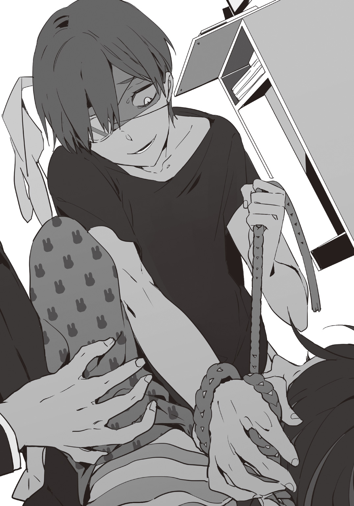
終夜は皆藤に馬乗りになって紐を握る手を緩めることなく、更に力を加えていく。息ができない皆藤はただ、死にたくない、死にたくない！ そう念じるしかなかった。こんなところでは死ねない、死ぬ訳にはいかない。殺人鬼などに殺されてはいけない。
左手で終夜の手を引き剝がそうとするも、両手と片手では力の差があり、彼の手をガリッと引っ搔くことしか出来なかった。
「いっ......た」
「ぐっ......うっ......」
そして右手を伸ばす。何か無いかと。終夜が自分の喉に夢中になっている今の内に......何か！
「っ！」
指先に触れた硬い物を、意識が飛んでしまう前に握り皆藤は思い切り「ガツッ！」と終夜の頭に打ちつけた。
「うっ！」
「ッハァ、ハァ......」
皆藤が終夜を殴りつけたソレは分厚いグラス。流石に割れはしなかったものの、少々ヒビが入ったようで、ゴトンと床に落ちたグラスはしばらくゴロゴロと転がっていた。
殴られた頭を押さえた終夜の手が離れたその隙に、皆藤はおぼつかない足取りですぐさま廊下に飛びだす。よろめきながら、ゲホッゲホッと咳きこみながらも、とにかく今はこの部屋にいてはいけない、と自分の部屋へと走った。
（早く、......部屋へ逃げこめばっ......！）
バタンッ、ガチャンッ！ と扉を閉めて、ズルズルとその場に座りこむと、やっと大きく息を吐いて落ち着いた。
「ハア......た、助かっ......」
何とか助かった。そう頭を抱え、喉を押さえていると、手に血が付いているのに気づく。しかし、それは終夜を引っ搔いた左手だけでなく、グラスを打ちつけた右手にも微量に付着していた。
「......血」
赤い血に、またある光景がフラッシュバックされてゾワゾワと鳥肌が立った。
ああでもしなければ自分が殺されていた。いやしかし、ここまでやらなくてもどうにか逃げられたんじゃないか？ とも考えてしまう。
「......だから、だから嫌なんだよ......！ 何で、こんな......！」
細く喉から絞り出す声。彼が度々思い出してしまう光景と言うのは、網膜に焼きついた家族の殺害現場なのだ。赤い色や殺人に関するワードを聞いたり見たりすると、体が反射的に全てを掘り返してくる。これはもう自分で止められるものではない。
彼がこの屋敷に望んでいたのは平和で円満な暮らしだった。そのはずだったのに、いくら自分がそれを強く望んだところでもう誰も叶えてはくれないと、そんな現実が目の前に立ち塞がっていた。
夜になって、自室に籠もって学校の課題と意味も無く向き合っていた皆藤は、ドアのノック音によって我に返った。
「あ、はい」
「俺だ」
「奈倉さん？」
（また......何かな）
時間は十八時を過ぎていた。そういえば、と皆藤が察したところ、奈倉の用はその察し通り。朝と同じく、食事に誘ってくれたのだ。
また食堂へ向かう途中、どうしてここまで......？ と再び疑問に思い、今後こそ聞いてみようと決意する。
「あの、奈倉さん」
「ん？」
「何でこうやって......誘ってくれるんですか？ いや、俺としては凄く有り難いんですけど......その......」
「......そうだな。......まぁ、塞ぎこむよりは、気分転換になるだろ？」
こちらに振り返らず彼はそう答えた。それを聞いて、皆藤はあぁ、と勝手に納得した。
やはり理由はわからないが、奈倉は絶対に自分を守ってくれるのだ。どんな理由かは気になるがこうして親切にしてもらっている以上、不用意に踏み入るのは野暮......と、自分の中で結論を出して、そこで落ち着いた。
食堂に着くと今日は先客はおらず、注文をしようとしたところ。
「あれ？ フィデルさん？」
フィデルが執事業に戻っていたのだ。皆藤は首を傾げるが、奈倉は別の意味で驚いた。
（仕事に戻った、......ってことは、目処がついたのか？）
「フィデルさん今朝はどうしてたんですか？」
「今朝は少し野暮用が入りまして、急遽代理を寄こして貰いました」
何食わぬ顔で執事業をするフィデルはいつも通り、粛々と業務をこなしている。一見すると何ら普段と変わりはなく、朝の不在も些細な用事だったのだろう......そう思えた。
が、いやと考え直す。
（いやいやいや。確かフィデルさんって、紹介の時に......）
そうなのだ。自分以外が殺人鬼であるとオーナーから開示されたあの時、殺した人数が多い順に名前を挙げられた。初めは辻丸、そして次はフィデル......。
フィデルの普段通りの......共同生活が始まった頃と全く同じ、動揺も警戒も何も感じさせない、彼の態度に騙されそうになった自分に目を覚ませと言い聞かせた。
「あ、あの......フィデルさん。いつも通りですけど......やっぱり何かあるん、ですよね？」
「......だろうな」
「今朝いなかったのも関係とか......しちゃうんですかね」
周りに聞こえない様にと皆藤は声を潜めてそう話しかけるが、アレ？ と奈倉の顔を見上げた。奈倉は相槌を打ったものの、厨房の方を向いたままだ。
「あの、奈倉さん......？ どうかしました？」
「え、あ......いや」
どうかしましたか、という言葉に奈倉は反応してすぐにこちらへ向いた。皆藤は考え事でもしてたのかな......と、それ以上彼に声を掛けることはやめてしまう。
だが、奈倉は内心しまったと後悔した。
（余計なことは言わねー方がいいと思ったが......）
フィデルがもう動くつもりでいる。ということを、皆藤に伝えるか......まだ決めあぐねていたのだ。
今朝姿を見せなかったのには理由があるんだろう、と。そこまで考えているのなら皆藤も察しがついているはずだ。......が、それでもまだ彼は知らないことがある。フィデルという男について。
「皆藤、......いや、今はやっぱりいいな。飯食い終わったら話がある」
「？ ......はい」
皆藤は首を傾げたが、そのタイミングでちょうど食事が運ばれてきてしまった為、詳しく聞き返すことが出来なかった。
奈倉はというと、やはりためらってしまったのだ。今ここで話して、そうしたら皆藤は今以上の不安に駆られるかもしれない、と。
（それに、アイツは入鹿を殺った奴を狙ってるんだ。皆藤とは無縁な警戒だしな......）
一般人である皆藤を巻きこむことに抵抗を感じるが、この状況では知っておかなければならないことがある。しかし、それは今でなくていい。フィデルの、執事以外の顔のことなど。
そして食事を終え、さっさと部屋に引き上げようと椅子を引いた時だった。食後の珈琲を置かれて動きを止める。皆藤だった。
「......頼んでねーだろ？」
「フィデルさんからのサービスです」
「......？」
「砂糖入れますか？」
「あ、いや。何も入れない」
逆に気味が悪いな。と、フィデルの背を見ながら奈倉は不審に思ったが、皆藤からカップを渡されて疑うのはその程度で終わってしまった。
それから食後の珈琲もそこそこに終えたところで、やっと彼らは奈倉の部屋に向かう。
「散らかってて悪いな、少し話しておくことがあって......」
「いえ、散らかってる......っていうか、」
物が無い、というべきか？ いや、少ないのは確かだ。奈倉の部屋の内装は初めにこの屋敷を訪れた時のまま、家具の入れ替えは一切無く、ホテルにそのまま身ひとつで泊まっているかのような状態だ。椅子に上着が掛けてあったり、ペットボトルが二つ置きっぱなしとか、その程度。
（本当に何も......。あ、そうか。住む所を転々としていたんだから、あんまり無いのも当たり前か......）
「で、話なんだが」
「あっ、はい」
椅子を渡され腰掛けると、奈倉もまた向かいの椅子に座った。
「フィデルについてだ」
「はい」
「アイツ、本職はマフィアだ」
「マフィア!? って、え？ 本職って!?」
「初めにアイツが言ったこと覚えてるか？ 〝短い間ですが、昔執事業をしていたことが〟って奴」
「あー、そういえばそんなこと......ん？ 短い間、って......」
そこまで自分で言って皆藤はサーッと青ざめた。
「だからやり手だって話だ。気をつけろ」
「で、でもだったらどうやって逃げれば......？」
「とりあえず今日は俺の部屋に泊まっていけ。アイツは今晩動くだろうからな」
「動く......って！ 誰か殺すってことじゃ......」
「入鹿の復讐だ」
その一言に皆藤は静止した。あのフィデルが？ と。
「今日の昼間、アイツは白を切ってたが......間違いない」
「あ、あのフィデルさんが？ ......俺にはあんまりピンと......」
入鹿からフィデルに向けた親しみ具合は、皆藤も見ていて何となく察していた。しかし、対照的にフィデルからは喜怒哀楽を読み取ることすらかなり難しい。皆藤でさえそうだというのに、何故奈倉にはそれがわかったのか？
「あの目は間違いないさ。......復讐を決めた目だ」
「？」
「殺人鬼のくせに......まだああやって動く奴もいるんだな......」
意味深にそう呟く奈倉だったが、詳しいことまでは語らなかった。とにかく皆藤に告げられたのは、今日一晩だけでもこちらにいれば、殺し合いに巻きこまれることだけは防げる、ということだった。
皆藤は自室から布団等を持って来て、ベッドへ。奈倉はソファベッドでその晩を過ごすことにした。誰かとこうして同室で眠ることは久しぶりな為、内心喜んでいたのだが......それは口に出さないでおいた。
だが、そんな吞気な彼等を〝カレ〟は待ってはくれなかった。
「あ......あっ、殺し......ソコねた......」
ギュウウウ......ッと固く握られた手。爪が手の平へ食いこんでポタポタと血が垂れる。
「......あぁ、今度こそ......コンドこそ............」
暗闇の中、動きだす殺人鬼を、皆藤たちはまだ知らなかった。
それから、パンッ！ という発砲音が響いたのは午前二時頃。
「......あ？」
突如屋敷に響いた発砲音を辻丸は自室で漫画を読みながら耳にした。ひとまず漫画を机に置いて、そして刀を背中へ回してパーカーを着、フードを被る。覗き穴の無いドアを不便だな......と思いつつ少し開き、廊下の様子を窺った。
人影はひとつも見られない。
「..................」
恐らく、拳銃だという考えで、フィデルに最大の警戒を置いて屋敷内を散策することにした。時計の針の音も聞こえない程の静寂に自分の足音だけがコツコツコツと反響する。しかし、辻丸の目に怯えや恐れという類いの色があるわけがない。
冷静且つ、鋭い眼つき。
まずは玄関ホール。ガラ空きだ。それから一通り個室前を通り過ぎて、小さな書斎もキーを使って開けてみたが人の気配は無い。吹き抜けのある屋敷の為、二階で発砲があってもあれくらいの音が聞こえただろうが、一番可能性が高いのは一階と踏んでいた。とすると、残るは談話室。
談話室に向かおうとしたその時、扉が開いているのが目に入った。
（......さーあ、誰がいる？）
誰かとフィデルが抗争しているのか、はたまた既に決着がついているか。冷静に、そしてワクワクしながら談話室を覗いた。......が、彼の期待は外れてしまった。
「んだよ、皆藤と腰抜けかよ......」
「つっ、辻丸！」
談話室のソファに向かって皆藤と奈倉は立っていた。いや、皆藤に関しては立っているというよりソファに向いてはいるが壁にしがみついているようだ。
「なーに見てんだよ......つかさっきの発砲音は......」
しかし、ソファを見て辻丸は声を上げた。
「はあ!? 自殺!?」
ぐったりと背もたれにもたれ掛かるフィデルの左こめかみには穴が開いており、そこからツゥーッと血が垂れている。フィデルは左利き、手に持つ拳銃も六弾装填の内五弾しか残っていない。
「つーかお前ら二人揃って何で先にいんだよ？ あれか？ まさかお前らが共犯で......」
「ふっ、ふざけんなよ！ そんなわけっ」
「何てジョーダンに決まってんだろ～？ お前にそんな度胸ねーもんなぁ？」
声を荒らげる皆藤に耳を塞ぐ辻丸だが、怒らせたのは彼自身だ。
「抗争になった痕跡も無い。服装も特におかしな所は無いし、外傷も無い......。だとしても......」
状況説明をしたのは奈倉だが、彼が一番フィデルの動機を知っていたのだ。一番納得がいかないのは自分自身、しかし事実に変わりは無い。
「ん？ アレ何だよ」
「？ ......あ、あれは、俺等がここに入る時に」
辻丸が指摘したのは談話室出入り口の床に散乱しているガラスの破片。そこから目線を上げてみると、出入り口の両脇に設置されていたランプの片方が割れていることに気づいた。
発砲音がして一番に目を覚ましたのは皆藤だった。それから奈倉を起こして音のことを伝えると、二人揃って様子を見に部屋から出た。辻丸と同じように順々に一階を回り、最後に談話室に着いたのだが......。
「あそこの扉を開けようとした時、妙に重かったから奈倉さんが開けたんだ。そしたら、ノブからワイヤーが伸びててまた......」
そう、また。入鹿が死んでいた娯楽室の扉を開けた時と同じように、第一発見者に対してのトラップが仕掛けられていたのだ。
「成る程な。第一発見者共々、効率よく始末しようってことか。あったまいー」
「冗談言うなよ。......にしても、一体誰が......」
銃殺の殺人鬼が銃殺された。こんなナゾナゾ、誰に解けるのだろうか？
死体を確認した辻丸はもう満足したように自室へ戻ってしまい、談話室には奈倉と皆藤が残ったが、間もなくして例の掃除屋達がまたゾロゾロと現れた。こんなに夜遅くまでご苦労なことだ。フィデルの遺体を棺に詰めて運び出し、またあの黒スーツの男がわざわざこちらまで歩み寄って来る。
「この度お亡くなりになられた方、フィデル様は『銃殺の殺人鬼』。殺害方法は銃殺でしたので、成功報酬は同じく、皆藤様へ支払われます」
この賞金制度がまた混乱させる。
彼等の言う〝殺人流儀〟というのは恐らく殺人鬼名になるのだろう。それを唯一持っていないのは皆藤だ。つまり、自分の殺し方で殺されれば誰が真犯人であろうと皆藤へ支払われる。ということなのか？
「おかしいな、それなら賞金目当てじゃないってことになる」
「......じゃあ、何ですか？ コレ、一体誰が......」
賞金を必要とせず皆藤へと押しつけて、姿をひた隠しながら殺人を被害者の殺り方で次々行っていく......オーナーからの紹介が無い異質の殺人鬼。
ソイツの見当は、まるでつかなかった。
赤い目をした少女
銃殺の殺人鬼 ★ フィデル
見上げると、どんよりとした雲が空に立ちこめていた。日頃からこの地域では、雲が途切れて日差しが差しこむことすらあまりないのだが、それにしてもいつにも増して濃い灰色をしている。
そしてそんな空に向かってフーッと細く煙草の煙を吐いた。
「......ん？」
紫煙は冷たい風にかき消されてしまったが、空をただ呆然と眺めているとクイッと下から上着を引っ張られた気がし、視線を落としてみる。
「............」
するとそこには、小さな少女が上着の裾を握り、こちらを真っ直ぐ見つめていた。その目は真っ赤だった。
「で、何で連れてきたの？ お前馬鹿なの？」
「仕方無いだろ、ついてきたんだから」
「てちょちょちょっ、ごめんなさい！ 馬鹿って言ってごめんなさい！ 銃下ろして！」
「でもフィデルさんになつく女の子なんて珍しいですね」
「つーかお前何なの!? 何で俺等にはそんな辛辣なんだよ！ あの〝執事キャラ〟はどこ行った!?」
「業務時間外だ」
港近くの小さな酒場。酒場と言っても店主や店員はおらず、何年か前に捨てられていった空き家だ。その薄暗く、湿った酒場にはスーツを着こんだ男達が二十人程いて、各々話をしたり酒を飲んだりしている。フィデルと呼ばれた初老の男は隣の席の男に向けていた銃をしまい、少しばかりため息をもらした。因みに〝執事キャラ〟というのは、このフィデルが表向きに執事の仕事をしていることが多いことからよく言われるのである。
「んーで？ どーすんだよ、この子」
「............」
「あのー、もしもーし」
「......いや、俺も親の下へ返すべきだとは思ったんだが......喋らなくてな」
「はい？」
「その娘、口をきかないんだ」
「......またまたぁ、お前じゃあるまいし」
ハハハとフィデルの言葉を笑う男はティト。グレーの髪をしたフィデルの隣にいるためかもしれないが、茶髪の彼は実年齢よりも若く見える。しかし、ティトがフィデルの話を真に受けず笑った為、それ以降「話しても無駄だ」と言わんばかりにフィデルは口を閉ざしてしまった。
「もー、ティトさんまたフィデルさん黙りにさせて......」
「う、うるせーよ！ だって口利かねーなんて可笑しいだろ？ その子口はついてんだしよ！」
「うんー、まぁ確かに不思議な子だとは思いますが......」
「んだよー、シリルまで......」
「はい。紅茶......お砂糖も入れたから、飲めるかな？」
敬語調で話すシリルという男は他二人よりも若く、薄い金色の髪を緩く後ろで束ねている、童顔の好青年。彼は持ってきたトレーからカチャリと一杯分の紅茶を少女へ出した。
だが、赤い目の少女はその出されたカップをジロジロと見つめるばかりで、手をつけようとはしない。
「えっとー、......変なものは入れてないよ？」
「そうだぞー？ おじさん達は確かに悪い仕事してっけど、食いもんはいいもん食ってるからな～？」
「............」
テーブルを挟んでティト、シリルは少女と同じ目線でそう声をかけるも少女はまだカップをジロジロと見ている。
「............」
「......変なものは入れてないぞ」
「！」
珈琲を啜りながらぼそりとフィデルが呟くと、少女は一瞬彼へ視線を向けてからカップを手に取り同じように啜りだした。
「......ちっ」
「フィデルさんの言うことは信じるのかな......えーっと、キミ何処から来たの？ この近所の子？」
「............」
「お母さんとか......お家は？ 帰らなくて心配しないかな......？」
「............」
「ん～......」
「ほれきたフィデル、また一声」
「だから、口をきかないと言っただろ。その類いの質問はさっきした」
えー......と落胆の声を揃って上げる二人だが、喋らない少女はカップを持ったままフィデルの向かいまで移動してまた彼へ一瞥してから、近くの窓から外を眺めだした。それからはずっと、大人しくズズーッと音を立てつつ微動だにしない。
「......どゆこと？」
「彼女どこで見つけたんですか？」
「今日の仕事場の前で一服してたら突然......服を引っ張られた」
「え、今日の仕事場って......アレですか？」
「あぁ、アレだ」
平然と眉ひとつ動かすことなく淡々と答えるフィデルだが、シリルはそれを聞いてうわーと少し青ざめる。
「いや、どこで見つけたかよりどうするかだろ！ どーすんだよ!?」
「......次の移動までには何とか片づけるつもりだ」
「次の移動って......三日後？ 大丈夫なのかよ、俺達知らねーからな」
「あぁ」
「......くーっ、渋く決めやがっていけすかねー！」
「ティトさんはもう少し落ち着いたら、かっこよく見えると思いますよ......」
「あ？ それはどゆことだ？ ああん？」
それからやんややんやと騒ぎだす二人を周りの仲間達は笑いながら眺めてるばかりで、店の中の騒がしさはより一層大きくなった。しかし、それでもフィデルはそ知らぬ顔をしているのだが、これはいつものことだ。冷めているとよくティトから注意されるも、元々こういう性格なのだから仕方がないの一点張り。
だが向かいに座る少女の様子を見てみると、その年齢に似つかわしくない程の落ち着きようながら、ただじっと、どこまでも広がり今にも雨が降ってきそうな暗い曇天を見ているばかりだった。
「............」
「............」
コツコツコツと音を立ててタイルの上を歩く黒い革靴の後ろには、カツカツカツと音を立ててついてくる赤い革の靴。フィデルは胸元から煙草の箱を取り出したものの、自分の後ろの存在を思い出して静かにそれを元に戻した。
口を閉ざした少女を発見した翌日である。明後日には仕事の関係で船を使い、離れた国へと移動しなければならないため、少女の帰る場所を探すタイムリミットが設けられているが、今こうして歩いていても実は何の計画もないのが現状だった。
仕事上いつまでも少女を連れている訳にもいかず、強行手段として少女自身を〝売り払う〟ことも出来たが、一般人にそこまでする必要はないと答えは決まっていた。
「......まだ黙りか」
「......」
「俺より口が固いんじゃないか？」
無口な男として知られているフィデルでさえ、その少女は見ていて不思議だった。加えて表情に乏しい面もあり、昨晩もまたあの酒場で共に食事をとったのだがただ黙々と食事をするだけで、まるで人形の様な子供だと思った。
ただし......、
「！」
「あ」
ベシャッ、と転ぶその瞬間はビックリして目を丸くする。
「怪我はしてないか？」
「......」
「......そうか」
無言で頷くと軽く自分で服をはたいて、フィデルが歩きだしてから少女もまた歩を進めた。少女は珍しく赤い目をしているが、変わった所はその程度であとは緩くウェーブのかかった金髪と、ちゃんとした服を着ている。道中すれ違う人間がいても、どちらかというとフィデルの出で立ちに目をやるものばかりだ。
（だが、いつまでも喋らないんじゃコッチが困るな......何とかして情報を......）
「ん？」
顎に手を添えながらそんなことを考えていると、いつの間にか後ろからの足音が消えたのに気づいた。振り返ってみると、ある小さなお菓子屋の前で少女は足を止め、ガラスの向こうを食い入るように見つめている。
「......どれが欲しいんだ」
「!?」
「これくらい買ってやる」
会計を済ませると少女はその小さな手に赤い棒つきキャンディを持ち、また先程と同じようにフィデルの後をついてくる。
これじゃあまるでただの子守じゃないか、とフィデルは心の中でぼやくものの、少女はそんなことはお構いなしというような顔をしていた。
そしてその日はまた夜を迎えてしまい、次の日も朝日を迎えたが歩き回る内に月を迎え、とうとう移動日になってしまった。
荷物と共に一斉に移動するため時間は夜になるが、それまでにこの少女を何とかしなければお前の養子にして責任者になれ、と上司に真顔で言われてしまった。つい先日会ったばかりの子供を養子にするなどとんでもないし、何より彼だけは仲間達とは少し立場が違うのだ。それに他人を巻きこむのも面倒なこと......。
「......まだ喋らないか」
「............」
「まぁ、実は親がいない。っていうオチでも困るんだが......お前は一体どうしたいんだ」
水平線へと沈んでいく赤い夕陽に目を細めながら、誰もいない港にフィデルと少女は突っ立っていた。あと数時間もすれば出発の時間となる。彼等のすぐ後ろには先日の仕事場があり、今彼等が立っている場所こそ、二人が出逢ってしまった場所だ。
フィデルはもう既に諦めがついており、彼女の責任者になろうが何とかなるだろうと思っているのだが、それは彼自身の問題で少女にしてみればフィデルという男の近くに居続ける、というのはあまりよろしくないことなのだ。
それを言うか言うまいか、中々開けぬ口にもどかしさを感じていると、ふと、
「私は」
というか細い声が耳に入った。
驚いて視線を落としてみると、あの日のように少女はこちらを真っ直ぐ見つめている。
「私は、名前は無い。けど、お父さんとお母さんはいた。......もういないけど」
「............」
「友達はいない。この目を持ってるし......それに、お父さんとお母さんは人殺しだから」
「............」
「三日前、そこで死んじゃったけど」
「......？」
少女の指差す先を見てみれば、そこは先日の仕事場だ。そこでフィデルはあることに気づいた。
「成る程......いや、気づかなかった。お前、あの家にいたのか」
尋ねれば少女は正直に頷いた。無表情のままだが。
先日、その民家で行ったフィデルの仕事というのは、組織の上からの指示で〝その家にいる殺人鬼を消す〟ことだった。恐らく身内の誰かが殺られでもしたのだろう。
フィデルはその仕事を淡々とこなし、死体処理も済ませ、その後にここで一服していた......という流れになるのだが、この口振りだと少女はあの時家の中で見ていたのかもしれない。
自分の両親が殺される光景を。
「......怨んでるか？」
「どうして？」
「親を殺したんだからな」
「......別に。それに、おじさんは買ってくれたし......キャンディ」
「？」
「生まれて初めて食べた。キャンディ」
笑ってはいないし、表情筋さえピクリとも動かしていない様だったが......笑っているような気がした。一体今まで親からどういう扱いを受けていたのか。一から十まで聞かずとも把握できる一言だ。
「そうか」
「......おじさんは、私を殺す？ お父さんとお母さんみたいに」
「いや？ お前の両親は仕事で殺すことになってたからな」
「......そうなんだ」
夕陽ももう少しで沈みきる。結果としては少女の両親は見つからず、というかこの世にはもう存在していない訳で、残るは少女の選択だけとなってしまった。フィデルについていくか、ここに残るか。
「どうする、ついてくるか？ それともあの家に残るか？」
「......うーん、......家に帰る」
「............」
「お父さんとお母さん、床下に沢山お金埋めてたし、元々私、いつも家で一人だったし」
「......そうか」
「うん。だから、バイバイ」
小さな手を小さく振って、少女は笑わなかった。フィデルはそんな少女をただ見下ろすだけだったが、結局手は振らない。今度は彼がじっと少女を見つめ返した。
「じゃあね」
少女はそうまた言うと、踵を返し、後方にあった自分の家へと歩みだした。
瞬間、
パンッ
と乾いた音が響いた。
その音はあっさり消えてしまい、反響することもなく、少女の耳に残ることもなく、彼女の胸をただ貫いた。空へ立ち上る煙は、黒い銃口から。
「......？」
いつの間にか地面に寝ていた少女。だが体を動かそうにも、手を動かそうにも、指先を動かそうにも......動かさなかった表情筋の様にピクリともしない。
「お、じ......」
「あぁ、勘違いするな。お前があの両親の子供だからだとか、親の下へ送ってやったとか......別にそういうんじゃない」
「......？」
「お前はどのみち、どんな生い立ちだろうがどんな選択をしようがこうなることは決まっていたんだ」
フッと息を吹けば煙は途切れ、その拳銃は胸元へとしまわれた。フィデルはそれから少女の横まで歩みより、屈むこともなく、少女を見下ろすだけ。
「上からの指示でもない。俺の意思で引き金を引いた、あまり考えるな」
「......どう、して......」
ドクドクと地面にたまっていく液体は、少女の目と同じ色をしている。
「どうして......そうだな。俺が人を殺すのには特に理由は無いんだが......あえて言うなら......」
「？」
「さっき、いつも通り、」
家に帰ろうとしただろ？
それが彼の犯行動機、殺人動機、趣味嗜好。
「これから殺される、とも思わなかっただろ？ 日常の中で、突然死ねる。......良いと思わないか？」
普段は閉ざされているその口はよく動き、舌が回り、口角がわずかに上がる。しかし、その言葉は少女に届いていたかはわからないし、もうその赤い瞳も動くことはないし、もうそこには小さな女の子が置いてあるだけで、辺りには人っ子一人としていなかった。
赤みがかった空はすっかり黒くなり、雲の晴れない空に、月など見えはしない。
「んでさ、フィデル。あの子どうした？」
「......ん？」
「だから、あの赤い目の女の子。ちゃんと親見つかったのか？」
「......さあな」
「はあ？」
何で笑ってんだよ、というティトの問いに。
寡黙な男が答えるはずもなかった。
入鹿が何者かに殺された。そしてそれを機にこの屋敷の真の目的が明かされた。そして入鹿の復讐（？）に動いたフィデルも殺された。
すっかりこの屋敷はオーナー達の望んでいたシナリオを辿ってしまっているが、皆藤は受け入れられずにいる。いや、受け入れてしまってはダメなのだ、と自分に言い聞かせた。
「でもやっぱり、おかしいですよ......残ってるのは俺と奈倉さん、辻丸、四月一日さん、......それから終夜。どうしてわざわざ、誰が殺ったかわからないように......？」
「初めにオーナーは〝殺し方で犯人を判断する〟って言ってたな。もしかしたらそれを逆手に取ったのかも......」
「逆手？」
「殺し方を、殺す本人のものにして報酬を皆藤に入れさせる。そうすれば、自分は他の者に警戒されずに済む......とかな」
「あーさーかーらーグーローイ」
声を挟んだのは四月一日。奈倉と皆藤の向かい側に座る彼女は、今日も今日とて朝から大変な食いっぷりを見せつけてくる。というか、その十人前もあるオムライスを本当に一人で食べる気なのだろうか。
「てーか皆藤君もそーゆーハナシ食事中に出来ちゃうの～？ ちょっと幻滅～」
「えっ、あ、いや。スミマセン」
朝食をとりながら殺人の話をしてしまったが、皆藤もいまやこういうことには抵抗が無いし、四月一日に関しては何を今更状態だ。
「おーおーよくもまぁ飽きずに集まんなぁ......お前ら」
「あ、辻丸」
「げっ、おかっぱ」
珍しく食堂に現れた辻丸。いなくなってしまったフィデルの代わりに給仕に入った女性に注文は？ と聞かれるも、素通りして彼は皆藤のもとまで歩いて来た。
「何だよ。プリント提出なら今日は無いだろ？」
「その話じゃねーよ」
「じゃあ何だよ？」
尋ねると、辻丸は一度言葉を選ぶふうに考えて、それからポロッと口にした。
「皆藤、まさかお前じゃないよなぁ？ 今回の一連のコロシ」
「なっ......」
唐突なその問いに、一瞬頭が真っ白になる。
「テメェ辻丸っ......！」
「あー待てって」
突然の言い掛かりにガタンッと立ち上がる奈倉だったがそれをどうどうと宥めると、辻丸はため息混じりにつまらなそうな顔をした。
「だってよぉ、殺しが起こる度に変な死に方するわ、報酬はお前に入るわで......前にも言った通り。どう考えてもお前がやってるか、犯人がお前を嵌めてるか、だろ？」
「まっ、冷静に考えればそーよね」
「テメェにゃ聞いてねーよ、タヌキ」
「何よ。あたしも会話に入れてくれたっていいじゃない、おかっぱ」
ジリジリとこんな事態になっても相変わらずな二人だったが、皆藤は自分が疑われたことにショックを受けていた。まさか、こんな所で犯人扱いされるなんて。
「ま、だから気をつけろよ」
ポン、と皆藤の肩に手を置いて、そのまま出入り口へと向かう。
「......どういうことだよ？」
皆藤は腰を浮かせて言葉のことを尋ねたが、辻丸は意地悪く笑って、それからある方向へと目配せした。
「お前の悪い癖はすぐ信じることだ。少しは人を疑うことも覚えろよ？」
でないとまんまと嵌められるぞ？
ヒラヒラと手を振って、辻丸はそれだけ言い残して去って行ってしまう。
（人を疑う......？ それって、真犯人が誰か考えろってことか......？）
辻丸の言葉に無意味に混乱させられているのでは？ と初めは思ったが、一理あるようにも感じられる。だとすると誰を疑えばいいんだ？ 誰が自分を嵌めようと......？ 皆藤は中腰のまま固まってしまった。
だが彼がその場で固まっても、何もかも彼の為に待ってくれる訳が無い。
「ごちそうさまー♪」
困惑する皆藤を余所に、四月一日は食事を終えてご機嫌で厨房に呼び掛けた。その声に皆藤は引き戻される。
「皆藤君も大変ね～、あんな馬鹿とつるんでるなんて」
「え？」
「変に振り回されそうってコト。犯人探しなんて一番似合わなそうな奴じゃない？」
それは確かにそうだが、と納得してしまったが。どちらにしても犯人を見つけない限り、自分の身を自分で守れないのだ。
犯人探しなどに興味の無い四月一日はまた同じくして食堂を立ち去ってしまい、奈倉と皆藤はそこに残されてしまう。
そしてふと思い出したように奈倉が「そういえば......」と口を開いた。
「昨日、手に血がついてなかったか？ 怪我でもしたのか？」
「血......？ あっ」
昨日、終夜に襲われた時についてしまった血だろう。よくそんな所まで......と皆藤は感心しながら、ことの一部始終を話していくと、途中でガタンと奈倉がまた立ち上がる。
「大丈夫だったのか!? ってか、その血って本当に終夜のだけか!?」
「俺が引っ搔いちゃった時のですよ。俺はただ、首絞められてただけだし......」
思い出しただけで喉に違和感を覚え、うーんと皆藤は首に手を当てたが、何故か奈倉は大げさにドサリと椅子に腰を落とす。
「そうか......そんなことがあったのか......」
「？」
襲われたことは事実だが、何とか逃げきれて、今もこうして外傷も無く無事でいる。なのに心配し過ぎでは？ と皆藤は首を傾げた。やはり、彼には何か事情があるのだろうか。
皆藤は食堂から出ると、奈倉のことを何とか調べることは出来ないだろうかと思いたった。奈倉本人はまだ食堂にいる。書斎に確かパソコンがあったはずだし、探ろうと思えばオーナーに何とか交渉して出来なくもないかも......。そう行動に移そうとした時だ。
また、あのドアが少し開いているのが目に留まった。あれはもしかしたら誘惑の象徴なのかもしれない。光に群がる虫を捕まえる為の。
「............」
今度こそは行くもんか、と。自分に言い聞かせ、そのドアの前をスルーしようとした時。
「あれ？ 何でそこ開いてんの？ 不用心過ぎなーい？」
昨日の自分とまったく同じそれを口にしたのは四月一日だった。これからどこかに出掛けるのか、手には小さなバッグを持っている。
「四月一日さん......」
「え？ これスルーするの？ 皆藤君なら気になるんじゃない？」
「いや、その......このドアだけはちょっと昨日......」
「はは～ん......まさか襲われた、とか？」
ビクッと肩を揺らすと、図星。と言われた。わかりやすいにも程があるな、と自嘲する。
「でもこの状態じゃ、〝どうぞ中に入ってください〟もしくは〝どうぞ殺してください〟ってところよね。あの引きこもりっ子、何考えてんのかしら」
「............」
昨日のあの一悶着を思い出したくない皆藤は早くこの話題を打ち切りたかったが、それを察したかはわからないが四月一日はイイコトを思いついたようにニッと笑うと、皆藤の手首をガッシリとつかむ。
「!?」
「だーいじょうぶ、あたしがいるし。......ちょっと見てみよっか？」
「えっ、いやいや！ ちょっとって......お化け屋敷じゃないんですから！」
「いいじゃん、あたし的にはあの子狙ってるんだし～」
そう言えばそうだった。終夜の肉がおいしそうだとか言っていたのを思い出し、尚更皆藤はいやいやいやと後ずさりする。しかしあの四月一日が皆藤の言い分を聞くはずもなく、負けじと彼をズルズルと引っ張った。
辻丸といい四月一日といい、どうしてここまで我が儘で巻きこみ好きなのだろうか。
「で、でも四月一日さん！ いざ終夜がかかってきたら？」
「あたしコレでも刺殺専門よ？ 向こうよりは殺傷力的に上でしょ」
「そういう問題じゃ......！」
しかし茶番はここまで、皆藤の懸念したことは所詮、彼の頭の中での想定にすぎなかった。
ドアを開けてみると、相変わらず薄暗い部屋を青白い光が照らしていたが、いつもは真っ先に目に入る終夜の背がなかった。というか、椅子の背凭れさえ見当たらない。一体どこへ......？ と部屋をキョロキョロと見回すと、椅子は自立しておらず、床に倒れていた。
そのすぐ隣。初めは寝ているのではないかと思ったが、現状、ただ寝ていただけならギャグにしかならない。
死体は既に出来上がっていた。電気コードで首を締めつけられた終夜の死体が。
無くした右目
絞殺の殺人鬼 ★ 終夜夜明
「『うさ耳』さんが、ログインしました」
「あっ......っ............がっ......」
「よいしょっ」
「っあ......。......」
「『メカ』さんが、ログアウトしました」
ズルッ......、と脱力しきった体を地面へ落とし、それを見てニヤニヤと笑った。
とある河川敷。とある晩。三日ぶりに行われた余興は幕を下ろす。
誰もが「ゲーム」という娯楽に勤しむだろう。それはテレビゲームであったりボードゲームであったり、スポーツという類いのゲームである。そして、今日若者達が虜になっているのはオンラインゲームというゲームだ。
ハンドルネームを用いて画面の向こうの誰かと協力して、クエストをクリアする。画面の向こうは誰でも構わない。名前がわからなければ顔までわからない。美人だろうがイケメンだろうが不細工だろうが見るに堪えない姿であろうが関係ない。そして、性格面の美醜に関しても興味はない。
更に、そのオンラインゲームの中には冒険ＲＰＧやクイズ形式の物があるだろうが、戦争・殺戮系にどっぷりハマるマニアも少なくないだろう。現実ではタブーとされるヒトゴロシを思う存分に楽しむことが出来る、猟奇的快楽に酔いしれる......そしてゲームオーバーと共に現実へ引き戻されるのだ。しかし、それを二次元のみで満足出来ない者もいないとは言い切れない。
月だけを照明に、そこに転がる死体を見て楽しそうにしている終夜夜明という少年がそうだ。
「さて......流石にコイツは重そうだし、川に引っ張るのもメンドクサイな......」
首に絞められた痕を残した死体を見下ろして、白目を剝いたままのその男の顔をグニュリと踏みにじる。終夜は持っていた太さ二センチ程のロープをポケットにしまうと、ホッチキスでうさ耳らしきパーツがつけられたお手製うさ耳フードを被り、その場を立ち去った。
『今朝通報された変死体の情報は現在捜査中。情報が入り次第、お伝え致します』
「あーあー、なーんで川に捨てなかったんだよ。足取りわかっちゃうでしょーが」
「重そうだったから」
「あのねー......」
ニュースキャスターが報道する殺人事件を聞いて、終夜は話題をそらすためにピッとチャンネルを変えた。別チャンネルでは料理番組をしている。今日は和風豆腐ハンバーグを作るらしい。
「あのさぁ......別に殺ることに関して口出しはしねーけど、居候させてやってるんだから俺にも配慮ってもんを......」
「わかったって、......次からはちゃんと始末しとくから」
「ホントにわかってんのかあ？」
ハァ......とため息混じりにベッドへ寝転がったのは終夜が押し掛けて、無理矢理居座っているこの部屋の本来の持ち主、朝川。そばかす顔に丸眼鏡をしていて、むち打ちの為、首にカラーをしている。終夜と朝川は級友ではなく、彼らが今もしているオンラインゲームで繫がった仲だ。初期の頃から二人はオンライン上でコンビを組んでいて、オフ会で直接関わるようになってから終夜が押し掛けた。
因みに、終夜が頻繁に殺しをしていることを朝川は勿論知っているし、彼の隠れ蓑という役も承諾している。
「だけど、やっぱわかんねーや」
「何が」
「もうお前十人も殺ってんだぜ？ 捕まってねーのはまぁスゲェけど、そんなに楽しいか？」
「サバゲーのオーナーアカウントに侵入して仕掛けた罠にみんなが引っ掛かってくのを上から眺めてる気分」
「殺り方だっていっつも紐だろー？ ただの自己アピールにしかなんねーだろ」
「......いいや？」
画面にずっと向かっていた終夜はギッと椅子に深く腰掛け、ニヤリと口角を上げて振り返る。目の下の濃い隈は徹夜の頻度を物語った。
「こうやって紐で相手の首をギリギリって締め上げてさ、目の前で白目むいてヨダレ垂らして、苦しそうにもがくんだよ......」
「うわ......」
「それでしばらくすると、プッツンって糸が切れたみたいに体がだらんってなるワケ。あの瞬間、オレの手でひとつのプレイヤーを消したあの感覚がたまらなくてさぁ......」
「うわわわわわ、悪趣味！」
不気味にブツブツと語る終夜は至極幸せそうだが、朝川はやめろやめろと手と首を振る。ちょっとした思いつきで、オンライン上から適当に人を一人呼びだして、殺人ゲームを体験してみた。
すると、思いの外二次元よりもリアルのほうが楽しくなって、終夜は定期的に殺しをしているのだ。様々なオンラインゲームを使い分けて、誰にも怪しまれないようにターゲットを呼びだす。そんなことは終夜には朝飯前だった。
「あ、そういやさっきバンクにハッキングしてあんたの預金残高桁変えといたから」
「おおー！ サンキュー！ ......しっかしお前怖いな、そんな平然とした顔でよ」
「平然とハッキングを注文するあんたも相当だよ」
「殺人鬼に言われたくねーなー」
ブーブーと口を尖らせながら朝川は電話を取って宅配ピザ店へと電話を掛ける。Ｍサイズのマルゲリータを一枚と、コーラと烏龍茶をひとつずつ、それからポテトも頼んだ。
しかし、そんな食事の用意も置いておいて、終夜の両目はもう画面へと向いていた。そして解読難な文字列を打ちこんでいって警察のデータベースを無理矢理こじ開け、自分の戸籍や履歴を全てチェックする。せっかく書き換えた情報が直されてはたまったものじゃない。このチェックは日課であった。それからまた、慣れた手つきでキーボードにカタカタと打ちこんで、あっちやそっちに行ったり来たり。
全てが非合法的手段だ。全てが非合法的行動だ。
だからなんだと言うんだ？ と終夜は答えるだろう。
どうせこのご時世、どこもかしこも汚いことも偽善なことも蔓延っているだろう。それを直に体感できるのはネットそのものだ。
彼の頭の辞書にはもう〝キレイごと〟という単語は存在しない。
「ところでさ、終夜」
「ん」
「そのうさ耳意味あんの？」
「......オレ、ウサギ好きだから」
「ふーん......って噓つけぇぇえええええ！！！」
家でウサギを飼っていた。白ウサギだ。いつもケージに入れられていて、キャベツを渡すとシャリシャリと、ただ黙々と食べていた。それをいつまでも眺めていられる、少し変わった子だったと親に言われた気がする。だが、別にウサギを見ていたわけではなく、そのウサギが持つ奇妙なものを、ただ見ていただけだった。
その、くりくりとした小さな赤い目を。
「終夜ってやっぱ厨二病全開だよなあ」
「別に右腕が疼いたりしないけど」
「こないだ通販で赤のカラーコンタクト買ったのはどこのどいつよ」
「......あれは視界がおかしくなるから捨てた」
「もったいねー！」
ケラケラ笑う朝川を余所に、終夜は相変わらず画面へと向かっていた。そして「送信」のボタンを押すとフン......と一息吐く。
「あれ？ また次の殺し確定？」
「今度はもっと見つかりにくい場所でじっくりやることにした」
「うわぁ～......陰湿」
殺しが楽しみなのか、終夜は時計をチラチラと見ながらまだかまだかと子供のようにソワソワしていた。が、彼はこの時予想するはずもなかったのだ。
今回の殺しで、ゲームの進路が変わってしまうことを。
深夜、日付が変わってしばらくして。かつては幽霊アパートと呼ばれ、現在では廃墟と化した賃貸住宅の敷地内。伸び放題となった雑草は生い茂り、敷地を囲うフェンスも錆びてボロボロになっている。
「ハァ......終わっちゃった」
事切れた死体を見下ろして、終夜はつまらなそうに呟いた。時間をかけて、じっくり楽しみたかったものの、相手が抵抗して暴れた為にそれにイラついてさっさと片づけてしまったのだ。
「......帰ろ」
電池の切れた玩具には用がない。フードを被り直して、終夜はよいしょっと立ち上がって来た方向を向いた。するとその時、ガサッという音が耳に入る。
「動くな！ 警察だ！」
「......は？」
どういうことだ？ と目を丸くし、声のほうを向いてみると若い男が銃をこちらへ構えていた。誰かが警察に通報でもしたのか？ そんな素振りはこの死体にはなかったし......。
と、そう考えたが相手の警官は一人。しかも銃を構えている割には足が震えているのがわかる。
こんな夜中の巡回で、運悪く見つかってしまったのだろう。
「へー、何？ 撃つの？」
「今そこで人を殺しただろ!?」
「声聞こえてたんだ。じゃあさっさと止めにはいれば良かったのに」
「そ、それは......」
「ビビって足がすくんだ？ ......それとも......」
もしかして、オレのこと知ってるの？
尋ねるとビクッと警官は肩を震わせた。図星らしい。
「なんだ、お前みたいなヤツでも警官になれんだね」
「い、いいから！ 大人しく署まで来い！」
「うわ、警官ごっこに付き合うヒマないんだけど......」
相手に出来ない、と終夜はそのままそこから立ち去ろうと足を動かした。
「う、動くなっ!!」
パンッ！
警官の声と銃声は重なって、それよりも終夜の頭に響いたのは激痛だった。こんなヤツに撃てるはずがないと思っていた。撃つはずもないと思っていた。なのにヤツは撃った。大した危害を加えようとしてもなかったのに。バカなのか？ そうかバカなのか......。
そんな考えが一瞬で駆け巡ったが、彼の脳はそんなことを考えてる場合ではなかった。激痛と共に鼓動は途端に速くなり全身がカーッと熱くなって毛穴から汗が噴きだすのを感じた。
「あ、あ......」
撃ってしまったというアホ面の警官が目に入ったが、その視界がどうにもおかしい。先程までは前方から自分の真横さえ普通に見えていたのに、右真横が見えない。
いや、見られない。
「あああああああああああああああああああああああああああ！！！！！！！！」
激痛に声をあげて顔を覆うと掌にはベッタリと赤い液体がついた。次から次へと、ドプドプと溢れだす血を止めようにも痛みに手が痺れてガクガクと震える。傷口さえ塞げない。終夜は右目からダラダラと出血していた。弾丸がかすめたのだ。
「う、撃つつもりじゃ......そんなっ......」
引き金に指が添えられていたのだろう。終夜が動いた拍子にビックリして引いてしまったに違いない。何て馬鹿なことなんだろう。通りすがりの若い警官のドジに巻きこまれて、現場を見られるわ右目を撃たれるわ......。撃たれた怒りよりも、頭をギリギリと締めつける激痛よりも、この現状に呆れてしまった。
「......あ......は............」
そして、口角がひくつく。
「アハハハハハハハハハハハハハハハハハハハハハ！！！」
「っ!?」
突然笑いだした終夜に警官は身震いした。コイツはヤバい。そう思うも遅く、顔半分を真っ赤に染めた終夜の顔がもう、目の前にある。
「アンタもコロソウ」
ポケットに入っている太いロープを取りだして、一気に目の前の首を締めあげた。
「かっ......！」
「馬鹿じゃないの？ 何で撃ったの？ 撃つつもりなかったんでしょ？ 撃つんならちゃんと眉間か心臓狙わなきゃね？ そんなちんけな拳銃でさ？ 威嚇射撃のつもりだった？ 銃の腕下手すぎでしょ!? バッカじゃない!?」
ギチギチとロープと皮膚が擦れる音が聞こえたかと思うと、あっという間に警官は自分で立つことも、呼吸をすることも出来なくなる。ドサリと死体をそこへ捨てて、終夜は一直線にあるところへと向かった。フラフラと、ままならない足取りで。
「......朝川」
「!? ......し、終夜か......何だよ。帰ってきたなら何か......」
真っ暗な部屋。終夜はパチンッと明かりをつけたが、朝川の「待って！」という声が同時に重なる。
「......やっぱり」
蛍光灯により照らされるワンルーム。そこにはこんな時間にも布団に入らないでいた朝川がいたのだが、その首にカラーはついていなかった。そして終夜の半分血だらけの顔を見て、また終夜に目撃されて、朝川は真っ青になる。
「むち打ちとか言う割には結構元気だったからさ、おかしいとは思ってたんだよね」
「いや、違うって......こ、これはその、試しに外してみようかなーって、それで」
「どうせオレがいるからつけてたんでしょ？ オレ、あれがあると首絞められないし」
「いや、そのっ」
「否定しなくていいでしょ。ホントのことだし......」
「......そ、そんなことより！ お前その顔どうしたんだよ!?」
「............」
「何で血だらけ......っていうか、その目......だよな!? は、早く救急車」
「............」
「あ、そうだよな......救急車なんか呼んだら身元がばれるし......いやでも早くそれ治さないとヤバいよな？ いくらなんでも......」
「........................」
「......し、しゅう」
ヒュッと、喉が鳴った。
細い朝川の首はあっという間に締めあげられて、あっという間に機能を停止する。
「......フフフ」
出血と激痛に疲れ果てている終夜の体はガタガタと動作がぎこちなく、視界も曇ってきて身体が悲鳴をあげていた。とりあえず帰ってきて、この怪我をどうにかしようと思ったのだが、焦る朝川を目の前にしてつい殺ってしまった。とんだロスタイムだ。
「ハァー......でも、......医者はどうにか......しないと......」
ゼェゼェと荒い息と震える指先でキーボードを打つも、残念ながら医療関係の知り合いは彼にはいない。このままでは出血性ショック死か、耐えられたとしても傷口が化膿するのは必然だ。治療法を自分で探そうにもこんな形では薬局にもいけない。
まずい、このままでは死んでしまう。麻痺した頭で考えていると、ピピピピピと携帯が鳴りだした。
「......？」
非通知設定。いつもなら無視する終夜だったが、ボーッとする頭でその電話に出てしまう。
『こんばんは、終夜さん！』
「......誰、頭に響くんだけど」
『おや、それはスミマセン......』
電話の相手は若い男だ。ハキハキとした口調で一番話したくないタイプだが、注意すると男は声量を下げてヒソヒソと話しだす。
『実はですね、終夜さんにいいお話があるんですよ』
「......ハァ？ 今オレ......それどころじゃないんだけど......」
『私たちが経営するシェアハウスへ是非入居して欲しいんです......！』
「......不動産勧誘？」
切っていいかな......と携帯から耳を離したその時。
『入居して下さるのでしたら、交換条件としてそのお怪我の治療費をこちらで持ちますよ？』
甘い密が垂らされた。
「..................」
『さあ、どうしますか？』
なぜこの状況を知っているのか、そもそもまず何故名前を知っているのか、自分を殺人鬼だと知った上で言っているのか、それを助けて何か向こうにメリットがあるのか......。
様々なことが頭を駆けめぐったが、今はそんなことはどうでもいい。
「......治療したらさ、あれつけたい。眼帯」
『ハハハ！ お噂通りのご趣味ですね！』
その通話が終わると共に黒スーツの人間がゾロゾロと入ってきて、終夜はニヤ......と弱々しく笑った。
パソコンのモニターはつけっぱなし、キーボードの横には飲みかけのペットボトルが置いてあるし、無造作に積まれている服もそのまま。いつも見ていた光景がその場には広がっている。なのに......。
この部屋の主はピクリとも動かない。
「しゅ、終夜......？ 何で......」
「あーあ、また誰かに殺られちゃったのか......あたしが先に殺りたかったぁー」
皆藤は床に膝をつけ、恐る恐る、まずは終夜の肩をトンと指先で突いてみた。反応は無く、今度は軽く肩を揺らす。しかし何の抵抗も無い。
「終夜、おい......起きろよ......終夜！」
しっかりと肩をつかんでグラグラと大きく揺らしても何の反応も無く、終夜の横を向いていた体はグラッとこちら側に倒れてしまう。
見開かれた白い目と、口から垂れる赤い舌。
「うっ」
「そんなに揺らすからでしょ？ ......でもさ、この子」
「？」
「もう死んじゃったし、ちょっとくらい食べちゃっても......」
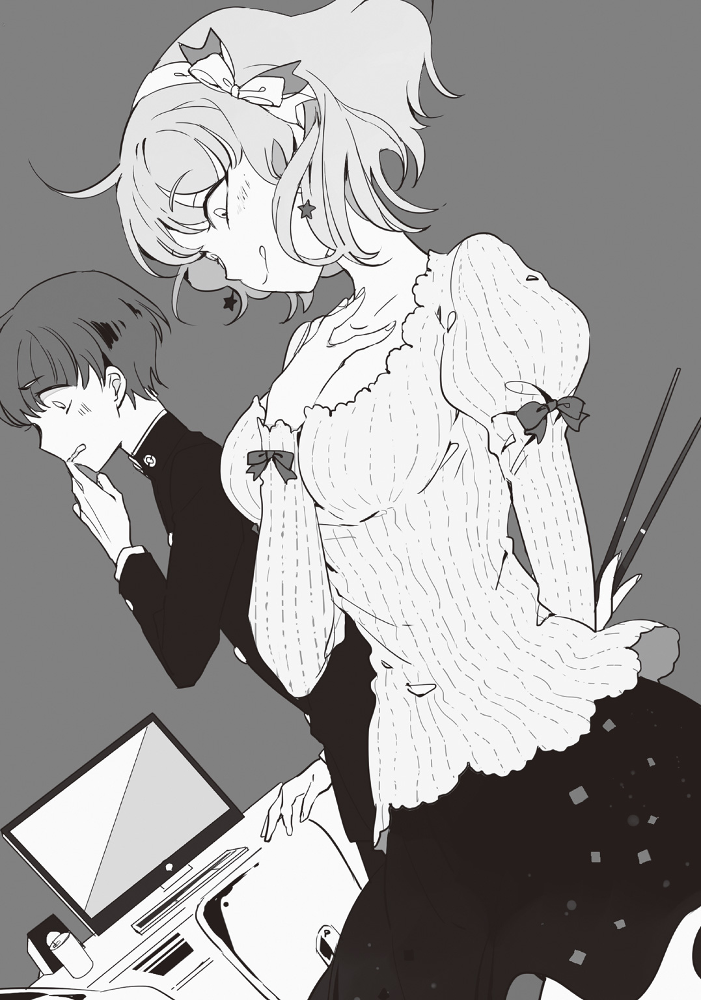
ペロリ、と舌舐めずりの音が聞こえてゾクッと背中を悪寒が走った。こんな状況でそんなことを......と、皆藤は四月一日のほうを見た。
しかし、彼女はこちらを見ても笑うだけ。
「皆藤君ったら、顔恐いわよ～。あたしだけが第一発見者だったら食べてたのになぁ......腕とかはちょっと筋張ってるかもだけど、お腹とか太ももなら柔らかいのに」
「そんな......ことっ」
「だから何でお前がそんな気張ってんだよ、ずっと狙われてたクセによ」
「？ 辻丸？ 何して......」
「コンビニで新商品の食いもん片っ端から買ってきた。......これぐれーしか楽しみねーからさ～」
声がしたのは四月一日の後ろからだ。二人揃って入り口を見てみると、辻丸が壁に寄りかかり、コンビニのレジ袋を手に立っていた。恐らく帰りに見掛けたのだろう。
彼の角度からだと二人がどかずとも終夜の死体は確認出来る。
「っていうか、〝狙われてた〟ってどういうことだよ？」
「お前、襲われてたろ？ 昨日の晩、フラッとこの部屋の前通りかかった時、あの引きこもり......ブツブツ呟いてたぜ～？ 呪文かってくらいな」
「......呟く？」
「〝殺し損ねた、殺さなきゃ〟ってな」
殺し損ねた殺さなきゃ、殺し損ねた殺さなきゃ、殺し損ねた殺さなきゃ、殺し損ねた殺さなきゃ......。そう呟いていたのだ。
「殺し損ねた、って......そんな」
「あ～、あたしもイヤね......殺し損ねるなんて。殺せなかった感覚がイヤだし？」
「殺し損ねるなんてあり得ねーだろ」
「あんたは即死させられるからイイじゃない」
やりきれなかったというべきか、殺りきれなかったというべきか、満足出来ない感覚が残るのだろうか。
終夜の手の平を見てみると、自分の爪が食いこんだ痕が残って傷になっていた。彼は絞殺の殺人鬼、その手に直に、納得いかなかった感触が残るのだろう......。しかし、その傷を見れば見るほど、自分の手にもジワジワと鈍い痛みが走る感覚がして、それを紛らわすように皆藤はギュッギュッと拳を何度か握る。
しばらくすると掃除屋がまたいつものように現れて、死後硬直で固まってしまった終夜を担架に乗せて運びだしてしまった。倒れていた椅子も元に戻して行ったが、服やペットボトルはそのままにされている。
「今回亡くなられた方、終夜夜明様は『絞殺の殺人鬼』。殺害方法は絞殺と断定されました」
こうして運び出された死体はきっと密かに火葬されるのだろうか。遺族には何の許可もとらずに燃やしてしまうのだろうか。そんなことを皆藤は考えながらぼんやりと終夜を目で追った。
だが、〝殺人鬼〟は一般世間においてはただの〝有害物質〟でしかない。どうせいなくなっても誰も困らないだろう。
「この度も、殺人流儀をお持ちでない皆藤様に、成功報酬が支払われます」
またか、と皆藤は黒スーツの男を睨んだが、男は気にも留めず部屋から出て行ってしまった。
結局運び出されたのは凶器として使われた電気コードと死体だけで、その他部屋の状態も家具の配置もそのまま、まるでモデルルームを見ているような感覚だった。妙な生活感を感じさせる部屋は、見ていて気持ちが悪くなる。
「いくらなんでも早すぎる......」
「何がだよ」
「何がって、昨日の今日だぞ!? しかも、終夜がいつ殺されたかもわかんないし......」
「死後硬直してたわよね？ 全身っぽかったし、そうすると十二時間くらいは前に殺されてるはずだし......あ、でも温められてたりしたら時間ズレちゃうんだっけ？」
「シゴコウチョク？」
「あんたには話してないわよ、野生児」
まさか普通に過ごしていて〝死後硬直〟という言葉を実際に使うなんて思ってもみなかった。四月一日はそういう方面に少しは知識があるらしいが、辻丸は案の定からきしらしい。
しかし、今は考えてももう意味が無い話だ。
（終夜が殺された時間を計算したとしても、十二時間前なんて......昨日の夜九時？ 皆バラバラに過ごしてたから誰も証明なんて出来ないし......）
フィデルとは違って終夜の絞殺は自分で出来るものではない。とすると、この屋敷内の誰かが犯人であることは確かだ。
探偵気取りの推理を始めたところで皆藤が結論まで出せる訳もなく、四月一日は本来の用事を思い出して外出し、終夜の部屋に残ったのは皆藤と彼をニヤニヤと見ている辻丸だ。皆藤がこうして苦しみ、悩んでいる度に、面白おかしく......まるで見世物を見るような視線が突き刺さってくる。
それにイラついても仕方のないことだが、皆藤はよしと腹を決めて辻丸に反撃しようとした。
「あのさ、辻丸」
「言っとくけど俺も大したこと知らないぞ」
切り出した皆藤をばっさり切る辻丸だが、まだ何も言っていない。なのにどうしてわかるんだ？ と皆藤は首を捻った。すっかり出鼻を挫かれてしまった。
「えっとー......」
「あの引きこもりについてだろー？ つかお前、そんなに他人の心配をあからさまにする奴だったか？ 逆にされる側だろ」
「そっ、それは......」
「まっ、大方〝仲良く暮らしてた同居人〟が死んで、同情でもしてんだろ？」
キモッと辻丸は鼻で笑ったが、皆藤が何も言い返せないでいると彼はそのまま続けた。
「あの引きこもり、中学の時だったっけか......警察のデータベースに侵入してウイルス送りつけたんだよな」
「は!?」
「一部のデータが消し飛んだだけだったんだけどよ、それが癖になってそっから殺人鬼になったって聞いたぜ」
「......いや、接点何もないじゃないか......」
「警察に追われるゲームが楽しくなったんだとよ」
「ゲーム......」
ハッカーとして警察から追われるも、難なくそれを潜り抜ける。当時彼がハマっていたゲームジャンルは殺戮系のサバイバルゲームだった。二次元のゲームだけにもそろそろ飽きてきたし、警察が条件よく揃ったし、三次元のほうに手を出すか。なんて。
「人殺しが出来る度にポイントが稼げる。まぁそんな感覚なんだろーなー......俺にはちっともわかんねぇ」
「......何で辻丸がその話知ってるんだよ」
「何で？ ......さあ、何でだと思う？ カイドークン」
辻丸は基本的に他人に興味を持たない男だ。興味を抱くとすれば、今手に持っているレジ袋に入っている様な季節限定品か、彼自身が好きなものだけ。勿論、その中に〝殺人〟が含まれるのは考えずとも頭をチラついた。
楽しそうにニヤつくばかりの辻丸に呆れかける皆藤だが、とりあえず可能性を考えて並べてみた。
Ｑ．辻丸が終夜の情報を聞いた相手、とは？
「......奈倉さんのことは嫌ってるし、四月一日さんも。というか、この屋敷にいる人間とは進んで話しそうもないし......だとしたら、オーナー？」
「ピーンポーン♪」
正解音と一緒に辻丸は人差し指をピンと立てたが、皆藤が正解に少し喜んでいると彼はハァ......と深いため息を吐く。
自分が正解したことに対するリアクションかと思ったが、それもどうやら違うらしい。
「ってか、俺には興味ねーのによ......」
「無いのに、なんだよ」
「あの野郎、〝皆藤さんと仲良くなれるチャンスですよ〟とか......」
「......仲良く、」
「それ以上言ったら約束破って斬り殺す」
目の前に抜かれた刀身に待て待てと止めてから、というかソレを装備して外に出掛けていたのか、というツッコミは飲みこんで、皆藤は振り返ってみた。
そこまで終夜がゲームとして殺人行為を認識し、没頭していたのなら、〝殺し損ねる〟ということはゲームクリアにはならないのだろう。誰だってゲームに勝てないのは、イヤなものだ。
「で、でもほら、終夜とかも何か本当は理由があって」
「バーカ、誰も彼もがお人好しなわけねーだろ」
「いや、でも......」
「この屋敷にまともな奴なんていねーんだよ。俺だってそうさ。俺はただあの、人を斬った瞬間の感触が好きなだけ、引きこもりはゲームをしてただけ、ただそれだけなんだよ」
何かをするのに理由なんていらねーよ。
果たして本当にそうなのだろうか？ 理由なんて、いらないのだろうか......。皆藤は納得出来なかった。
「あ、そういえばまだ質問」
「あ？」
「辻丸がこういう流行に流され易い奴ってのは知ってたけど」
「流されてんじゃねぇ、最先端を行ってるんだ」
「何で殺人をしかけないで、他のことで発散させてるんだよ？ まだ他に人がいるじゃないか」
「......お前も平然と言えるようになったんだなぁ」
うんうんと頷かれるも、そんなことは皆藤だってわかっていた。あまり言いたくは無かったが今更言葉も選んでいられない。これ以上ナーバスになっていたら身が持たない。
それに考えてみれば終夜は自分を狙っていたのだ。いい加減割り切るしかないだろう。
「ま、ようは相性だ」
「相性......？ でも辻丸は素手じゃないんだし、別に気にすることは......」
「あのなぁ......まず、俺があの腰抜けに腕力で勝てると思うか？」
「............」
「俺だって認めたくねーよ。だからアイツを相手にすんなら寝首かくくらいの意気ごみが必要だし、正直そういうのは俺に合ってねぇ」
「で、でも他にもまだ人は......って四月一日さんしかもういないのか」
「あの女なら確かに楽そう......一発で殺れればのハナシだけどな？」
「......一応聞くだけだけど、殺れないのか？ 辻丸でも」
「即死させりゃ簡単だけどよ......何つーのかな......本能で察知されて避けられそうなんだよな。で、あの女の場合は一瞬でも懐入られたら終わりだし......」
「刺殺だから？」
「カニバだから」
ゴクンと息を飲んだ。
つまり、懐に入られれば刺されようが刺されまいが、喉元に嚙みつかれてアウト、ということか。辻丸は本来は警戒するタイプでも無いはずなのだが、彼の口から〝本能〟という言葉が出る辺り、彼も感覚的に危険を感じるのだろうか。
「ん？ ちょっと待てよ。残るのは俺......は除いて、撲殺、斬殺、刺殺......っていうと......凶器組二人？ アレ、もしかして撲殺も凶器......？」
「今更かよ」
「そんなっ」
相性の話をしていたのに結論としては奈倉と皆藤が大変不利な状況にあるという事実しか判明しなかった。そもそも奈倉の撲殺というのも効率の問題では一番悪いし、皆藤に関しては自分も奈倉をも守る明確な術は無い。
「まっ、せいぜい頑張れよ～」
「なっ、他人事だなあ！」
「当たり前だろ？ 俺は〝危害は加えない〟つったが、〝守ってやる〟なんて一言も言ってない」
「薄情者め......」
だが辻丸を睨んだところで仕方がないのだ。皆藤にとって、今生き残っている三人は自分に危害を加えないと言ってくれてはいるが、オーナー達の要望は『一人になるまで』ということ。いつ、こちらに矛先が戻ってくるかも油断ならない。
「あ、そーだ」
「？」
一旦終夜の部屋から出て行った辻丸だが、言い忘れか何かで顔だけひょこりと廊下から出す。
「一応もっかい忠告しといてやるよ。嵌められねーように気をつけろよ？」
「......もう一回？」
確かに「気をつけろ」と今朝言われた。しかし、それは終夜のことじゃなかったのか？ と首を傾げると、また意地の悪い笑みがコチラを見ている。
「言ったろ？ 嵌められねーように、ってな」
今度こそ辻丸はそこを去ってしまい、ドアの開け放たれた部屋には皆藤だけがポツンと取り残された。
（嵌められないように？ ......嵌めるなんて、俺を？）
明確に言えば、「真犯人に気をつけろ」ということらしいが......。どうして彼はそれを皆藤に言ったのか。そこまでは読み取れなかった。
それからフラフラと歩き談話室へひとまず腰を落ち着けたが、三十分程時間を潰していると奈倉がやって来た。皆藤を発見して驚いたところを見ると、たまたま鉢合わせたようだ。
「奈倉さん......」
「学校はどうした？ 行かないのか？」
「いや、その......行く気になれなくて......」
「？」
奈倉は終夜の死を知らなかったらしく、皆藤は全てを説明した。四月一日が話していた死後硬直の話をすると、確かに......と頷いていたのもあり、彼も知識があるらしい。
「あと、」
「何だ？」
「辻丸から、〝嵌められないように気をつけろ〟って言われたんです。......多分、今回の殺しの真犯人についてだとは思うんですけど......」
「......」
「何でそんなこと、わざわざ俺に言うのかがわからなくて......だって、言うなら他の人にだって言いますよね？ っていうか、残ったのは俺達四人だけなんですよ？ この中に真犯人がいるなんて......」
しかし、皆藤が頭を一生懸命働かせて話しているというのに、奈倉は床の一点を見つめたまま何故か黙っていた。いつもならしっかりこちらを見て話を聞いてくれるのに、だ。
「......あの、奈倉さん？」
「なあ、お前は本当に自殺だと思うか？」
「自殺？ ......って、フィデルさんですか？」
「そうだ」
「いや、俺は......あんな状態じゃ自殺としか考えられ......考えたくないですけど！ でも、拳銃だって手にあったし......」
「だが、密室じゃあなかっただろ？」
「......談話室の鍵は確かに開いてました。けど、フィデルさんが入って行ったんなら......あの部屋、内側に鍵ありませんし」
「逆だ。あれがもし逃げた後だったら？」
「え......」
急いで逃げた為にドアがきちんと閉まったか確認しなかった。何故逃げたのか？ 目撃されるとまずいのか？ 姿を見られることを避けていたのか？
「昨日の晩、フィデルが動くことは恐らく俺だけが知ってた。それをフィデル自身も知ってたんだ、言ってやったしな」
「......？」
「それに気味悪ぃと思ってたんだ。食後の珈琲のサービスなんて......」
「あ、あの......言ってることが？」
混乱する皆藤に気づいて「あぁ」と奈倉はつけたす。
「発砲音、お前は気づいたんだろ？ それに辻丸も」
「はい」
「俺は目が覚めなかった。というか、お前に起こされてもなかなか起きれなくてな......変だなって思ってたから今朝、食堂に残ってオーナー達に調べさせたんだ」
「......何を」
「睡眠薬が厨房から見つかった。フィデルの指紋つきの瓶の中にな」
そんなことまでオーナー達は頼めばやってくれるのか、という驚きと、睡眠薬が不眠症以外に服用されることが本当に実際に起こるなんて、という驚きとで、皆藤は言葉を詰まらせた。
「恐らく、俺に邪魔させない為に盛ったんだろ。睡眠薬は液状だったし、カップにでも仕こんだんじゃねーか？ ......だが、談話室で仕留めようとしたところを逆に殺られちまった、ってトコか」
「で、でも......もしそうだとしたら。フィデルさんは殺されて、犯人はフィデルさんが自殺したように見せかけて、それから部屋を出れば......、あ」
「成立しちまうんだよ」
しかしそれだとおかしいのだ。少なくともこの屋敷内ではそんなことをする必要はない。
「......あ、あんまり言いたくないですけど。でも、だとしたらおかしいですよね？ この屋敷内では人を殺せって言われてるんだし、隠れる必要なんて......」
「そりゃ決まってるだろ。まだ終わってねーからだ」
入鹿の時から一貫して、殺人鬼を殺人鬼の殺り方で殺してきている。
その動機はわからないが、まず言えることは表には姿を現さないということ。そして、賞金目当てではない為、皆藤へなすりつけているということ。
「可能性としては辻丸か四月一日か......」
「えっ、まっ待ってください！ でも......もしそうだとしても、まだ自殺の線が消えた訳じゃ......それに真犯人のことだって可能性の話で」
「自殺する理由がねえだろ。この状況が怖くなって死ぬなんてことはアイツはあり得ねえ。それに入鹿の復讐をしようとしてた男が」
「でも、辻丸は俺達の所に......しかもアレはかなり警戒して来てたじゃないですか！ 殺したのは誰だ？ って雰囲気で。犯人ならわざわざそんな」
「目撃者がいたか？ と思ってたかもしれないだろ」
「四月一日さんだって、狙うとしても終夜だって言ってましたよ!? その終夜が死んだのを見た時だってもっと早く自分が殺ってればって言ってましたし」
「それを全部信じるのか？ そう言っておけば今みたいに第一にお前が安心するだろ？ それが狙いだっていうのもゼロとは言えない。......それに」
「なっ、何であの二人を疑うんですか!? それにおかしいですよ！ もし今の生き残りを疑うなら......お、俺だってっ」
「いいからお前は俺の言うことだけ聞いてればいいんだよ！！！！」
立ちあがり、怒鳴りあげ、見下ろされた皆藤は硬直してしまった。
頭も真っ白になってしまう。
「......え」
何が起こったか理解できずに、情けない声しか出なかった。
「いいか！ この屋敷には殺人鬼しかいねーんだ！ 現状わかってるのか!?」
「い、いや......あの、そりゃ、もちろ」
「誰も彼もが平気で殺しをして来て、それを平然とした顔で隠しながら生きて来てたんだぞ!? 何を考えてるかわかったもんじゃねえ！」
「あの......な、奈倉さん......？」
肩を上下させ、大声を上げて、こちらを鋭く睨んでいる。見たことの無い、いや。予想もしなかった奈倉の姿。
「殺人鬼なんて所詮は人殺しなんだよ！ 簡単に信用しちゃなんねぇんだ!!」
「............」
何も言い返せずにいると、奈倉は落ち着く間もなくドスドスと音を立て談話室から去ってしまった。
「おー、どうだー？ 嵌められずに済んでるかー？」
「あっ......え、と」
気付いた時には辻丸の部屋のノッカーを鳴らしていた。四月一日のほうへ赴いても良かったはずだが、確か彼女は今外出中である。
からかいの声を掛ける辻丸だったが、皆藤のその鈍さにどんどん機嫌が悪くなる。聞きたいことがあってここまで来てしまったが、いざ本人に聞くとなると気が引けるものだ。
「......で？ 腰抜けはどうした？」
「え？」
「さっき談話室に行くの見掛けたからな。何事情聴取されてたんだ？」
「別に聴取されてた訳じゃ」
「長年の懲役から出て来れた囚人みたいな顔してんぞ？」
ケラケラと笑う辻丸。悪気もなければ別に励まそうとしているわけでもない。
......いや、悪気は少しあるかもしれないが。
「............」
「......何だよ。キモイぞ、お前」
「......お前、噓、吐かないよな？」
「？」
文脈が縮められ過ぎて何が言いたいのかわからないが、皆藤はただ辻丸を真っ直ぐ、まるですがる様な目で見ていた。
それを辻丸は見たことがある。
まだ高校一年の頃、皆藤と知り合ったばかりの頃だ。身内の不幸の電話を受け取って、それを隠したまま家へ帰ろうとした時にも、彼は辻丸にだけこういう姿を見せた。
初めは言いふらしたほうが、コイツが面白いことになるだろうなと思ったのだが、頼むと頭を下げられて断れなかった。我ながらお人好しな部分が残っているんだなぁと自嘲しながらも、これが初めて皆藤から貸しを貰った瞬間になる。
それ以降、皆藤の家庭事情を詳しく聞かずとも何となく察せたし、教師以外で彼の下宿住まいを知る唯一の人物ともなったのはこういう理由からだった。
「......あーめんどくせ！」
「!?」
「ったく女々しい奴だなあ。自分のことくらい自分で腹くくって決めろよ！ 俺に関わらせるな！」
「わ、わかってるけど......その」
と、その時。玄関ホールからガチャガチャという音が聞こえた。辻丸の部屋はホールに一番近い場所に位置する。
「......四月一日さんかな？」
「チッ、メンドクセーのが帰ってきやがった。このタイミングで......」
「え？ うわっ、ちょっ」
ガシリと皆藤の胸倉を摑むと、辻丸はそのまま自室へと彼を引きこんだ。
「？」
何か音した？ と四月一日は廊下を見渡したが、もうその場には誰もいなかった。
「辻丸、お前殺してないよな？」
「殺してねーよ！ まだ一人も！」
「よ、よかった......」
「つーか単刀直入過ぎんだろ！ まずそれか！」
イライラして辻丸はワシャワシャと頭を搔くが、皆藤は安堵して床にへたりこむ。
「あーくっそ、改めて言われるとイラつくぜ。俺だって斬りてーのによ、......ったくどこのどいつがめんどくせー殺り方で次から次へと」
「あー......、よかった。......って、ん？」
辻丸の部屋の内装は一隅が畳になっており、家が道場と言っていただけあって家具も木製の物が多かった。しかし、それよりも皆藤が気になったのは開け放たれた窓と、足元でキョトンとこちらを見上げる小さな猫。
「......猫？ 何だ、飼ってるのか？」
「あ？ ......別に、そこ開けっぱにしてるからたまに入ってくんだよ」
「おっ、お!? こっちも？」
足元に一匹、窓の向こうにも一匹顔を出し、机の下にもう一匹。計三匹の猫がいた。色は白が一匹と黒が二匹。あの辻丸がまさか動物を飼っているなんて......と皆藤は彼を見たが、当の辻丸は「あ？」と機嫌が悪そうだ。猫の話題を出したからだろうか？
しかし、クシュンッ。とくしゃみの音が部屋に響く。
「......」
「......」
「......猫、可愛いのにな......」
「はいはい。ちょっとお前ら外出てけ」
猫アレルギーの皆藤がくしゃみをしたので辻丸は猫三匹の首根っこをつかんで窓の外に放った。猫達はそのまま屋敷の中庭へと向かって歩いて行く。
ゴメン、と皆藤は謝ったが、辻丸はもう過ぎたことのように切り替えて口を開いた。
「で？ お前、腰抜けと何話した？」
大体予想が出来ていたので直球で聞いてみる。すると皆藤はカチンと体を硬直させて口も一文字にしてしまった。
「おら、俺も言ったんだからお前も吐け」
「......でも、辻丸達に隠れて話した内容を口外するのは」
「その話した内容のおかげで、お前は俺に泣きついたんだろうがよ」
「泣きついた訳じゃないって！ ただ......確認というか」
「あーもうどっちでもいいけどよ......」
で？ と辻丸は皆藤が口を割るのを待った。沈黙が部屋を埋め、二人とも微動だにせず、カチ......カチ......という秒針の音だけが響く。
「............」
「......奈倉さんが、辻丸か四月一日さんが今回の一連の真犯人なんじゃないかって」
「は？ それを疑うのは当たり前だろ？」
「いや、そりゃそうなんだけど......ただ、今残ってる人間を疑うなら俺もソレに入るはずだし......で、そう言ったら突然、キレちゃって」
「キレた？」
「お前は俺の言うことだけ聞いてればいいんだ！ って急にさ」
「ハッハッハ！ なんだそれ!? アイツそんなキャラだったか!? ハハハハハハ!!」
腹を抱えて笑い転げる辻丸に笑いごとじゃない！ と皆藤が声を上げると、ヒーヒーと息を切らしながら涙を拭う。
「ククク......そうか、そんでお前ら決別したわけか」
「決別、に入るのか？ これ」
「......ま、あの野郎がカッとなっただけだろうな。何せあの腰抜けはお前といも」
パシッ、と突然自分の口を押さえた辻丸。
言葉が途切れる瞬間に「おっと」という言葉が聞こえたのを皆藤は聞き逃さなかった。
「......何だよ。お前、何か知ってるんだな？」
「......」
「何黙ってんだよ......俺と何だよ!? 何で奈倉さんがあんなに真摯になってくれるか知ってるんだろ!?」
「......まぁ」
「！」
本当に噓を吐かないことに関しては定評がつくくらい、辻丸は割とあっさり口を割る。
「知りたいか？」
「あ、当たり前だ」
「じゃ、俺が知ってる......報道されてることプラスアルファってことで」
座布団を投げつけ、皆藤を畳のほうへ座らせてから辻丸も椅子に腰を下ろす。
「二年前、ある青年が十人の犯罪グループをたった一人で全滅させ逃走した事件があった。お前もニュースで見たことあるだろ？」
「な、何となく」
「その青年が、『奈倉諒』そしてこの事件の発端は犯罪グループに殺された......そうだなー、確か生きてりゃ俺らと同い年の......」
奈倉小幸という少女。
当時、都立中学三年生だった「奈倉小幸」が塾の帰り道、指名手配されている十人の犯罪グループに誘拐される事件が起きた。その犯罪グループの手口はいつも同じもので、誘拐した女子学生を拷問するように暴行を加え続け、虫の息になったところで四肢を切断してそれぞれ袋詰めにし、後日宅配業者を装って親族の下へ送り届けるというものだ。
このグループの犯行は日に日に件数が増していき、犯行スピードも上がっていた矢先、ターゲットになったのが小幸だったというわけだ。
そして、彼女を助けようと一番に動いたのは兄の「奈倉諒」。妹は捕まる最中、携帯からＳＯＳの通知を発信し、諒はとにかく目撃情報を得ながらひたすら監禁場所を探す。暴行を受けながらも隙を狙って小幸は諒へと一通だけ、現在地のわかる写真を添付したメールを送信し、遂に場所を特定出来た。
が、しかしメールを送ったことにグループが気づき、諒が現場へ到着した頃にはちょうど解体ショーが行われていた。監禁された倉庫に響く妹の断末魔、それを聞いてゲラゲラと愉快に笑う犯罪者達。
そして、諒はその犯罪グループ全員を金属バットで殴り殺したのだ。頭を一度叩き割ってから、胴体を丁寧にくまなく殴り、骨を砕いていく。勿論一人一人始末していくのだから他の者達からの攻撃はあったが、彼は肩を鉄筋で刺されても平気だったという。
「犯罪グループを全滅させたその後、奈倉は妹の体を寄せ集め、近くの茂みにひとまず埋めて、警察に場所がわかるように印を置いて......姿を消した」
「......そ、れで？」
「埋めた場所を見てみるとそこは墓のようになっていて、妹へのせめての気持ちだったんだろうと推測されたらしい。目の前で殺されてるのに助けてやれなかった、ってとこだろ」
「......」
「で、逃亡後のプラスアルファ」
姿を消した奈倉諒を警察は追っていたが、彼は警察官を殴って気絶させたりと頑なに逃げ続け、最終的には非公開重要指名手配犯として登録される。その系統に強い者に情報を渡し、懸賞金として奈倉には五千万円が掛けられた。
「ごっ......!?」
つまり、四月一日や辻丸が奈倉を知っていて、オーナー達も彼を〝有名〟と言っていた理由はコレだったのだ。
「すっげーよなー俺だって懸賞金掛けられてー」
「じ、冗談言うな!! ってか、何で警察に追われるんだよ？ 確かに犯罪グループは全滅させたけど......それは、ほら、妹さんが」
「バーカ、世の中そんな甘くねーよ」
皆藤はぐっと息を飲んで、辻丸は彼に諭すように言い放った。
「正当防衛どころか全滅させたのはただの加撃行為、それから公務執行妨害、恐らく殺人罪で裁かれるからまあ死刑だろ」
「っ!?」
「これでわかっただろ？ アイツはのらりくらりとかわさずに、ただただ逃げただけの腰抜け。殺っちまったのは妹の為の一時の感情、しかも大事な妹で......俺らと同い年」
「......あ」
そこでようやく気づいた。この屋敷は殺人鬼の集められた屋敷。そこに潜りこめた奈倉は幸いだっただろう。だが、そこにまた紛れこんでしまった皆藤を見て、色々な考えが頭を交差する中......きっと。
彼は皆藤と妹を重ねてしまったのだ。
「そりゃあ守りたくなるさ、もう死なせねー......なんつって？」
「......」
「ハハハ！ ったく......全っ然そんな気持ち俺にはわかんねー意味不明理解不能」
「............」
これで話はオシマイ、と辻丸はため息を吐くと置いてあった未開封の缶ジュースを手に取る。ひとつを皆藤へと放り、もうひとつは自分で開ける。プルタブがプシュッと音を立てたが、皆藤は缶を手にしたまま床を見つめるばかりだ。
「......じゃあ、さっき俺に言ったのは、その妹......小幸さんと関係が？」
「そこまで知るかよ。それくらい本人に聞け。......聞けんならな」
「だ、よな......。ハァ」
続いて皆藤も缶ジュースを開けて、一口飲む。中は炭酸サイダーでパチパチと喉を刺激してきた。
「なんだあ？ お前もしかして、何の理由も無しに護衛してもらってたとか思ってたのか？」
「......いや、ずっと何かしら理由があるとは思ってたけど、まさかそんなことが」
「この屋敷には十人以上殺してる奴が集められてんだからそれくらい普通だろ。どんな理由であれ殺人は殺人だ」
「............」
「お前はどっちかってーと立場逆だけど？」
「っ......」
思わず睨むが、それでも辻丸はヘラヘラと笑っている。
「何で教えてくれなかったんだよ、奈倉さんのこと」
「言ったってどーしよーもねーだろ？ 何か出来るわけでもあるめーし。それに......」
「それに？」
尋ねると、クツクツと辻丸は喉を鳴らして笑う。この笑い方はまた何か企んでいるサインだ。
「コレを教えることで、お前があの野郎を疑うきっかけになっちまうしな？」
疑う。とは、一体どういうことなのか。
「いいか、あの腰抜けは妹を犯罪者グループに殺されてる」
「うん」
「そしてお前を殺させない、なんて発言したのは妹とお前を重ねて見てるからだ」
「......うん」
「で、お前すぐ人を信用する癖があるだろ？」
「え、......そりゃ、会う人会う人を疑うなんて」
「〝犯罪者を簡単に信用するな〟とか何とか、アイツに言われなかったか？」
「......あっ」
―――殺人鬼なんて所詮は人殺しなんだよ！ 簡単に信用しちゃなんねぇんだ!!
奈倉のあの怒鳴り声が脳内で再生された。
「アイツは犯罪者嫌いなんだよ。特に人殺し......殺人鬼の類いはな。だから俺にも基本的に良い顔しねーし」
「いや、それは単純に辻丸と性格が合わないだけなんじゃ......」
「いやいやまぁ俺のことは置いておけ」
とか言いながら飲み干した空き缶をパコンと皆藤の頭めがけて投げた。
「犯罪者嫌いな男が、だ。殺人鬼オンパレードなこの屋敷で何もしねーなんて限らねーだろ？」
「......え。まさか、辻丸......」
顔に全て書いてある。彼は奈倉が真犯人ではないかと考えているのだ。
「そんな......そんなこと！」
「おいおーい、俺の考えってこと忘れんなよ？ 何でもかんでも信じる上に鵜吞みにすんなよ」
そう言われて皆藤は一旦、そうだ冷静になろう、と目を閉じたが......いくら何でも奈倉を疑う、ということに抵抗が無いはずもなかった。
バッと立ち上がり、よし、と皆藤は頷く。それが何かを察したのか、辻丸はうわぁ......と顔を歪ませた。
「俺、奈倉さんと話してくる。......話しても逆上されて殺されはしないだろ？」
「さあな。ま、お前が地雷踏まなきゃいいだけだろ？」
「俺は辻丸程、そんなに簡単に地雷は見つけられねーし」
「ふ～ん......ま、それもそうか」
グイと炭酸サイダーを飲み干して缶をテーブルに置き、皆藤は奈倉の下へ向かうため、ドアを勢いよく開いた。
「あ、百二十円」
「金とんのか!?」
暗いその空間は赤みがかったオレンジ色のライトに照らされていた。次々と湧き出る蒸気に体温はドンドン上げられて、ポタポタと顎から滴が滴り落ちる。壁の温度計は曇って数値が見えない。
（......くそ、あんなふうに言うつもりは）
皆藤を怒鳴り散らした後、廊下をただ怒りのままに歩いていると、ふと奈倉は我に返った。そして後悔した。
（あれじゃあ、あの時と同じじゃねーか......）
過去に失った妹とのやり取りと、先程のやり取りとが完全に合致して、嫌な夢でも見ている気分だ。
今、奈倉は地下一階にある温泉施設の中にあるサウナ室に入っている。大人数が使えるほどの広さがあるのだが、何分利用者が極端に少ないため一人になりたい時はよくここに来ているのだ。
そしてどうしようもない怒りや過去への不安に追われると決まってサウナ室に籠もり、高温に耐えている最中は、雑念は全て頭の外に追いやられる。
そして雑念が追い出された冴えた頭ではクリアに物事を整理出来る為、次の思考が始まるのだ。
（......辻丸と四月一日を疑うのは当たり前だ。そもそも皆藤は殺人鬼じゃない......、俺は俺自身が犯人じゃないことをわかっている。だとすると......やっぱあの二人か、もしくは）
もう一人、誰かこの屋敷にいるのか？
考えられなくもない話だ。この屋敷のルールとしてあった「部外者の立ち入り厳禁」というのは〝殺し合い〟が行われる場所を外部に知られない為のはず。だというのに、厨房のスタッフや清掃員、給仕、それから死体発生時の掃除屋達。オーナーから回される人間は多くいる。
随分と矛盾した話だが、もしここに紛れて......殺し合いの引き金役。つまり『黒幕』が混ぜられていたとしたら？
「いた！」
「!?」
仮説を組み立てている途中、バタンッと扉を開けた人物は皆藤だった。服を着たままそこにいる、ということは奈倉を探していたのだろう。奈倉はキョトンとしたままそこに座っていたが、皆藤が無理矢理彼を連れだした。
「お、おい......皆藤？」
「さっきは、その......すいませんでした！」
「......は？」
戸惑う奈倉を置いてけぼりで皆藤は頭を下げる。そしてその姿勢のまま続けた。
「俺は、ただ奈倉さんが自分の殺人への罪悪感から護ってくれてるだけだと思ってて......。小幸さんのことを知らなくて」
「......聞いたのか？」
「辻丸から、ざっと」
「そうか......。いや、俺こそスマン」
「？」
頭を上げると当たり前だが目の前に奈倉が立っている。だが、彼の額にあるあの大きな一文字の傷が目に留まった。入居当初からその傷は隠す素振りもなく、いつも表に出ている物だが、理由を知って改めて見ると、ソレは彼の罪を突きつける物だった。それに、沢山ある体の古傷も納得がいく。
「その傷は、ずっと気になってたんですけど」
「？ ......あぁ、アイツらを片してる最中にやられた痕だ」
「......」
犯罪者グループを全滅させてからずっと逃亡の身だった。ということは、病院にも行ってないんじゃないか？ と皆藤は眉をひそめた。縫った痕も見当たらなければ、傷はどれも不格好だ。
「悪ぃな、お前を......小幸の代わりにしてたみたいで」
「えっ。いえ、それでも......俺は助かってますから」
「......そうか」
そんな言葉しか返せなかったが、奈倉にとってはそれが一番の救いの言葉だった。
それからひとまずその話題は区切りをつけ、二人の関係が元に戻ったところでまずは服を着ようと浴場から脱衣場へと移動した。
蒸気で蒸されたサウナ室とは違い、脱衣場は扇風機が備わっていて涼しく、服のまま中に入った皆藤はとりあえず上着をその場でバサバサと払った。
「あ、でも......奈倉さん」
「ん？」
「その......まだ辻丸と四月一日さんを疑ってるんですか？」
「辻丸にはお前から何か聞いたか？」
「〝俺は殺ってない〟と......」
彼が奈倉を疑っていたのは黙っておこう。また一悶着が起きかねない。
「なら辻丸の線は消していいな。アイツ噓吐かないんだろ？」
「そこがアイツの唯一の良いところですから......」
アハハと苦笑いすると、奈倉も笑いを嚙み殺した。ソレを見てホッとしてしまう。
「が、ひとつ......他に可能性があるなら......」
「？」
先程まで奈倉が組み立てていた仮説、『黒幕』について。
皆藤に話す為、一応のことを考えて自分の部屋へ行くように伝えておいた。
「部屋の鍵なら開いてるから、入って鍵かけといてくれ」
「わかりました......けど、奈倉さんは？」
「いや、時間も時間だしな......軽く何か食いながらにしようぜ？ コンビニ行ってくる」
皆藤はわかった、と頷くと奈倉の部屋へ直行し、奈倉はそのままコンビニへ向かうため屋敷を出た。
外に出てみるとすっかり日は暮れ、空はオレンジ色に染められていた。広い中庭を抜け、大きな門をくぐる。入居者らがよく使用しているコンビニは歩いて十分もかからない。
向かう最中、ふと奈倉は思い出してポケットをまさぐった。そして取り出したのはチェーンの通った銀のロケット。カチッとボタンを押して中を見てみると、小さな写真が入っている。十代半ばほどの少女が笑って、隣の誰かと腕を組んでいるものだ。
「......」
しかし、それを一目見るとすぐに満足したのか再びポケットへと戻し、ポンポンと上から叩いた。
（......小幸......）
あの時、あと一歩でも倉庫に入るのが早かったら......。妹は死なずに済んだだろう。あと一秒でも早ければ。
奈倉は信号待ちしながら思い返す。
学習塾にいく直前、奈倉と小幸は些細なことで口喧嘩をして、いってきますの挨拶もなしに家を出た。その喧嘩のことを奈倉は母からグチグチ文句を言われたのだが、頭にきていた彼はそんなことに耳も貸さず、自室へ閉じ籠もる。携帯もその辺に放って、気を紛らわすために昼寝した。
そのせいで、妹からのコールとメールに気付くのが遅れた。
「......もう、死なせねーからな」
小さく再度口にして、妹に誓うように呟いた。何をしてでも皆藤は守ると決めたのだ。
もう、同じ過ちを犯す気はない。そして最後に二人共が残った場合でも、彼には既に考えがあった。それは失敗するとか成功するとかではなく、上手くオーナーを騙して皆藤の承諾さえ下りれば実行できることだ。奈倉はただそのことだけを何度も何度も、イメージを反芻して目を瞑る。
どんなことをしてでも。と、彼はそう決めていた。
屋敷の中で、息を殺して、真犯人が目を光らせていることも知らず。
一方、奈倉の部屋で皆藤は一人大人しく待っていた。が、実は既に小一時間が経過していた。
（......遅いな。コンビニって、最寄りのだよな？）
もしかしたらとんでもなくレジが混んでいるとか、道中で交通事故があってそれに足止めを食らっているとか......。いや、それにしても片道十分もないコンビニに行くのに一時間もかかるはずが無い。
「......食堂行ってみるか」
何か厨房のスタッフに言えば出してくれるのもあり、暇な皆藤は階段を上がって食堂へ向かう。食堂の青い扉まで来て、中に誰かいないかとゆっくり扉を開けてみたが円卓には誰も着いていなかった。夕飯時なので普段なら四月一日がそこにいるはずなのだが。
「......？ 静かだな」
しかしやけに静かなのが気になった。円卓に誰もいないとなると、厨房からの作業音や話し声が少なからずいつもなら聞こえるはずなのだがそれが無い。どうしたんだろう？ と両開きの扉を開けて厨房を覗いてみると、数人のスタッフがせかせかとありとあらゆる棚を一生懸命見ていた。
「何してるんですか？」
「あっ、注文ですか!? スミマセン！」
「あ、いえいえ......それは別にいいんですけど......何か探してるんですか？」
「え、えぇ。〝箸〟とＢＢＱ用の〝鉄串〟が無くなってるんです。無くなるはずが無いんですが......」
「箸とかならどこかに紛れてるとかじゃ......」
「全部で箸は五十膳、鉄串百本なんですよ？」
別のスタッフから答えられ、皆藤はドキリとした。五十膳、ということは本数だとそれも百本だ。計二百本もの箸や串を持ち出すなんてそれだけでも一苦労するはず......。
皆藤は厨房を離れ、円卓のほうに無いかと少し探しに行ってみたが、やはりそこにあるはずも無かった。一体誰が何の為に持ち出したのだ？ と首を捻りながら、皆藤は椅子に腰を下ろした。
所で、ピチャリと水音が足元でした。
変わって玄関ホール。奈倉が扉を開けて帰って来た。
「何なんだよ......つか、何で」
実は最寄りのコンビニは、駐車場にいたトラックがアクセルとブレーキを踏み間違えて店に突っこみ、ガラスが大変なことになっていたのだ。
というかトラック運転手が踏み間違えを起こすなんてもう一度教習所に行ったほうがいいんじゃないか？ と奈倉は頭を痛めつつ、仕方なく遠いほうのコンビニまで足を運んだ始末。
これなら普通に大人しく厨房にオーダーでもすれば良かったと思ったが、気分転換にもなるかと遠出をするほうを選んだ。
「皆藤待たせちまってるしな......」
長時間待たせると決まって妹の小幸に怒られたのを思い出し、皆藤はそこまで怒らないだろうとわかっていても、申し訳ない気持ちでいっぱいになる。が。
「うわああああああああああああああああああああああああああああああああああああああああああああああああああああああああああ！！！！！！！」
という叫び声を聞いて奈倉は声のした二階へと駆けだした。今の声は、皆藤だ。
「皆藤!?」
「なっ、......ぐら、さん......」
食堂の円卓に敷かれていた赤いテーブルクロスが床に落ちていた。その傍らで皆藤は腰を抜かして、涙目である。またその横に吐瀉物らしき物があるあたり、彼は吐いてしまったのだろうか。それはどうして？
その答えは厨房から紛失した計二百本の〝凶器〟と、四月一日椎奈であった人間の針山から、同時に提示された。
いっぱい食べる女の子
刺殺の殺人鬼 ★ 四月一日椎奈
「んー美味し～」
「まだ食べるのー......？」
「まぁまぁ、元取ってくれてるんだしさ」
「でもきっと次はこの店も出禁になるだろうね」
都内某所のランチビュッフェ。「女性限定二千円で食べ放題」そんな謳い文句を掲げた看板が出入り口に立っていて、ホテルの中にあるこのレストランはそれ相応の高級感を漂わせていた。平日といえど、昼時の今は女性客でほぼ満席の状態となっており、料理も次々と出されてくる。
ただ、二つのテーブルを囲む女子高生四人がいるそこだけは少し様子が違っていた。二つのテーブルを確かに使ってはいるが、片方を三人で使い、片方を一人が独占しているのだ。
「ねえねえ、アキちゃん。次はケーキ行かない？」
「これからデザート!?」
「じゃあ行きましょうー！」
元気良くデザートコーナーへ歩いて行く一人と、助けを求めながら連行される一人。
「あーあ、店員の目が怖い怖い......」
「〝タヌキ〟ももう少しセーブって言葉を覚えて欲しいんだけど......」
「誰がタヌキだー！！！！」
あら聞こえたの？ 二人はその大食いの一人をクスクスと笑った。
先程より快活に端から端まで食いつくし、タヌキというアダ名をつけられている彼女は四月一日椎奈という。都内の私立高校に通っている女子高生で、トレードマークはいつもつけている白く大きなカチューシャだ。年齢は十八歳。趣味は食べること。特技は大食い。よく制限時間付きのビッグメニューに飛びついて賞金をガポガポ稼ぐのが癖で、何よりも嫌いなものが空腹と退屈。
そんな彼女の周りにいる三人は高校入学時からの仲で専攻がそれぞれ別方向に進んだものの、今でもこうしてつるんでいる。何より、彼女たちがいなければ四月一日のこういう場所での暴走は止まらない。
「あーあーまーたそんなに持ってきて......」
「私達とっくにお開きなんですけどー？ タヌキさーん」
「だからその呼び方やめてってば！ これで最後だから！ ......ね？」
「可愛くおねだりしても延長はしませんからね、お嬢さん」
「そこら辺の男と一緒にしないでね？」
「チッ......」
ホールのショートケーキにホールのチョコレートケーキ。イチゴタルト五つにモンブラン五つ、シュークリームが十個にプリンが十個。それを吸引機の如く次々吸いこんでいく。プリンに関しては食べる、というより飲んでいる。
「あんた絶対早死にするね。栄養過多だよ」
「何言ってんのよ、あたし野菜も好きだけど？」
「それより先に胃が破裂するんじゃない......？」
「糖尿病とか高血圧で死にそう」
「おっさんと一緒にしないでくれる!? ......さ、終わりましたよ」
手を合わせて、ご馳走さま。と挨拶をするとテキパキと簡単に食器を片づけた。その様子を見守りながら、四人揃って会計へと進む。
食べることでは誰にも譲らないし、強気だし、わがままだし、結構自己中な性格の四月一日。そんな少女にずっとついているのはかなりストレスは溜まるし、衝突もしばしばあるだろう。それでも、芯の強さと変なところが真面目な性格なので、周りの三人はいつも一緒にいてくれる。何だかんだ、見ていて面白いからだ。
まぁ、会計時にやはり「出入り禁止」の釘を刺されて泣いていたのだが、それをも三人は笑い飛ばす。
高校三年生。受験シーズン真っ最中の彼女らだったが、その受験勉強の為に早帰りが多く、たまにこうして食事を一緒にしては気分転換、ストレス発散をしていた。そこを食事で踏みとどまるのは、遊びにいってしまえば時間を忘れてしまうし、何より四月一日がうるさい。
「あーぁ......あそこのケーキ美味しかったのに......あとパスタも......」
「ま、あんだけ食えばそりゃそうよ」
「タヌキちゃん自業自得～」
「うっさいわね！」
駅へ向かい、電車に乗りこんで、乗り換えで二手に分かれて、それぞれの最寄り駅で降りる。
その帰りの最中には既にスイッチが切り替わっていて、単語帳やイヤホンを取り出して受験という現実に戻ってしまうのだ。それは四月一日も同じで、食事の余韻を打ち消して参考書を手に取る。それを読みながら自宅まで歩くのが彼女の日課だった。
「......受かるかな」
四人共が全員別の学校を志望して、最後の思い出作りに、とこうして遊んでいるわけだが、不安になることもある。いつまでもこの日が続けば難しいことも考えないで済むし、楽しいまま遊んでいられる。それでも、自分より学力とは別の意味で頭の良いあの三人は前へ進もうとしているのだ。
先程までのテンションから一気に急降下したその気分にムカつきながら、四月一日はイヤホンをセットしてリスニングを始める。
勉強は苦手だが嫌いではない。知らないことを知るのは楽しい。まるで知識を食している気分にもなれる。だから、現状を嫌いと言いきれないのだ。しかし何かが引っ掛かるくらいで。
そんなモヤモヤとした悩みを上書きするように四月一日は目の前の英文に全神経を注ぎながら、車の通れない広い遊歩道を一人で歩いた。
だが、後ろから迫るコツ、コツ、コツ、コツ、コツ、コツという音には気づかない。肩へと乗せられたその誰かの手でやっと後ろを振り返った。
「えっ？」
しかし次の瞬間には声を上げられぬよう口元を押さえられ、地面へ組み敷かれ、手際よく手首を縛られたかと思えば、遊歩道であるにも拘わらず大型ワゴンがキキッとブレーキ音を立て、あっという間に彼女を乗せてしまった。
現場に何も残さずに、都内の女子高生が行方不明になった。
その事件は大きくなって警察の捜索が始まったものの、四月一日椎奈という少女の手掛かりは皆無だった。目撃情報もなければ連絡もつかず、携帯のＧＰＳ機能も使えず、お手上げだった。強姦事件や殺傷事件はその付近で頻発していたものの、誘拐事件は初のケース。
「......お腹空いた」
そして当の本人は、大型ワゴンに詰められたかと思うとしばらく車は走り、目隠しされた状態でどこかの廃墟に置き去りにされていた。車の中で聞けたのは複数人の男の声で少し年上くらいだったろう。
廃墟に降ろされてからは目隠しはとられたが、タオルでしっかりと縛られた手首は解かれず、男は「また来るよ」と気持ち悪い台詞を耳元で、生暖かい息を吐きながら言っていた。一瞬でそれに全身の毛が逆立ったが、それからもう一週間は経っている。
（攫うだけ攫って放置ってどういうこと......？ っていうか......）
「水だけでも......」
一週間、何も食べられない生活を送っていた。廃墟の中に溜まっていた泥水を見つけてそれで何とか凌いではいたものの、今ではもうそれすら尽きかけている。
「お腹......空いた............ケーキ食べたい......」
脳が糖分を欲している。脳がカラカラに渇いた感覚を味わって、手足に力も入らない。胃腸は栄養分が一切入ってこないためにキリキリと痛むし、喉も口も唇もカサカサだ。
（何で......？ 衰弱させたいの......？ 何のために......）
弱らせて、それからお楽しみ会が開かれるのだろうか。そんなことに巻きこまれたくない。まだ頭は強気の状態をキープしているが、これもあと何日続くことだろうか。
誘拐から十日目。いよいよ体がおかしくなってきた。
普通の人間ならまだ何とか耐えられるかもしれないが、彼女の嫌いなものは空腹と退屈。そして毎日あれだけの食物を摂取していたのだから数十倍もの飢えとストレスを味わう羽目になる。
「む、かつく......むかつくむかつくむかつくむかつくむかつくむかつくむかつくむかつくむかつくむかつくむかつく!!」
弱々しい怒りの声は廃墟の色褪せた壁に吸いこまれていく。脳がどうにかなりそうだ。手足の神経がムズムズと疼きだして、脊髄も同様に疼く。神経を引っこ抜いてしまいたいくらいのストレスが彼女を襲った。
誘拐から十三日目。やっと、廃墟に足音が響いた。
コツコツコツといくつも重なる音を聞きながら、四月一日はそこにぐったりと横たわったままピクリとも動かない。
「あーあー、すっかり弱っちまってもー」
「どうする？ これもうダメじゃね？」
「だから水くらい置いとけつったんだろ」
「だって何もやるなって......言われたよなあ？」
「だよな。よく知らねーけど変なおっさんに」
「......ま、二週間待てば好きにしていいって条件だろ？ ヤるだけヤってあとは捨てときゃいいさ」
現れたのは男五人だった。まだ二十代前半から半ばといったくらいで汚い格好はしていないものの、品のある雰囲気とは決して言えぬものだ。
「おーい、嬢ちゃーん生きてるー？」
「う......」
「おー、生きてる生きてる」
ペチペチと頰を軽く叩くと四月一日は反応を示したが、意識は朦朧としていて先程から男達の会話もあまり聞き取れていない。
「いやー、でもこーんなべっぴんさん、よく連れてこれたなぁ」
「くちびるとかチョーセクシーじゃん」
ギャハハハハハと汚い笑い声が耳をつんざく。うるさいなぁ、いやだなぁ......と考えているとうつ伏せになっていた体を仰向けにゴロンと動かされ、彼女の体に一人の男が馬乗りになった。
「へへっ、そんじゃま......宜しくたのむぜ～」
ベロリと舌舐めずりをして見下ろしてくる男。だが、四月一日には今がどういう状況か判断出来ないでいた。
そして、キョロ、キョロと目を動かす。
「あん？」
突然どうしたんだ？ と男はそのまま四月一日の様子を見る。
壁、窓、床、天井、割れた電球、千切れたカーテン。
ひとつずつ、ひとつずつ、見ていく。
窓の外は真っ暗、カラカラに乾いた空気、壊されたあたしの携帯、鞄。
ひとつずつ、ひとつずつ。
床に寝ているあたし、それに乗っかってる男......、男......、人間......、生き物......、有機物......、生物......。
「なま、もの......」
「おわっ!? 喋っ......」
だが、男の声を遮ったのはガブリという何かの音だった。
「なっ......」
「お、お前なにしっ......」
ブチブチッと音を立てて、四月一日は男の喉を嚙み切ったのだ。
「っ――――――――――――！！！！」
声帯を失った男はジタバタと痛みにもがき、涙を流し、ボタボタと真っ赤な血を垂れ流す。そして助けてくれと仲間にすがりつこうとするが、他の男達もそれを避けるのは言うまでもない。
「っ......」
喉を嚙み切られた男は遂に膝からガクンと崩れ落ちて、ドシャリとその場に倒れた。
「なっ、......何で......」
「お、おい......女......お前どうかしちまっ......ひっ！」
モグモグ、ゴリゴリ、ズルズル......そんな巻きこまれたくない音を立てて口を動かし、ゴックンと飲みこんだ。今、食したのは、そこに倒れている男の足りない一部。
「うえぇ......マッズ......お肉なのに......何で不味いのよぉ～......」
「お、おい......これ、ヤバくね？」
「......ん？ あ！」
不味いお肉まだあるじゃん。
目を見開いた。今、そこにいる餓死寸前だった女は、一体何を言っているんだ？ と。
「あーもう、この手の奴邪魔だなぁ......、お」
すると、倒れている男のポケットからカッターナイフがチラリと見えたのでしめしめと彼女はかけよって、後ろ手でザクザクとタオルを切り裂いた。自由になった両手にキャー！ と嬉しそうに声をあげ、あれ？ とまたこちらを向く。
真ん丸としたその大きな二重の目で。
「......フフフフ。不味いのはあんまり食べたくないけど、今食べられるものコレしかないし」
「あっ......あ......」
「あ、でも待って！ あれじゃないとあたしやだなぁ」
カッターをその場にカツンッと捨てると自分の鞄へ駆け寄って中から何かをゴソゴソと取り出した。カチンカチンという何かを嵌めこんだ音が聞こえると思うと、その手にはオレンジ色の三十センチはあるであろう長い箸。
そして彼女は、赤い肉汁が垂れる口元をペロリと舐めた。
そこにある〝不味いお肉〟は腰が抜けて動けないでいる。
「いっただきまーす♪」
翌朝。警察は大型ワゴンの目撃情報を手に入れてすぐに例の廃墟へと急いだ。パトカー十台と救急車一台。しかし、現場についても物音がせず、もぬけの殻なのかと中へ踏みこむと血なまぐさい臭いが充満していた。
そこに残っていたのは、喉を食いちぎられたモノと指を十本食われて腹に何度も何度も何か細い棒を刺したような傷があるモノと、太股を食われて心臓を一突きにされているモノと、カッターのような刃物で胸を開かれて心臓を丸々持っていかれたモノ。
刺し傷以外を見れば野犬の仕業ではないかと思われたが、歯形を調べるとそれは犬の物ではなく、ヒトの物だった。
そして一番不可解なことは、誘拐されたはずの女子高生がいないということ。
数日後、四月一日椎奈という少女はヘトヘトになり我が家へ帰り、誘拐事件は幕を閉じたが、後日、また食い残しのような女子高生三人の遺体が発見される。
その被害にあった三人と交流があったという四月一日椎奈へと事情聴取をしに行けば、もう何日か前に行く先も告げず、どこかへと一人引っ越したというのだ。
今、四月一日椎奈という少女は念願の大学生活をトモダチと一緒に、そして殺人鬼ライフも謳歌している。
自分を嵌め、殺人鬼の才能開花を促した連中が、数年後にある手紙を送ってくるとは予想もせず。
「おい大丈夫か!? 皆藤！」
四肢胴体、顔にまでも大量の鉄串が刺さっているのは容易に理解出来たが、何故箸の様な先の尖ってない物まで刺してあるのかがわからない。この殺し方は相当な力を要するが、それ以前に相手を完全に殺してからでないと暴れられてたまったものではないだろう。
グロテスクに完成したその死体は見るに堪えない物で、奈倉は皆藤へ駆け寄って死体から少し離すと、ガタガタと震える彼の体をさすってやった。
「っ......は......」
「しっかりしろ、過呼吸なんて起こすなよ......!?」
「おいおい、何の騒ぎだ......うっわ！ んだコレ!?」
顔を覆って呼吸のリズムを乱す皆藤に奈倉は落ち着け、と何度も言い聞かせていると、悲鳴を聞きつけた辻丸も食堂へやって来たが、四月一日の死体を見てウゲッと顔をしかめた。
殺されて間もないのか、幾多もの刺し口からとめどなく血液は流れ出ており、床の血溜まりをどんどん広げていっている。
ただ刺しただけなら出血するはずはない。つまり、凶器を刺すだけでは飽き足らず、刺し口の穴を拡張するようにグリグリと弄ったのだろう。
そこまで考えられる辻丸や皆藤、奈倉にとって、今目の前のある死体ほど気味の悪い物は無い。
「あーあーキメェなぁ......つか？ この場合、どう考えんだ？ なぁ腰抜け」
「何がだ」
「だってよ、このタヌキが殺されたのがさっきってーと......」
誰も互いのアリバイ、証明出来ないんじゃねーの？
辻丸の言うことはもっともだ。奈倉は外にいた。皆藤は奈倉の部屋にいた。辻丸は自室にいた。つまり、全員が一人で行動していたということは、彼等は自分の無実しか証明できない。
「......」
「テメェがどう主張しようと、俺はテメェを疑ってるからな？ 奈倉」
針山死体ということは、男でなくてはならない。つまり三人ともその時点で条件をクリアしてしまっている。誰が誰を疑っても仕方の無い状態だ。
奈倉と辻丸が互いに睨み合い、皆藤はその場にうずくまり、動きが取れないでいると、いつの間にか食堂の出入り口に黒スーツの集団、掃除屋が立っていた。
「クリーニングを開始します」
男の一言によりゾロゾロとまた入ってきて、四月一日の死体に顔色ひとつ変えず担架に乗せ、散らかした吐瀉物も、クシャクシャになったテーブルクロスも、てきぱきとした仕事によりあっという間に整えられる。
赤いテーブルクロスに代わって敷かれたのは青いテーブルクロス。
「これにて掃除は完了致しました。今回お亡くなりになられた方、四月一日椎奈様は『刺殺の殺人鬼』。殺害方法は刺殺と断定されましたので、この度の成功報酬は第一発見者である、皆藤様へと支払われます」
お決まりの台詞を言って、掃除屋は去る。が、パシッと誰かに引き留められた。
「ちょっと待て」
「何でしょうか？ 奈倉様」
「お前ら、監視カメラとか盗聴器とかから死体の確認をして来てんだろ？ なら真犯人を知ってるはずだ」
「......そのことにつきましては、オーナー様方より強く口止めされておりますので」
「チッ」
舌打ちと共に摑んでいた腕を乱暴に放したが、そんなことは気にも留めていないように再び一礼。今度こそ食堂から出ていってしまった。
「くそ......やっぱり、誰かまだ潜んでるんじゃ......」
「おいおい、そんな甘いこと考えてんのかよ？ つか、テメェじゃねーの？」
奈倉はまだ黒幕がいる仮説の可能性に賭けていた。しかし、辻丸はそんな可能性を考えもせずに奈倉が犯人だと思っている。
だがここで言い合いをしたところで決着がつくはずもなく、辻丸は自室へ。そして皆藤は奈倉に連れられて奈倉の部屋へと移動した。
「すみません......」
「いや、いいんだ。あんな死体見たらな......」
本来なら奈倉の仮説を皆藤と話すつもりではいたのだが、皆藤の様子を見て奈倉は話すことをやめて、今日もここに泊まっていけと言い、それ以降は特に会話することも無かった。
皆藤は自分が情けない、と思いながらも奈倉からの優しさに甘えてしまい、そのまま横になる。
時計が夜の十時を指した頃。
奈倉は落ち着かず、椅子に座ったまま考えごとをずっとしていたが、「あの......」という皆藤の声に目を丸くした。
「起きてたのか？」
「いや、やっぱりちょっと気になることがあって......」
皆藤は横になったまま、顔もこちらへ向けずに弱々しく話した。
「奈倉さん、〝潜んでるんじゃ〟って言ってましたよね？ ......それって、今日話そうと思ってたことじゃないんですか？」
「......まあな」
テーブルの上のペットボトルに入った水を口に含みながら、奈倉は短くため息を吐いた。
「俺達以外に、オーナーから誰かが送られてきてて、ソイツが全て今回のことをやってるんじゃないか。......なんて、都合良いこと考えてたんだ」
「誰か？ ......って、それって。俺達以外にもう一人、ってことですか？」
「あぁ」
いわゆる『黒幕』がいるのなら、四月一日や奈倉の様に殺人中毒者で無い殺人鬼が機能しなかった時に動かすことが出来る。
そうすれば、他の者は誰が殺っているんだと疑い、自分が殺られる前に殺らなければ、と連鎖が生まれるはずだ。
「そう考えれば、今回の四月一日の死も......アリバイの証明が出来ない俺達以外が殺ったなんて考えなくて済む」
（考えなくて済む、......っていうことは......疑いたくないんじゃ？）
私利私欲で殺人をしていない唯一の人物、奈倉であるからこそ思いつく逃げ道に違いは無かった。こう考えれば、すぐ隣にいる人物を疑う必要もなくなる。
「......あの」
「ん？」
「俺も、ちょっとだけですけど。考えてたことがあって......」
すると皆藤は上体を起こして奈倉のほうへと向いた。
「あの、本当に......皆の遺体って、処理されてると思いますか？」
「......どういうことだ？」
「可能性の話、っていうか......まぁ漫画でもよくある話ですけど」
終夜の死体にその手で触れた皆藤だからこそ、思い至った考えだ。
終夜と四月一日の死体は考えようもないが、入鹿、フィデルの遺体に関して。
「あの二人、......本当に死んでると思いますか？」
「......！ いや、まさか......それは」
「入鹿さんもフィデルさんも外傷少なかったじゃないですか。......もし、死んだふりというか、オーナー達に持っていかれてそっちで蘇生なんてされて、一命を取り留めてたら......俺は生きてればって思いますけど......！」
生きていればな、と願う皆藤だからそう考えてしまう仮説。しかしその線もゼロとは言えないのだ。持ち去られた死体がどうなったか、それは全く伝えられていないし、そもそも死体発生が相次いで以降オーナー達からの連絡は一切無い。
何か隠しているのでは？ とも思える。
「......駄目だな」
「？」
ハッ、と奈倉は笑うとソファベッドに横になった。
「考えても仕方ねーや。とりあえず今日はもう考えるのはやめようぜ」
「......でも」
「頭使い過ぎで混乱してきてる。な？」
「......はい」
結局結論も出せぬまま、二人は眠りについた。暗い部屋に寝息が静かに聞こえていたが、奈倉は薄く目を開き、天井を見つめていた。
翌朝になってまたいつものように食堂に行き、食事をとって、それからまた少し真犯人について話し合うが、証拠も確信も無いのだから話が進むはずもなかった。
仮に真犯人である四人目、黒幕がいたとしても、ソイツがどこに隠れているかもわからない。確信が持てない話し合いは、自分への励ましと現実逃避とストレスばかりを溜める一方だが、何もしないよりはマシに感じられた。
そしてその時、キョロキョロと辺りを気にしていた皆藤が言いづらそうに口を開く。
「あの......あんまり考えたくないんですけど」
「？」
「今日、辻丸見ましたか？」
「......いや、アイツのことだからそう簡単には殺られてないと信じてるんですけど」
「......そうだな。探してみるか？」
何故言いづらそうかと言うと、昨日辻丸に聞いた「奈倉の殺人鬼嫌い」が原因だ。恐らく辻丸と奈倉は互いのことをあまりよく思っていないだろうし、何より......。
辻丸に言われたことが頭に残っていて、こうして奈倉と話している間にも彼が真犯人なのでは？ という疑心が生まれつつあるからだ。
辻丸を気にかける気持ちを察してか、奈倉は彼の気持ちを汲むように捜索を提案してくれて、二手に分かれて辻丸を探すこととなり、最後は玄関ホールで落ち合うことにした。
皆藤は一階を、奈倉は二階を。だがしかし、知っている部屋は全て回った彼等だったが辻丸の姿も、黒幕の姿さえも見つけられず、一体どうしたんだ？ と首を捻りながら、奈倉はホールに仕方なく向かいはじめた。
「ったく、......まさかアイツ、殺られた訳じゃ」
「誰が殺られたって？」
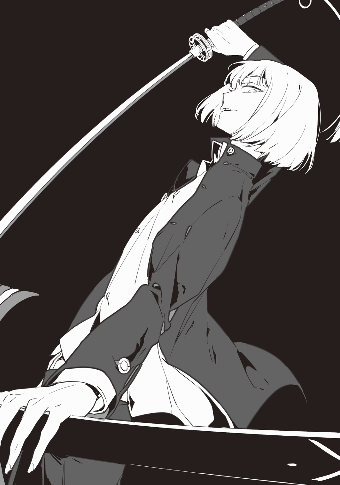
「！ ......辻まっ」
だが、振り返り、目視したところで奈倉の眉間のシワは深くなった。速攻で斬りかかりに来られなかっただけでも救いだったが、既にその刀身は鞘から抜かれていた。
愛用の凶器を片手に、辻丸は現れたのだ。
「......辻丸」
「おいおい、この展開はまさか予想してなかったか？ んな訳ねぇよなあ？ 腰抜け」
「......。あぁ、そうだな」
彼にしては随分と悠長な仕掛け方だろう。会話をして、まだ間合いも詰めず、ニタニタと笑っているだけだ。それでも今の奈倉は運悪くも丸腰。凶器に成りうる物はどこにも見当たらないし、自前の凶器も自室だ。
「んー、やっぱり殺しはこうじゃなきゃなあ......なんでめんどくせー連中を相手に、真っ向から相手しなきゃいけねぇんだよ」
「お前もそう思うか」
「俺はかなり純粋な殺人鬼だからな。ただ斬れればそれでよし、斬れなかったら再度斬ればよし」
「とんだ理屈だな」
その言葉と共に、奈倉は走り出した。それを追って辻丸も走りだす。
スピードに差はあまりなく、このままなら追いつかれることはない。一本道の廊下の突き当たりにホールに出られる階段がある。二階からなら飛び降りることも出来るから、少し時間は稼げるだろうと踏み、一直線に階段を目指した。
突き当たり、奈倉は手摺に手をついてそのまま一階へと飛び降りると、既に下には皆藤がいて、走る音に気づいたのかこちらを見上げていた。
「奈倉さん!?」
「何か金属の棒状のものねぇか!?」
「え？ ぼ、棒？」
キョロキョロと辺りを見渡すとホールに設置されている暖炉の火かき棒が目に留まった。それがあればまだ......、と思ったがやはり辻丸も追いついてきた。
「逃げんじゃねぇぞ腰抜け!!」
「辻丸!?」
刀を手にしたまま、辻丸は階段の手摺に足をかけてそのまま一階へと飛ぼうとした。
だがその時、バキンッ！ という音が響く。
「なっ......」
手摺が衝撃に耐えられなかったのか？ 根本のほうから折れてしまい、ガラガラと崩れ落ちた。
だが助走もあった辻丸は難なくそのまま体勢を立て直し、刀を振りかぶりながら落下する。
「っ！ 辻丸っ!!」
皆藤の声は、きっと辻丸の耳に入っただろう。きっと。
今の彼の声はソレよりも早く発せられたハズだ。きっと。
折れた手摺から伸びる何本かの細いワイヤー。それは天井へと進み、繫がっていたのだが、衝撃を受けてワイヤーは引っ張られる。
そしてワイヤーは薄い金属板をそのままの速度で引っ張る。
高い位置からの落下と衝撃からの引力により加速した金属板は、そのまま辻丸のうなじ目掛けて飛び......。
スパッ、と肉の切る音を発した。
とある辻斬りととある野良猫
斬殺の殺人鬼 ★ 辻丸菊里
しんと静まり返る夜の公園で、茂みからガサガサという音が聞こえた。一体何がいるんだ？ とそちらへ目を向けてみると、茂みから現れたのは一匹の猫。
「......野良か？」
その猫は黒と白の毛で、首輪をしておらず、毛並みもあまり良いとは言えない姿をしていた。しかしその猫は茂みから現れたと思えばピタリとそこに立ち尽くしたまま微動だにしない。
そしてずっとそこに立つ男、辻丸菊里のことを見据える。
「......ハァ、帰るか」
ブン、と振るとパッと地面に赤い液が線状に散って、パーカーと自分の背の間に、持っていた日本刀を鞘に納めてから隠した。足元に転がる動かなくなった素性も知らない赤の他人をそのまま置き去りに、振り向きもしないでスタスタと歩きだす。
それを、その野良猫はまだ見据えていた。
ドサリ、と音を立ててその場に崩れた人間は首からドクドクと血を流しながら声も上げずに寝転がり、それからは動かないモノになってしまう。
今日もまた、随分と静かな夜で、また茂みからガサガサという音が聞こえた。
「......またお前かよ」
例の野良猫に間違いなかった。茂みから現れるとまたピタリと立ち尽くしてこちらをじっと見つめてくる。この公園に住み着いている野良なのか、前回見た日からは何日か経っているのだから、何ともまぁ奇妙な偶然の再会だった。
「猫なんか斬ったところで、なーんも楽しくねーっつーの」
眼中に無い。また刀を一振りしてから隠し持って、早々に家へと帰った。
「............」
ニャアとも鳴かずに、またあの野良猫はいつもの茂みから、いつもの立ち位置へと現れる。これで三度目だ。もしかしたらコイツはいつも決まった時間にここに現れるのかもしれないと少し時間を遅らせてみたものの、野良猫は平然と辻丸の前へと姿を現す。
「......何なんだよ」
黒猫は不吉の象徴だと聞くが......別にこの猫は真っ黒な訳でもないし、かといって辻丸についてくるわけでもない。
不思議なヤツだなぁと思いながらも、辻丸はまた何もせずにそこから立ち去った。
背中に視線を感じながら。
さて、それでは辻丸という男のその斬殺動機を見てみよう。
この男は実に自由で、自己主張が強く、柔軟性に欠け、そして何事にも正直な性格をしていた。即断即決である彼は楽しいことを続け、その維持に頭を使い、怒りはすぐにぶつけ、終わったことは直ぐに忘れる。それこそが彼の動機と呼んで良いだろう。
小さい頃、男の子は誰しもヒーローに憧れを持つ。そして悪に追いこまれながらも、最後には必ず正義が勝つと証明してくれる、ヒーローはそんな存在だ。
だが、そんなことは辻丸にとってどうでもいいことだった。幼い頃から変わっていたと彼の両親は語る。
喧嘩っ早く、敗けを絶対に認めない意地っ張りな子と両親は見ていたが、彼の中の理念はそんな可愛らしいものではなかった。ヒーローが勝とうが、途中まで悪が勝とうが、弱いモノは敗けるのだ。そして、敗けたモノは殺されるのだ。特撮番組の派手な爆発は少年達の心を揺さぶるが、辻丸という少年の心は揺さぶらなかった。
「あーあ、死んじゃった」
道端を歩く蟻も同様。人間という強者に踏み潰されればその場ですぐに死んでしまう。
弱いモノは死に逝く運命にある。だからといって、彼は決して強さを求めはしなかった。彼が求めたのは強さというよりも、武器だ。それが彼の家にあった日本刀。父親の趣味でその類いのものが溢れ返っているのだが、抜いてみたものがまさか真剣だとは彼も思いもしなかった。
武器を手にした少年はとりあえず何かを斬ってみようと野良犬を斬ってみた。あっという間に死んでしまう。次は何で試そうかと考えたが、知り合いや身内だと後で面倒なことになる......面倒なことが大嫌いな彼はそこら辺を歩いていた子供を斬った。あっという間に死んでしまう。
その時に気づいてしまったのだ。斬る快感と、すぐに死んでしまう弱者を。
以来、彼はストレスが溜まるとそこら辺にいた弱者を斬り捨てた。男でも女でも、大人でも子供でもいい。死ぬ運命にある弱者を殺したところで何の問題も無いだろう、と。
「だからよ、お前もそこら辺にいる奴等と同じなんだろ？」
また現れた野良猫にそう呼び掛ける。
そのみすぼらしい姿はまさに弱者と言わんばかりだ。放っておいてもしばらくすればそのまま死んでしまうだろう。やけに体が痩せこけているし、会う回数を重ねる度に何故か怪我を増やしている。
「......だーけどよ、猫斬ったって何も面白くねーんだよなぁ」
人間に比べれば大きさも斬った後の出血量も違うのはわかりきっていることだ。
「ついてくるんならウゼーから斬るけどよ......お前変だな」
近づいても逃げないし、刀をちらつかせても逃げない。感覚が鈍っているのか？ いやしかし、別に人懐っこい訳でもなかった。
「あーそうだ、何ならお前、死ぬ時は俺に斬らせろよ。もうすぐだろ？ 衰弱死するよかよくね？」
クククと喉で笑いながら、こんなこと言っても理解出来るわけも無いのに......と、辻丸は踵を返して行ってしまう。
野良猫は相変わらず喉を鳴らしもしない。
「っし、これで記念すべき十人目～♪」
バタリと倒れたＯＬの血飛沫を浴びながら辻丸は口角を上げた。
この近辺で辻斬りが多発しているとそろそろ噂になってきた頃で、殺る場所を変えなければな......と考えていた所に通りかかったＯＬだった。
「んじゃ、この場所も今日で終わるか」
家から少し離れた所にある放置された工事現場だ。今度は正反対で、もう少し家の近くがいいなぁ......などと考えながら、辻丸はアレ？ と首を傾げる。いつもならこのタイミングか、少し前にでもあの茂みからアイツが出てくるはずなのに......と、辻丸は茂みの側を隅から隅まで歩いてみた。
「......いねぇ。......アイツ、野垂れ死んだか？」
斬らせろと約束したのに、と呟きながらももう一度......今度は茂みを覗きこみながらゆっくり歩いて見てみる。すると、ニャア......。と、空耳では無いかと思えるほど小さな鳴き声が聞こえた。
「......？」
聞こえたほうへと歩いていくと、いつもの茂みの付近に辿り着く。それからガサガサと草を搔き分けて探してみると......見つけた。
既に事切れた野良猫を。
「......やっぱ勝手に死んだか」
チッと舌打ちしたが、それは何に対してなのだろう？ と首を傾げる。
弱者が先に死ぬのは決まったことであって、それを促して次々と弱者を殺していったのは自分だった。が、それは赤の他人という条件をつけていた。知り合いだと面倒なのが第一だが、微妙に後味が悪いのが嫌なのだ。
だからその野良猫を見つけた瞬間、ほんの一瞬だけ、胸にモヤッとした何かが生まれた。もしかしたら、もうそこら辺にいるモノ以上に認識してしまっていたのかもしれない。
「......ハッ、ばっかじゃねぇの、俺」
悪態吐きながら立ち上がったその時、ミャアミャアと小さな鳴き声が耳についた。
「......はあ？」
見てみるとあの野良猫の様に白と黒の毛を持った子猫が三匹。生まれてからしばらくしたふうな子猫がわらわらとあの野良猫に近づきだした。もしかしたら......いや、もしかしなくとも。
「......親かよ」
何処で産んだか、何時産んだかも知らないが。あの痩せた姿からしたら産んだのは大分前かもしれない。
「..................」
それから数分、辻丸はその場に立ち尽くして考えたが、ハァーッと大きな深いため息を吐くと刀をいつもの場所にしまって、ミャアミャアと親猫に向かって鳴き続ける三匹の子猫の首根っこをつかんだ。
「仕方ねぇ。お前らの母ちゃん斬れなかったからな、代わりに......お前らがでかくなって、死に際になったら俺に殺らせろよ。いいな」
ただそれは慈悲かと聞けば違うと言い、気紛れかと聞けば別にと言い、辻丸本人にもその行為に特に意味を抱いていなかった。
茂みから出てきたところでガツンッと足にぶつかった死体を邪魔だなと蹴飛ばし、真っ直ぐ家へと向かい歩きだす。これでこの場所とももうお別れになる。あの野良猫ともだ。
別段名残惜しさ等感じはしなかったが......違和感があるとすれば、何故自分の手の中に温かいモノがいるのかということと、いつも背中に感じていた視線が無くなったということくらいだった。
ゴトンッ。と、音がした。
落下してきたその丸い物体は床に叩きつけられて、振動は床を伝い、皆藤等の足をガタガタと震わせ、また続いて丸い物体がついていた本体も落下する。
「......辻丸？」
口からこぼれた呼び掛けに、もう返事は貰えない。切断された首からはドクドクと血液が溢れだし、赤いカーペットを更に赤く染め上げていく。右手に握られた刀は離さず、辻丸の死体はただそこに転がっていた。
「何で......金属板なんて天井についてるはずねぇだろ。一体誰が......」
「これ、どうなるんですか？ 事故死ですか？ 殺人ですか？」
目を死体から離すことが出来ず、皆藤は機械の様に言葉を発する。
それを見兼ねた奈倉は彼に何か声をかけてやりたかったが、無駄だろうと諦めて、今回凶器となった金属板の側へ歩み寄った。金属板からワイヤーは三本伸びているのだが、やはり天井を仰いでも金属板などどこにも見当たらないし、この凶器だけが作為的に設置された物だとすぐにわかった。
だが、やはり誰の仕業かわからない。
「辻丸......おい、返事しろよ......なあ......」
「......皆藤」
震える声で皆藤はそう呼び掛けるが、呼び掛けるだけで死体に近づけないでいた。二つに分離した彼を目の当たりにしても受け入れられないのだろう。
ほぼ放心状態になっている皆藤の背を見ていた奈倉だったが、そこでやはり奴等の足音が向こうから聞こえてきた。皆藤には聞こえていないようだ。
「クリーニングに参りました」
「......」
皮肉も言えず、ただ黙って掃除屋達の仕事を見ているばかりでどうしようもない。皆藤も箱に詰められ持っていかれる死体をずっと目で追うものの、そこから一歩も動けないでいた。
首を切断される瞬間、しかも後ろからの衝撃だったために、死ぬその瞬間でも辻丸は気づいていなかった。
ただ目に見えていたのは標的と友人。その嬉々とした表情が脳裏に焼きついてしまう。
「この度お亡くなりになられた方、辻丸菊里様は『斬殺の殺人鬼』。殺害方法は斬殺だったため、皆藤様へと成功報酬が支払われます」
こんな死に方をしても、それでもまだそんなことを言っているのか!? そう怒鳴りたかったし、皆藤自身はそう言ったつもりだった。だが脳と体が命令通りに働かない。
ゾロゾロと掃除屋達は退散し、ご丁寧に床に染みていた血液までもが綺麗に掃除されている。
「............」
「......どうしましょうか」
「？」
「二人に、なっちゃいましたね......」
「っ!?」
奈倉は一瞬戸惑った。皆藤のから笑いは空しくも大広間に響いたのだが、彼はやっとこちらに顔を見せてくれた。しかし、やはり辻丸とは付き合いが長かったのもあったのか？ 今まで死体を見て来て、怯えるだけだった彼は、頰に涙を一筋流していた。
だが、そんな彼に掛ける言葉を紡げるほど、奈倉は器用な男ではない。
「......もう一人、とかそれどころじゃなくなったな」
「そうですね......でも、さっきのアレは？」
「......わからん」
掛けられる言葉もその程度か、と奈倉は自分を責めたが、皆藤は軽く涙を拭って自分の中で整理をつけたのか、落ち着いてはいた。
だが、これ以上憶測で話を進めたところでもう全ては無意味となっていた。仮に黒幕が存在するのだとしたら、もう後は待っていれば向こうからやって来るだろうし、存在しなかったとするとここからの進展はない。
奈倉は皆藤を殺さないし、皆藤はそれどころではなく満身創痍といった状態だ。
どうしようもなく、何をすればいいかもわからず、沈黙が続く。
「............」
「......あの日」
「？」
「俺は小幸と喧嘩したんだ」
口を開いたのは奈倉だった。小幸といえば、亡くなった彼の妹である。
「下らねーことでよ......志望校のことで揉めてな」
「......」
「結局そのまま、いつもなら夜遅かったら車で送ったりしてやってたんだが......それもせず、小幸は殺された」
しかし、喧嘩をしてふて寝していた奈倉の下には妹から何の迷いもなくＳＯＳのメッセージが送られてきた。お兄ちゃんならきっと助けてくれる。そう信じて......。小幸の携帯の発信履歴は兄に向けてのみだったことは後からわかったことだ。
現場に着いたのに、一歩及ばず間に合わず、その目で妹の姿を確認出来た時にはもうバラバラに壊された人形の形をしていた。
「頭に血が上って、もうコイツらを殺すしかない。それしか頭が働かなかった」
「............」
「それで、気が付いたらグチャグチャになった犯人達と、置き去りにされた小幸がいてな......殺っちまった、って思ったよ」
だが彼は自首する気はなかった。確かに大勢をその手で殺した。だが罪悪感を感じながらも、彼はそれを罪だと認めたくなかった。
小幸を殺したのはアイツらだから。犯罪者を殺すことは罪になるのか？ と。
「この屋敷に来た時、お前や辻丸を見て......〝小幸も生きてりゃこんくらいだろうな〟って真っ先に思っちまってさ、情けねーよな」
「そんなことは......」
しかし、その言葉は辻丸の読み通りだ。
「そんで初めは普通に暮らせるし、身の安全が約束されてるとか言うもんだから、かなり俺にとっては条件が良かった。なのに、入鹿が殺されてから訳わかんねー屋敷のルールとかが発表されて......俺は逃げてる最中に〝殺しは金輪際しない〟って決めてたんだ。だが、それでも俺はって思ってたのに......」
「............」
「反射的に、お前を助けてた」
小幸はもうこの世にいない。それは自分の目で、耳で、鼻で、手で確認したことだ。
それでも、皆藤が辻丸に日本刀をチラつかせているのを眺めていた時に、重なってしまったのだ。
〝小幸を今度こそ守らなければ〟、と。
「殺させねーとか、妹も守れなかった奴が言う台詞かよってな、笑っちまうだろ？」
「............」
ハハハ、と苦笑する奈倉。そんな彼の話を耳にしているうちに、皆藤の胸の奥底に隠してある過去が触発されたのか、グツグツと煮えたぎっていた。
そして、口を開く。
「あの、」
「？」
一度深呼吸をし、一拍置いて、フィルムを眺めるようにあの〝赤い光景〟をパラパラと捲った。
「俺は、」
そして、誰にも言えなかった皆藤の過去を。
皆藤がこの屋敷に招待されてしまった理由。〝十人以上の親族を殺された〟ことを、彼の口から説きだした。
「この屋敷には十人以上を殺した殺人鬼を呼んだ」
そんな言葉を聞いて、噓だと皆藤は一気に腸が煮えくり返っていた。どうしてそんな殺人鬼達の中に自分が呼ばれたのだ？ と疑問に思ったのだ。
彼はどちらかというと、立場的には逆の位置にいる者。
皆藤は今まで、合計してちょうど十人。両親を始め、親族が殺されているのだ。これは周囲にはひた隠しにしていたこともあり、彼が悩んでいたことにも繫がっていた。親族が殺される中、たった一人生かされ続ける少年。逆に言えば、彼の周りでは次々人が死んでいく、ということ。
また遠い親戚の家に預けられることになった時、彼は「死神」と呼ばれ酷く疎まれた。だから彼は学校からの紹介で下宿に一人暮らししていた。
そしてもうひとつ、この話を隠していた理由は彼自身が全ての第一発見者だから。
扉を開ければ家が、次は祖父母の家が、そして次は従兄弟の家が、全て血に染まっていた。殺し方こそ撲殺だったり刺殺、斬殺、薬殺、絞殺とバラバラだったため犯人の特徴もわからず、不思議なことに証拠も目撃情報も一切なく......ただ皆藤が残されるばかり。
公にはしないでくれ。と、これまた遠い親戚の警察に頼みこんで今はまだ新聞等のメディアには伏せていることだ。が、『いつも生き残れる幸運な少年』『身内を次々と亡くす悲劇の少年』『不幸をもたらす少年...』...そんな言葉で、裏では有名人になってしまっているのである。
「だから、この屋敷で過ごし始めた日は幸せでした。皆いい人ばかりで......辻丸もいたし」
かつて彼の憩いの場は学校だけだったのだ。
クラスメートには下宿生活のことを話さず、教師陣にも黙って貰っていたのだが......流行と噂に敏感な辻丸にはいつの間にか漏れていたらしい。だが、説得すると辻丸も情報漏洩はせずにいてくれて、そこから二人の付き合いが始まったのも確かだ。
「それに、奈倉さんも......小幸さんの事情があったのは流石にわかりませんでしたけど、兄貴が出来た気分で嬉しかったです」
「......」
皆藤は下手くそに笑った。思い出したくないことを自分で掘り返し、人に話すのが苦手だからだろう。それを見て、奈倉は少し前の自分を思い出した。
小幸に「噓を白状する時、下手くそに笑うよね」と笑われたことがある。
「......何で話したんだ？」
「？」
「今の話だ。今まで誰にも言わなかったんだろ？ 何で今......」
「そりゃ......もう、胸にしまっとく必要はないですから」
腹を括っていた。残れるのはただ一人だけだ。
「俺は、もう十分生かされました。だから......」
だがその続きは遮られた。胸ぐらを突然ガッとつかまれ、距離が一気に詰められる。
「ふざけんな！」
「!?」
「まさか俺にお前を殺せって言うのか!? それとも自殺する気なのか!?」
「だ、だってそうしないと終わらないじゃないですか！ そりゃ俺達ならこの屋敷で何事もなく暮らしていけますけど......オーナー達が、今度は一体何をするのか分からな」
「俺はお前を死なせないと約束しただろ!?」
乱暴に解放されて、皆藤はよろめいたが奈倉は一旦呼吸を整えると頭を搔く。
「......まさか俺達が残る予想が当たるとは思ってなかったが」
「......え？」
「ちょっと待ってろ」
皆藤をホールに一人残して、奈倉はどこかに走っていってしまった。
しかし、皆藤は奈倉のその行動よりも、彼の言葉が頭に引っ掛かってしまう。
――まさか俺達が残る予想が当たるとは思ってなかったが
とは、つまり？ 「予想」という単語があるから疑ってはいけないはずだ。そんなことはわかっている。皆藤の身の上話をしてもあんなに優しい顔で聞いてくれたし、小幸の話だってあんなふうに......！
疑心が邪魔で仕方ない。今、自分が上手く表情を保てているかわからなくなり、顔をゴシゴシと擦る。
奈倉はすぐに何かを持ってきたが、皆藤はぎこちなさを隠すのに必死だった。
「お前はとりあえずこれを持て」
「え、これって......」
半ば押しつけられる渡し方で、皆藤はそれを断れない。
渡されたのは、所々凹みがあり、グリップの所を包帯で不器用に巻かれ、赤黒く拭いきれていない血が付着した、金属バット。
「素手でやりあったって結果は見えてるんだ。これくらいのハンデは必要だろ？」
「は、ハンデって......コレは」
「俺の......ずっと持っていた〝凶器〟だ」
奈倉は撲殺の殺人鬼。この金属バットで、人を撲殺してしまった。
「俺はこんな金属バットで殴られたところで痛くも痒くもない。鉄筋でぶっ刺されても生きてたからな」
うんうん、と自分に感心するように説明するも、そんなものはただ話題の主軸を隠そうとしているだけと丸わかりだ。皆藤の手がわずかに震える。
「な、奈倉さん？ ......まさか」
「別に殺し合いを正々堂々、やろうってんじゃねえ」
「......？」
「普通に喧嘩して、決着つけようぜ」
奈倉が数日前から考えていたのはこのことだったのだ。仮に自分と皆藤が残ってしまった場合、ホールのように広い所で公に殴り合いをすれば監視カメラに確実に映る。そこで確実に決着をつけ、オーナー達と交渉しようと思っていたのだ。
勿論、交渉決裂時には自害する覚悟も出来ている。
「カ、カメラに喧嘩の様子を映したところでもうどうにも......」
「いいんだ。こうしなきゃもう手段はねぇ」
「待ってくださいよ！ 俺は奈倉さんを殴るなんて......。それに、黒幕だって誰だかわからないままじゃないですか！」
「それは俺の勝手な仮説だ。やっぱりそんな奴はいなかった」
――待ってくれ、そこで簡単に否定しないでくれ。
皆藤は焦った。
「だったらあの皆の不審死はなんだったんですか!? さっきの辻丸は!?」
「きっと誰かが事前に仕掛けといたんだろ？ 他の連中もそうさ。皆が互いに本人の殺り方で殺してって......結果容疑者まで死んじまった。そんなオチだろ」
――そんな単純なオチで片付けないでくれ。でないと、
「そ、そんな都合のいい話......！」
「いや、そんなところだろ」
――でないと......、
「なっ、何でですか!? だってまだここには奈倉さん以外に俺だって......！」
「そうなんだよ！ 結局はこういう話だったんだ!!」
――でないと、そんな簡単に片づけられては。如何にも奈倉が犯人だとしか思えなくなる。
奈倉はまたあの時のように怒鳴った。
しかし今度は必死に皆藤に言い聞かせるように彼の両肩をつかまえている。
「......頼む、そう思わせてくれ......」
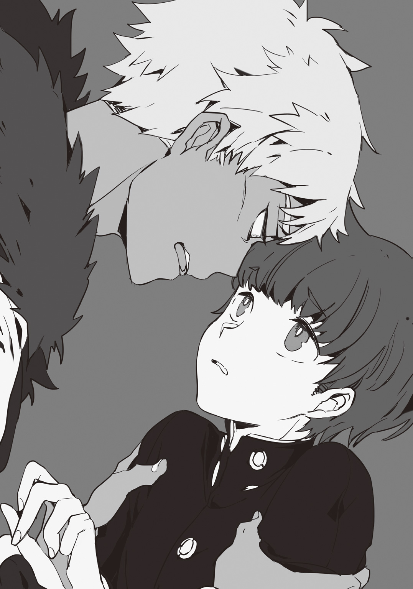
「............」
「俺は、......お前を疑いたくない」
全てが演技だったら？ こんな奈倉を目の前にしても、皆藤はその邪魔な疑惑を振り払えないでいた。
辻丸には嵌められるなと忠告された。四月一日からも人を信じすぎるのはどうかと言われた。それをどうしてわざわざ俺に言ったんだ？ と、皆藤は振り返る。奈倉の中では皆藤を疑うということは許されないことなのだろう。それでも、彼の口から「俺は殺ってない」なんて聞けていない。
しかし奈倉は声を絞り出した後、皆藤を疑いたくないと宣言した後、初めは割り切れない様な顔をしていたというのにフッと息を吐くと、切り替えたようだった。
「いいか、思いっきり殴れよ。でないと喧嘩じゃねえし、お前の力じゃそれでもわからないからな」
――それは力の差が歴然、という断言だ。何故断言する？
「......お互い、立てなくなったらカメラに向かってオーナーを呼ぶ。きっと応答があるはずだ」
――話を進めないでくれ。まだ、まだ俺は......――。
「......いいな？」
――まだ俺は、あなたを信じられていない......――！
試合開始の合図もなければ、スタートの号令もない。踏みだしがわからない。
どうしてこんなことに巻きこまれたんだ？
それが今更になって浮上したが、奈倉はいつもと目つきを変えて、踏みだした。本気でやらなければ喧嘩で済むかわからない。それくらいわかっていた。
それでも、皆藤はその場から一歩を踏みだせないでいた。
コツン......コツン......と、階段を下りる足音が響いている。階段に灯りはなく、壁伝いにしか歩けないが入り口を開けっ放しにしてきたのと、出口に当たるドアについた小窓から少しの灯りが漏れてぼんやりと段差が見えた。
入り口のドアは、この屋敷の地下一階、娯楽室と温泉施設とのちょうど真ん中の床にあった。ただそのドアは遠隔操作式のリモコンのみが開閉出来る仕組みで、屋敷に住んでいるだけではそんなドアは見つけられるはずもない。
そして何故、このドアが開いたかというと、勿論オーナー達がリモコンのスイッチを押したから。
階段を下りきるとプシューと音を立ててドアが開く。その先の部屋は照明が無く、ただ突き当たりの壁一面にモニターがズラリと並んでいるだけだった。
屋敷内全域を映し出すそのモニターの光はぼんやりと青白い。
「おめでとうございます！ 貴方がこの殺人ハウスの生き残り、素晴らしい殺人鬼です！」
パチパチと拍手しながら出迎えた若い男はあのスピーカーでいつもやり取りをしていた男だった。拍手の音は彼以外からも上がっているようで、目を凝らして見てみると彼を含めて五人といったところだろう。
まるで試験の面接官の様に五人は半月形テーブルを囲んでこちらを向いている。だがモニターからの逆光で、顔はよく見えない。
「しかし、流石ですね！ 一般人ではなく殺人鬼をその手で殺してしまうとは！ 私達が見こんだ通りでした」
喋るのはあのスピーカーの男だけで、他の者は口を閉ざしたままだ。
「それで、如何です？ 生き残れた今のお気持ちは......」
皆藤幸司郎さん。
拍手を浴びていたのは皆藤だった。だが、モニターの光でよく見えるその顔は、生き残れた喜びも、仲間が死んだ哀しみも映しておらず、少々不機嫌そうだった。
「如何って言われても......聞いた話と全然違うじゃないか」
「へ？ そうですか？ それにしては名演技だったじゃないですか～」
「冗談じゃない！ 俺の目的通りにことは進まないし、変なルールで遊びやがって」
「しかし、キミは随分と演技が上手いのだな。噂では正直者と聞いていたが......」
ハァ、と皆藤がため息を吐いたところで他の一人が初めて口を開いた。声からして中年くらいの男だろう。
「演技？ いつ俺がそんなことを？」
「「「え？」」」
何人かの声が重なった。皆藤はキョトンとして首を傾ける。
「俺は演技なんてしていない、噓すら吐いていない。そこの人の言った通り、俺はいつも素直で正直者なつもりだけど？」
「......キミィ、頭ダイジョブ？」
「何が？ ......だって、〝死にたくない〟とは言ったりしたけど〝殺してない〟とは一度も言ってないし」
そう。この屋敷に入居して、平和な時を過ごし、住まう殺人鬼達を自身の殺り方で殺し、今も平然とそこにいる彼こそが、まさに〝死神〟だったのだ。
彼は二重人格でもなければ双子もいない。そのようなトリックは用いていない。シェアハウスで仲間達と楽しい時を過ごし、オーナー達の脅迫に怯え、全員をその手で殺した......これら全てが彼そのものだったのだ。
まずは彼のこの屋敷に呼ばれた理由からおさらいしよう。
『十人以上を殺した殺人鬼を集めた』というこの条件に対して驚きを示していたが、それは巷では彼が〝被害者〟として扱われている為だ。だが実際は両親や祖父母、従兄弟、伯父伯母、親族合計十人を彼はその手で殺してきた。
第一発見者等と呼ばれているが、第一発見者なら証拠も消せる、少し考えればわかることだろう。第一発見者なのは当たり前、指紋だってあるのは当たり前だし、死体にすがりついて泣きつけばそれだけでもまずは〝容疑者〟扱いされることはない。
だから知人である辻丸は彼を被害者側だと主張した。奈倉をはじめ入居者たちは、誰も皆藤の裏に気づかなかった。
続いて全ての殺人について。
勿論、一人残らず皆藤が手にかけているのだから、ひとまず答案用紙を用いて答え合わせをしていこう。
初めは入鹿。早朝、フィデルからの伝言を騙り、娯楽室へ呼び出して、彼女の部屋からこっそり持ち出した凶器を使用し、射殺。
カウンターにセットされていたボウガンのトラップは自分でドアを開け、狙われたかのように見せる為だ。
次はフィデル。マフィア、という仕事もあってか、入鹿殺しがバレたのか？ 夜に談話室に呼び出されたので裏口から侵入、不意をついて銃殺。
殺人鬼だと半分ばれていたようだが、確信を得られなかったのか、油断している隙をつかせてもらった。蛇足だが、奈倉はフィデルに睡眠薬を盛られたと考えていたが、あの珈琲を注いだのは皆藤である。
次は終夜。一度襲われた時に彼の額を割ったので好機と判断し、フィデルに呼び出されるより前に彼の部屋へ赴き、絞殺。
殺し損ねて躍起になっていた終夜を相手にしたのだが、そもそもあんな小柄な奴に奇襲さえ食らわなければ簡単なことだ。
次は四月一日。奈倉が買い物で外へ出ている間のあの一時間のブランク。辻丸のことで相談したいことがある、と食堂に呼んで刺殺（奈倉のことにすると辻丸に相談すれば、と言われかねなかったので）。
なかなか綺麗に出来あがった死体だったが自分は目撃者なのだ、と思い出して強制嘔吐をした。ちょっと沁みた。
次は辻丸。彼が行動に出るのは目に見えていた為、奈倉と二人で彼を探そうと誘導し、二階ではち合わせするように仕向けた。彼の足癖もわかっていたので事前に手摺の根元に細工し、金属板とワイヤーは奈倉が寝ている内にセッティング。計算通り、あたかも事故死したかのような遠隔斬殺。
「それじゃあ奈倉さんは？」
「あなた達も見てただろ？ 普通に......全く、馬鹿な提案持ち掛けてきたからそれに乗って、渡された凶器で撲殺。多分確実に死んだとは思うけど」
「あんな見るに堪えない姿にしておいてよく言うわね......」
クスクスと五人は笑う。そういえば殴っている最中、奈倉が何か言っていた気がしたが......。
―――......す...ない、......さ...ゆき......。
あまり覚えていない。
何となく目についたものと言えば、床に転がっていた彼が着けていたロケットくらいか......。あの場から離れる時に足にコツンとぶつかったので、ホールの暖炉へ投げこんでおいた。
以上。六人全員を殺すことが出来た。殺害方法は実は皆藤にとって重要ではないのだ。彼は確実に、全員を自分の手で殺さなくては気がすまない......そちらのほうが重要だ。
彼は奈倉に「シェアハウスに憧れていた」と語った時があったが、あれは演技ではなく本心そのものだ。そして、「こんなことになるなんて」とも口にしたがそれも本音だ。
両親と三人で築いていた温かい家庭、祖父母との思いやりに溢れた生活、従兄弟等との楽しい生活...そして彼はこの屋敷で円満な生活を送った後。
全てを壊そうとしていたのだ。
だというのに、オーナー達から「殺し合え」等と指図され、脅しの写真と手紙も送りつけられてしまったものだから酷くショックを受けた。
あの手紙には、奈倉や辻丸等は『この屋敷から出て行こうとすればリークする』と書かれてあったが、皆藤の手紙にはリークのことだけではなかった。
『そろそろ殺しを始めて下さい』と、いう旨。
だが警戒された上での殺しはあまりしたくない。だから彼は今回のことにはあまり乗り気ではなかった。まぁ、結果的には上手くことは進められたのだが......。
「つまり、〝死神〟対〝凄腕殺人鬼〟の生き残りゲームの結果は見事、〝死神〟の勝利！ ということですね！」
「だから〝死神〟なんて呼ばないでくれ。俺だってれっきとした......そうだな、殺人流儀を持つ殺人鬼なんだから」
幸せな全てを、一瞬にして崩壊させる。〝全て〟という所に、彼は拘りを貫いていた。
皆藤幸司郎は「鏖殺」の殺人鬼。皆殺しの殺人鬼である。
では次に、少しばかり昔話をしようか。
これと言って変わった趣味も無く、変わった素質も無く、別段才能があるという人間には生まれてこなかった。つまり、彼は平々凡々な人間だったのだ。幼少の頃は友達を作るのも下手くそで、内向的な性格が皆藤幸司郎という少年の妨げになっていた。
ある日、彼はテレビである番組を見る。といっても、平日の真っ昼間によく流れている、俗に言われる「昼ドラ」という物だった。男と女のドロドロとした関係を延々と、まぁよく飽きもせずに放映しているソレ。
その陰湿さに彼が惹かれた訳ではなく、たまたま彼がその番組を目にした日にたまたま流れた「一家惨殺」という話が、その少年を虜にしたのだ。
ひとつの家という「箱」の中に築かれていた幸せなひとつの家庭という「中身」。それがたったワンシーンの間に崩壊し、真っ赤に塗り潰されてしまった。その劇的光景と展開と、絶望に、少年の心は激しく波打ち......。
まずは「父」と「母」という中身を消してみた。
手に握る包丁が人体を貫くその感触、刺しこみ抜いてみれば真っ赤な鮮血が次から次へと溢れ出るではないか。その見たことも無い光景はまた彼の心を大きく揺さぶった。
「すごい......。〝しあわせ〟が壊れるって、こういうことなんだ！」
自身の心に築き上げた『幸せ』という構築物がガラガラと崩れ落ち、その赤い液体と共に足元へ流れ落ちる感覚、そして『哀しみ』という最高の感情が脳を刺激した。これこそが、きっと自分の人生を彩ってくれる最高のエッセンスなのだ、と。少年はただ、その小さな悲劇の舞台の主役、「悲劇の主人公」になりたかった。
それからはまず、祖父母の家へ送られて、殺して、従兄弟の家へ送られて、殺して、伯父の家へ送られて、殺して、......殺して、......殺して。その繰り返し。
新しい「箱」の中で、幸せに溢れる温かい「中身」を完成させ、それをいとも簡単にその手でぶち壊す。砂場で山を作り、自分でズタズタに踏みにじる子供の遊びと同感覚だった。
「幸司郎君、本当に...下宿で、大丈夫かい？」
「大丈夫ですよ。......僕は、僕だけが生かされているんですから」
「......」
「ちゃんと、生きないと」
「！ ......。強いんだね......キミは」
「死神」だなんて呼ばないでくれ。「可哀そうだね」「大丈夫？」「いつでも力になってあげるよ」「強いんだね」......その数々が。
あぁ、その同情の言葉こそが、彼の人生における最大の甘い蜜。ゾクゾクと快楽が背筋を撫でていく。
幸せに対する笑顔も、崩壊に対する笑顔も、心の底からの喜怒哀楽だ。そうでなければ本物の「幸せ」は築けないのだからそこに関しては彼も本気、それを破壊するのも、本気。
皆藤幸司郎という少年は、ただ己が欲望のままに、ただ全てを楽しんでいるだけなのだ。
「だけど、何だよあの報酬制度」
「え？ お金欲しくなかったですか？」
「それ以前の問題だ！ あんなことしたら俺がせっかくこっそり殺してんのがバレやすくなるじゃないか」
殺人鬼であるはずがない皆藤に報酬が入るということは、彼が誰かに嵌められているのか、本当に彼が犯人か、という選択肢が表れてしまう。それではうかうかしてられないし、嵌められている役を演じなければならなかった為、純粋に楽しめない。
また、殺し合いが始まった途端、オーナーらに連絡が中々取れなかったり口出ししてこなかった理由はココにあった。犯人が容疑を隠したいと言っているので、こちらから明かしてしまえば犯人を怒らせるだけなのだから、それでは意味が無い。
そして、ここまでの説明を終えたところでようやく本題へと話は進む。
「とりあえず、雇う云々よりまず先に聞きたいことがあるんだけど......」
「何でしょう？」
「お前らの正体は？」
皆藤は首を傾げながら尋ねた。
「ミーたちのコト？」
「警察にも手が回せて、政治家とかそういうんじゃないんだろ？」
「そうよ。私達はどちらかというと貴方に近い立場」
「？」
そこにいる五人は正確にはわからないが性別の統一もないし年齢にも幅がある。それでは組織か？ と聞くとそれもまた微妙だと言うのだ。
「組織って程でもなく......ひとつの集まりみたいなものだ」
「集まり......」
「私達は政治家連中・警察連中の汚職消し、暗殺、隠蔽というところの殺し屋連中です」
「成る程、フィデルみたいなもんか」
つまり、手が回せるというよりもただ単に大事な顧客等に釘が刺せていたということだ。こちらの邪魔をすれば情報漏洩だけに留まらず、顧客等を抹殺することも可能。
「でもなんで殺し屋がこんな選抜戦みたいな真似を？」
「私達はもっと強力で、尚且つ確実な力を手に入れたかったの。だから、殺人鬼から殺し屋に転じれば即戦力になるでしょ？」
「だから皆藤さんへは特別待遇としてたーくさんのお金もお仕事も今後の身の安全も保証します！ それではっ」
ようこそ！
若い男の声に五人は立ち上がって皆藤を快く仲間へと迎えた。それを皆藤は納得したように頷いて、彼等に宜しく。と笑顔を向ける。
拳銃と共に。
「......え？」
「な、何をしてるんだ......皆藤？」
「さっきホールで確認した通り、本当にお前ら丸腰なのか......殺し屋が聞いて呆れるなぁ」
生き残りも殺す罠なんじゃないか？ と、この部屋に来る前に警戒心を示しておいたが、若い男が答えた通り、全員敵意がないことを示すために今日は一切武装していないと白状したのだ。
どいつもこいつも馬鹿ばかりだと嘲笑するしかない。
「銃殺の殺人鬼、しかもマフィアであるフィデルが一丁しか銃を持っていないわけないだろ？ 流石にマシンガンとかは重いから拳銃にしたけど......」
「な、何を言ってるの!? 私達は貴方にただ協力して欲しいだけなのに......まだ何か必要なの!?」
「俺、殺し屋じゃなくて殺人鬼だから。別にお金とか要らないし」
「じ、じゃあ何が......！」
カチャリと銃口を上げると五人は壁にベッタリ貼りついた。残念ながらこの部屋の出入り口はたったひとつ、皆藤が先程入ってきたソレしかない。
「だから、俺殺人鬼だから」
「はあ!?」
「一体何を......！」
拳銃の弾はきちんと確認した。この拳銃は十二発も装填されている。
モニターの青白い光に照らされて、皆藤の瞳は青く爛々と光り、ニィ......と口角が上がった。
「お前らも殺さなきゃ、〝皆殺し〟にならないだろ？」
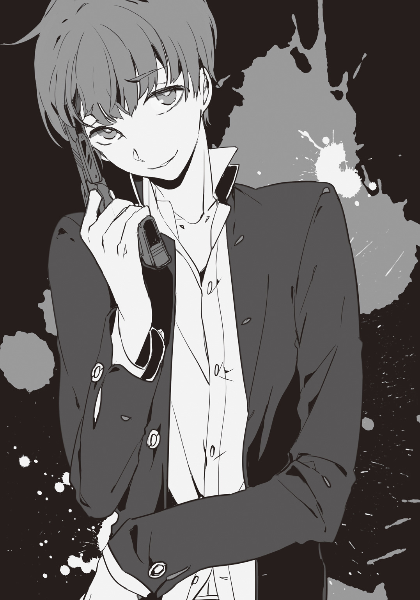
初めまして。小説はあとがきと最後の一文から読む派の藤津一です。イヤな奴。
今作は元々趣味でネットに書きつつ、完結し、そこそこ評判も良かったので「じゃあどこかに投稿してみようかなぁ」と大幅に直してみて、金賞を頂けて、更には有難い事に本にするよ......といってもらえたものです。初め聞いた時は本当に吃驚しました。内心「え？ ドッキリ？」とも。今でも「どうか夢が覚めませんように」と思っています。
しかしまぁ嬉しい反面、やはり本という媒体になるのは気恥ずかしいのが率直な感想です。これ趣味小説でしたから。修正しても加筆しても、そりゃ勿論やりたいことをやり散らかすのが趣味ですから、やれるところまでやってます。やりました。自分の頭をパカッと開けて「さあご覧あれ」と披露している気分です......。うーん......。
「殺人ハウス」だなんてけったいな、まぁ解り易い題名ではあるのですが......コレ、元々はデスゲームジャンルに挑戦したくて着手したんです。そしてまたシェアハウス物を一度きちんとやってみたい夢もあったので加えたんです。でも普通の人間が閉じこめられて殺し合い、ってのもアレなので「殺人鬼詰めこめばより円滑に殺し合いするはずさ」と。
全っ然、円滑じゃなかったですけどね（笑）
挿入話と題している合間に入っている小話は、本編が完結した後に書いた物で「早めに死んだキャラは掘り下げ出来なかったなぁ」という物足りなさと、ネットに上げていたので読んだ方からキャラの評判が良かったのもあり〝サービス〟と言う訳で、番外編として書いた物を順に差しこみました。
コレを入れたおかげで凄い内容量になりましたが......。分厚くてスミマセン。別物としても楽しんで頂けるかなぁ......と吞気に思ってます。
最後に、こんな悪趣味全開の作品を読んでもなお拾って下さった担当編集様、本作には勿体無い美麗イラストを描いて下さったスオウ様、本書に関わって下さった皆様。
そしてここまでお付き合い頂いた読者の皆様方、本当に有難う御座いました。
若輩者、精進致します。
藤津 一
本書は、ジャンプ小説新人賞'14Summer小説フリー部門金賞受賞作『殺人ハウス』を大幅に加筆修正したものです。
藤津 一 HAJIME FUJITSU
ジャンプ小説新人賞'14Summer小説フリー部門において、『殺人ハウス』で金賞受賞。デビュー作となる。
スオウ SUOU
イラストレーターとして小説、雑誌のイラスト、ＣＤのジャケットなど多岐に仕事を展開する。
２０１５年には初の画集を発表。
ジャンプジェイブックスDIGITAL
殺人ハウス
著 者 藤津一
画 スオウ
©2015 H.Fujitsu / Suou
２０１５年５月31日発行
この電子書籍は、ジャンプジェイブックス「殺人ハウス」
２０１５年４月８日発行の第１刷を底本としています。
装 丁 米田龍平（Y's）
担当編集 六郷祐介
編 集 人 浅田貴典
発 行 者 鈴木晴彦
発 行 所 株式会社 集英社
〒１０１－８０５０
東京都千代田区一ツ橋２丁目５番10号
０３－３２３０－６０８０（読者係）
制 作 所 株式会社デジタルディレクターズ
本作品の全部また一部を無断で複製、転載、改竄、インターネット上に掲載すること、および有償無償に関わらず、本データを第三者に譲渡することを禁じます。なお個人利用の目的であっても、コピーガードを解除しての複製は、法律で禁じられています。